本電子書籍を示すサムネイルなどのイメージ画像は、再ダウンロード時に予告なく変更される場合があります。
本電子書籍は縦書きでレイアウトされています。
また、ご覧になるリーディングシステムにより、表示の差が認められることがあります。
口絵・本文イラスト●成海七海
漫画●もすこんぶ
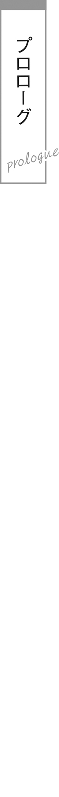
クラスメイトと結婚した。
しかも学校一苦手な、天敵のような女子とである。
普通の物語の結婚は、ハッピーエンドだ。
だけど二人の物語では、アンハッピースタートだった。
高校の廊下を歩いていた
だが、『黙っていれば』の注意書きがつく。
目が合うなり、朱音は細い眉を
──面倒なことになりそうだ。
才人は廊下を引き返そうとするが、間に合わない。朱音はツカツカツカと靴音も高く近づいてくる。
才人はネクタイを
鼻筋の通った、美しい顔立ち。
大きな瞳には知性が輝き、薄桃色の唇はしっとりと湿っている。
アクセントに一房だけ作った三つ編みも、女の子らしく
しかし、その表情は、
ドスの利いた声で、
「私と結婚してること、クラスのみんなに言ったら殺すから」
「そのくらいで人を殺すな」
「そのくらいじゃないわ……あんたと結婚してるなんて知られたら、私は死ぬしかないもの。社会的生命が終わりだもの！」
「どれだけ俺のこと嫌いなんだ」
とはいえ、それはお互い様。
「俺だって結婚を知られたくはない。なんのメリットもないし、人には話さない」
「信じられないわ。私と毎晩一緒に寝てるって、全校生徒に話すつもりでしょ！」
「言わん」
朱音が震える。
「じゃ、じゃあ……全世界の人に……？」
「話すか。命に賭けて秘密は守る」
才人が宣言すると、朱音はため息をついた。
「分かったわ。あんたを信じる」
「良かった」
「その代わり、ボイスレコーダーをあんたの体に仕掛けるわ。少しでも結婚の話をしたら半径一キロを巻き込んで爆発するようなレコーダーがいいわ」
「まったく信じてないよな！」
才人は背筋が寒くなる。
まさか自分が高校三年生で結婚するなんて思いもしなかったが、よりにもよって相手がクラスの大嫌いな女子とは。
──どうしてこうなったのか……。
その理由は、四日前にさかのぼる。
３年Ａ組の教室に、
「あんた、昨日の学級日誌、適当に書いて帰ったでしょ！」
「ちゃんと書いたぞ。日直の仕事だからな」
今日の日直の朱音が、才人の机に日誌を
「『本日の感想欄』が『特になし』ってなんなのよ！」
「特に感想のない一日だった」
「科目欄に教科が書いてないわ！ 『時間割を参照』ってなんなのよ！」
「特に時間割の変更もなかったからな。必要か？」
才人は肩をすくめた。
「必要だから書くところがあるんでしょ！ 黒板もきちんと消してないし、連絡事項も書いてないし！ そして欠席者の欄に『
「あー、なんか漢字のデザイン
「格好いいけど！」
「『
合掌する才人。
「果てしなくどうでもいいわ！ あんたの落書きに学級日誌を使わないでくれる!?」
「誰も読まないんだから問題ないだろ」
「私が読んだわよ！」
「暇だな」
「暇じゃないわ！」
ぜーはーと息を切らして、朱音は才人を
才人はため息をついた。
「……めんどくさ」
「めんどくさいってなによ！」
「俺にちょっかい出す暇があったら、読書でもしてればいいだろ」
「ちょっかい出してないわ！ あんたの腐った性根を
「結構だ。ほっといてくれ」
学級日誌なんて読んだことがない才人としては、なぜ朱音が怒っているのか理解できない。というか、全体的に
朱音の親友の
「もー、朱音ってば、そのくらいにしときなよー。
「俺は断じて泣いてない」
そこだけは譲れない才人だった。朱音から毎日イチャモンをつけられることに
朱音が才人を指差す。
「コイツが悪いのよ。日直としての自覚がないわ。人間としての自覚もないわ」
「人間としての自覚はあるし、人を指差すんじゃない」
「そうね、あんたを指差したら指が腐るわね」
「失礼すぎるだろ！」
さすがの才人も声を荒らげる。
がるるっと猛犬のように荒ぶる朱音を、陽鞠がまあまあと抱きすくめる。
陽鞠の外見はいかにもなギャルだ。
陽光に輝く鮮やかな金髪に、着崩した制服。
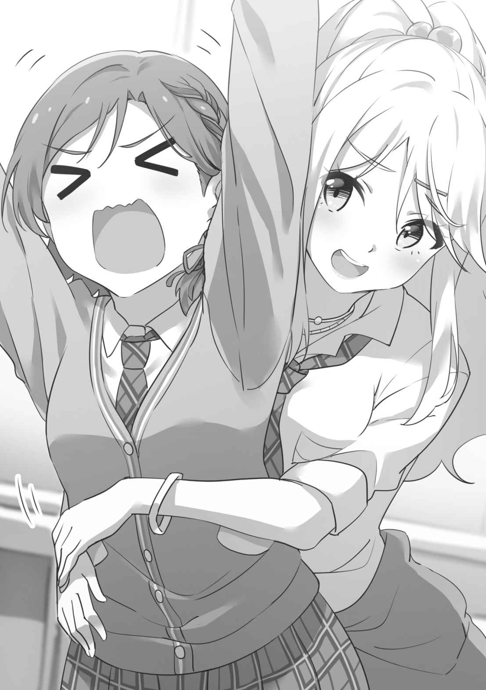
派手に見えるが、性格は
「朱音って、どうして
「どうして？ どうして……？」
朱音が目を点にする。なぜ空気を吸うのと聞かれたような反応だった。
「考えたこともなかったわ……。顔を見るだけで無性に腹が立つとしか……スリッパの裏で
「生理的に無理ってことだな、ありがとう！」
女子からＧと同じ扱いをされ、才人は朱音を
「
糸青は才人と
人形のように整った容姿で、体も小さい。腰まで届く長い髪が、余計に彼女を小柄に見せている。肌はこの世離れして色素が薄く、白タイツが似合っている。
「ケンカはしていない。一方的に絡まれているだけだ」
「兄くん、
糸青が才人の頭を
「分かってくれるのはシセだけだ……」
「そう、兄くんの理解者はシセだけ。シセは兄くんのこと、生理的に無理じゃない」
照れもせずに告げる。
人形そっくりなのは顔の造作だけではなく、普段から表情も口調もたいして変わらない。多くの生徒には糸青の思考が分からないらしく、宇宙人だと思われている節がある。
陽鞠が口元に指を添えて考える。
「でもさー、ここまでしょっちゅう絡むってことは、実は朱音って才人くんのこと気になってたり？」
朱音が
「は、はあ!? あり得ないわ！ たとえ世界に才人以外の男がいなくなったとしても、コイツとだけは付き合わないわ！」
あまりにもはっきりと言われ、才人はカチンと来る。
「それはこっちの
朱音と才人は互いにそっぽを向いた。
放課後、
画面には『祖父（
電話に出ると、スピーカーから能天気な声が響いた。
「才人、今から時間はあるか？ なくてもいい。ちょっとお茶しようじゃないか」
「悪いがじーさんとデートする趣味はない。今日は読みたい本がある」
「そんなもん、いつでも読めるだろう。お前にはいずれワシの会社をやろうとしてるんだ。少しはご機嫌取っとかんと後悔するぞ？」
あけすけに言い放つ祖父。
「おじーさま万歳万歳」
才人は棒読みでご機嫌を取ってやった。
「おいおい、冷たい反応だな孫。じーちゃんが傷つくだろ」
「アンタはそのくらいで傷つくタマじゃない」
「よく分かってるな。そして利口なお前なら、じーちゃんの命令に逆らえないことも分かってるな？ 車は既に送っている」
クラクションが背後で鳴った。
黒塗りのリムジンが、才人の後ろにぴったりとついて来ている。運転手は祖父の屋敷に雇われている
才人は早足でリムジンから距離を稼ぐ。
「逃げたらどうなる？」
「カーチェイスが起きる」
「人対車か」
情けもハンデもなさすぎる。
「そう。ついでに確保するとき、二、三発殴られる。大人しく従っといた方が、身のためだと思うがな」
「そんな悪役みたいな
「ここにいる。ほれ、さっさと車に乗れ」
有無を言わさず通話が切れる。
こういうときの祖父は手に負えない。経営で大成功している人間の常なのかは知らないが、自分のやりたいことを押し通す点にかけては並々ならぬ情熱を注ぐのだ。
本一冊のためにリムジンとチェイスするのも割に合わない。最悪、ヘリも動員されそうな予感がするので、才人は仕方なく車に乗り込んだ。
運転手が丁寧に挨拶する。
「お疲れ様です、
「アンタが謝ることじゃない。悪いのはじーさんだ」
才人は十人乗りの座席に学生
「そう嫌わないであげてください。あの方も悪い人ではないんですよ……いい人でもないですけど」
「いい人じゃないのは知っている」
ドアが自動でロックされ、リムジンが街を走り出した。スモークガラスの向こうには自由が広がっているが、車内にあるのは
運転手はそつなくハンドルを切りながら、なだめるように話す。
「これでも才人さんは溺愛されてるんですからね、お父様とは違って」
「
「壊れているのは間違いないです。天才ってそんなもんじゃないですか？」
才人は否定できない。
四十年前に起きた大不況、そのどん底に沈みそうになった
結果、北条グループは日本有数のＩＴ企業に生まれ変わった。六十を越えた今なお祖父の才気は衰えず、自ら陣頭に立ってＡＩ事業を推し進めている。天竜はまさに天才なのだ。
「で、俺はどこに連れて行かれてるんだ？」
「ついてからのお楽しみ」
「は？」
「との、ご命令です。ホント勝手な当主様ですみません」
「もういい。慣れた」
才人はシートに深々と背を預けた。
リムジンから降ろされたのは、山奥の料亭の前だった。
ゆったりとした日本庭園に囲まれ、玄関先には
才人の父親は天竜の長男だが、北条グループの役員というわけでもなく、ごく平凡なサラリーマン。その家庭で生まれ育った才人にとっては、日常的に足を運べる店ではない。
まだ祖父は到着していないようだったので、才人は外で待つことにした。高級な店の中にずっといるのは息が詰まる。
長椅子に腰掛け、山の空気を楽しみながら本を読んでいると、近くから声がした。
「な、なんで、あんたがここにいるのよ！」
顔を上げる才人。
「……げ」
そこに立っていたのは、天敵のクラスメイトの
「じーちゃんに呼ばれたからだが……お前は？」
「おばあちゃんに呼ばれたのよ。って、あんたには関係ないでしょ！」
「まあ関係ないが、先に聞いてきたのはお前だぞ？」
才人が指摘すると、朱音はぐぬぬと拳を握る。
ドアのところまで行って店内を
諦めて長椅子の方にやって来ると、才人から距離を置いて思いきり端に腰掛ける。後ろ髪を手ではね上げ、わざとらしくため息をつく。
「あーあ、せっかくおばあちゃんと食事できるって楽しみにしてたのに、あんたに遭うなんて気分が壊れちゃうわ。嫌な偶然ね」
「それは完全に同意だ。読書の邪魔はしないでくれ」
才人が本に目を落とすと、朱音は長椅子に手を突いて身を乗り出してくる。顔がぶつかりそうな至近距離で
「はあ!? 邪魔なんてしないわよ！ 私が構ってほしがってるみたいに言わないで！」
「言ってない。お互い用はないんだから、しばらく黙ってろ」
「その態度が気に入らないわ！ ちゃんと謝るまで黙らないから！ 永遠に！」
「お前は俺が謝るまでついてくるつもりか」
「そうよ！ どこにだってついて行くわ！」
言葉だけ聞いていれば
「うざすぎる……」
「うざいのはあんたの存在でしょ!?」
「お前の存在だ。十キロ圏内から消えてくれないか」
「あんたが消えればいいでしょ！」
才人とて、理由もなく朱音に苦手意識を持っているわけではない。こうも毎日突っかかってこられたら、げんなりするのも当然だ。親戚の
今日もまた言い争っていると、料亭の前にオープンカーが走ってきた。
ドゥンドゥンと大音量で音楽を鳴らし、磨き抜かれたボディも
運転席の男は
完全にパリピの
「じーちゃん？」
「おばあちゃん!?」
老いても
「あらあら、もう始めちゃってたのねえ。若い人はせっかちなんだから」
「部屋で待っていれば良かったのに。先に食べていても構わなかったんだぞ」
天竜が苦笑する。
「なんの話をしているんだ……？」
「さあ……？」
才人と朱音は顔を見合わせる。
そんな若人たちを置いて、朱音の祖母と天竜はさっさと料亭に入る。
「二人とも早く来なさい。いつまでそこに突っ立ってるんだ」
「二人って……俺と
「ちょ、ちょっと、どういうこと、おばあちゃん！ 全然分かんないんだけど！」
追いかける才人と朱音。なぜ自分たちの祖父と祖母が知り合いなのか、オープンカーで
朱音の祖母が振り返った。
「今夜は四人で食事だからよ」
「なんで!?」
「大事な話があるのよ」
「コイツと食事会なんてムリよ！ 気持ち悪すぎて確実に吐く自信があるわ！」
「同じく。せっかくの料理に失礼だ」
才人も主張する。
朱音の祖母がにっこりと
「諦めなさい」
「ふぎゅっ」
祖母に首根っこを
──この女を黙らせることができるヤツがいるなんて！
才人は軽い感動すら覚えるものの、その襟首も祖父に
「窒息死しそうなんだが、放してくれないか」
「死にはせんさ。逃げようとしなければな」
逃げなくても首が折れそうな握力。老人とは思えない。
料亭の従業員たちは口出しをしようとはせず、
四人が通されたのは、離れの個室だった。
広々とした和室に
まずは飲み物と共に突き出しが運ばれてくる。山菜と数の子の油
天竜は日本酒の
「まずは、このめでたい日に乾杯」
「……かんぱい」
朱音はふくれっ面でオレンジジュースのグラスを抱えている。
──めでたい……？ なんのことだ……？
才人は胸がざわついた。疑心暗鬼になってしまっているのは、出入り口の戸が固く閉ざされているせいかもしれない。
しかしながら、天敵の女子が横にいる状況では、才人もくつろげない。
「おかわりお願いします」
朱音がグラスを仲居に差し出した。
「お前、さっきからオレンジジュースしか飲んでないな」
才人は思わず突っ込んだ。
「お
「俺もだ。胃袋を収縮させる成分でも出してるんじゃないか、お前」
「残念だわ、すごいご
「お前が量子単位まで消滅してくれた方が早いな」
才人と朱音のあいだで火花が飛び散る。
祖父母が
「わっはっはっ、二人とも仲が良くてなによりだ」
「ホントねえ。私たちの若い頃を思い出すわぁ」
「「どこが!?」」
才人と朱音の両方が声を上げた。料亭に来てからケンカしかしていない気がする才人である。天才天竜もついに衰えたのかと心配になる。
「結局、大事な話ってなんなんだ？ 俺たちはどうしてここに呼ばれた？」
祖父母は視線を交わし、うなずき合った。孫たちを見据え、声を
「「結婚しなさい」」
「「………………は？」」
才人と
「今、結婚しろとか聞こえた気がしたんだが……なんの隠喩だ？ いや、
「無理やり裏を読もうとするな。結婚しなさい」
朱音が机に手を突いて立ち上がる。
「い、意味分かんないんだけど！ 結婚!? どういうこと!? 私たち、まだ高校生よ!?」
「十八歳なら結婚はできるわ。結婚しなさい」
朱音の祖母もはっきりと繰り返した。もはや聞き間違いではない。
天竜は深々と息を吐いた。机に肘を突いて姿勢を崩し、遠くを見るような目をする。
「ワシと
「千代さんって？」
「私が千代です」
才人の疑問に、朱音の祖母が答えた。
「若い頃のワシと千代さんは、ぶっちゃけ相思相愛だった……と思う。だが、すれ違いが続いて結ばれなくてな。ワシは
「それでオープンカー乗り回して千代さんと第二の青春を
才人がつぶやくと、千代は
「私の夫もだいぶ前に亡くなっていたし、今は毎晩、天竜さんのお世話になっているわ」
「そういう話は聞きたくないわ！」
朱音は顔を真っ赤にして叫んだ。才人も同感だった。なにが悲しくて祖父の赤裸々な性事情を告白されなければいけないのか分からない。
天竜が
「で、だ。ワシらはちゃんと人生を楽しんだとはいえ、やはり『もし最初から結ばれていたら……』と考えてしまうわけだよ。きっと最高の人生になったはずだ。だから、自分たちの果たせなかった
千代が優しく語りかける。
「朱音。おばあちゃんのために、結婚、してくれるわよね？」
「嫌よ！ そんなの勝手すぎるわ！ 結婚っていうのは、本当に好きな人と恋愛して、ロマンチックなプロポーズをされて、自分の意志でやるものよ！ 人に言われてするものじゃないわ！」
「乙女だな」
「お、乙女じゃないわっ！ 当たり前のことでしょ!?」
「俺も断る。こんなヤツと結婚したら不幸になるに決まっている」
「はあ!? なに失礼なこと言ってるの!? 私と結婚したら幸せになるに決まっているわ！ あんたがどんな女の子と結婚するよりもね！」
「お前はいったいどうしたいんだ……結婚したくないのか、したいのか……」
「したくないわ！ 特にあんたとは、ぜ────ったいに嫌よ！」
才人は肩をすくめて祖父の
「というわけだ。俺たちは二人とも結婚する気はまったくない。この日本で本人の意志に反して結婚を強要することはできない。悪いが諦めてくれ」
「くく……くくくくく……」
「ふふ……ふふふふふ……」
天竜と
「な、なにがおかしいのよ……」
朱音が
「お前たちがそう答えるのは予想していた。本当にお前たちは……ワシらの若い頃を見ているようだ」
天竜は、どこか
が、神妙な顔をしていたのも
その合図に応え、入り口の戸が開いた。
天竜の秘書が、汚い犬を連れて入ってくる。首に縄をつけられてはいるが、毛皮は泥だらけだし、鼻水を垂らしているしで、明らかに野良犬だ。
「才人。お前がどうしても従わないのなら、
「なんだその犬は!?」
「その辺で拾ってきた犬だ。正直、我が社のトップに立つには実務能力に不安が残るが」
「犬だからな！ ハンコすら押せないからな!?」
しかも犬の中でも
「ハンコくらい押せるだろう。専務が肉球にインクをつければ
「
「そうだな。ひょっとしたら
「正気か？」
「正気で会社を経営できると思うのか？」
天竜は、にいっと口角を
──
才人は額を抱える。
しかし、天才天竜ならやりかねない。才人の父親である長男にすら要職を与えず、無能だからという理由で会社から追放した祖父なのだ。その体内には血ではなく、鋼色の液体が流れているとまで
「
「…………っ！」
朱音の顔色が変わり、肩が震え出す。
それを確認した天竜が、満足げにうなずく。
「よくよく考えてみろ。どうするのがお前たちにとって、本当の利益なのか。目先の感情に
天竜と千代はオープンカーで夜景を見に行き、帰りのタクシーは才人と朱音の二人だけだった。
白いシートカバーの、無機質な匂い。後頭部しか見えない運転手の、トニックの臭い。
夜の街の光がこぼれる大通りをタクシーに揺られ、後部座席の才人は思案に沈む。
「け、結婚って……」
朱音は膝の上で手を握り締めた。
「あんた、どうするの……？ 私と、結婚するの……？」
泣きそうな表情で才人を見上げる。いつもの攻撃的な彼女とは違ってしおらしい。そうしていれば、普通に美しいだけの少女だ。
「お前はどうするんだ」
「分かんないわよ！ こんなこと、考えもしなかったから！」
「俺も予想外だった」
現代の日本に生きるほとんどの若者が、想像もしないだろう。人は恋をして愛にたどり着くのが、唯一にして最善の正解だと教えられているのだから。
「お前のばーちゃんに、なにを言われたんだ？」
「あ、あんたには関係ないわ」
「関係ないことないだろう。向こうの手札がなんなのか、俺たちはお互い知っておく必要がある。でないと、不平等な条約を押しつけられるだけだ」
「必要ないわ。私の心を
自らの両腕を抱き締めるようにして腕組みする。これはガードのポーズ。あらゆる干渉を拒絶してしまった人間の思考を引き出すのは容易ではない。
「じゃあ勝手にしろ」
「勝手にするわよ！ 私の将来だもの！」
これから結婚するかもしれない二人とは思えない態度で、顔を背けた。
帰宅した朱音は、ベッドにうつ伏せで崩れ込む。
今日、祖母から電話がかかってきたときには、明日からも今まで通りの暮らしが続くものだと思っていた。けれどたった数時間で、天地はひっくり返った。
しかも、よりにもよって相手が
才人は朱音にとって、目の上のたんこぶだ。才人が学年一位の成績に居座っているせいで、朱音はどう頑張っても一位になれない。それが高校入学からずっとだ。あの澄ました顔を見るだけで、無性に腹が立ってしまう。
しかし、料亭で祖母にささやかれた条件は強力だった。我慢して従えば、朱音の夢はきっと
独りで考えていると頭が破裂しそうだったので、朱音は
「ほいほーい！ どしたのー、朱音？」
スピーカーから陽鞠の明るい声が聞こえてくると、ささくれだった心が少し
「あ、あのさ……もしも、なんだけど。陽鞠が家の命令で、好きでもない相手と結婚させられることになったら、どうする？」
親友の意見が聞いてみたかった。
「えー？ そんな縄文時代みたいなこと、あり得ないよー」
「そ、そうよね……おかしいわよね……」
縄文時代に家制度やお見合い結婚が存在したのかは不明だが。
「でもまあ、私なら断るかな」
「どうして？」
あっさりと言われ、
「……私、好きな人いるから、さ。その人以外とは、結婚したくないよ」
「陽鞠って好きな人いるの？ 初耳だわ！ 誰？」
起き上がる朱音。
「朱音って人のそういう話、興味ないんだと思ってた」
「普段は……興味ないんだけど……」
朱音はきまりが悪くなり、素足を擦り合わせる。結婚だのなんだのと騒がれて帰ってきたら、嫌でも色恋沙汰に思考が寄る。
「誰なのかは……まだ内緒」
「教えなさいよ。うちのクラスの子？」
「……ん」
消え入りそうな、小さな声。いつもの陽鞠からは想像もつかないほど、いじらしい。
──恋すると、人って変わるのかな。
朱音はちょっとだけ羨ましいと感じてしまった。世間一般の乙女が浮かれる恋愛の味。それを知らずに結婚してしまうのも、
陽鞠が照れ隠しのように尋ねる。
「あ、朱音はどうなの？ 好きな人とか、いないの？」
「好きな人？ 好きな人……。好きな人…………？」
朱音は虚空を見上げて考え込んだ。脳への負荷が高すぎるのか、だんだん頭が空白になっていく。
「いなそうだね！」
陽鞠の声に、はっと我に返った。寝落ちしかけていたらしく、薄くよだれが垂れている。
「今すぐ死んでほしいヤツはいるけど」
「それは名前言わなくても分かるよ！」
「そうよ……アイツさえ死んでくれれば、すべて解決なのよ……。アイツの上に
朱音は爪を
「好きな人がいないんなら、別に結婚してもいいんじゃない？」
「そう、かしら」
「結婚すると、家賃も光熱費も半分ずつになるんだよ。まとめて料理したら食費も安く済むし。便利じゃん」
「そんな理由で結婚するのはどうかと思うわ」
「だよねー、あはは」
屈託なく
「だけど、強制的な結婚でも…………は、しないといけないのよね？」
「え、なに？」
「ほら、男の子と女の子がする……あの……」
「ごにょごにょ言われても分かんないよー」
「だから……その、え、え、えっちなことよ！」
「そりゃ、しなきゃいけないよね」
「やっぱり……うぅぅ……」
熱い
「だって家の命令ってことは、跡継ぎ作るの期待されてるんじゃない？ 百人ぐらい」
「百人は無理よ！」
我が子だけで教室が三つ埋まるレベルだった。
「行ける行ける。五つ子……ううん、十人子なら十回で」
「私はそんなタフじゃないわ……」
「朱音の話なの？」
「私の話じゃないわ！ もしもの話よ！」
念を押しておく。
「もしも朱音がそういうことになったら、参考になる雑誌貸したげる！ この前、『彼のハートを独り占め★夜テク特集』って記事があったんだー」
「要らないわ！ 私は絶対、結婚なんてしないんだから！」
朱音はスマートフォンを放り投げ、枕に顔をうずめた。
学習机の上で、時計の秒針がゆっくりと回っている。
それを眺めながら、
結婚と会社。
恋愛にはそこまで興味はないとはいえ、皆無というわけでもない。学生時代を有意義に過ごすため、恋の一つや二つはした方がいいということは理解している。
そして押しつけられた相手は、あの朱音なのだ。学校で絡まれるだけでも面倒なのに、何十年も自宅でケンカを吹っかけてこられたら、さすがに神経が
才人のベッドには、
「
糸青が机の上に座って、才人の顔を
「別に悩んではいない」
「悩んでる。兄くんが考え事をすると、ここに
眉をひそめてみせる糸青だが、元が無表情なのであまり変わっていない。行儀悪く白タイツの爪先で才人の膝をつついている。
「たいしたことじゃないよ。机に乗るのはやめなさい」
「分かった」
糸青は素直に従い、才人の膝に腰を下ろした。
「なぜこうなる」
「兄くんが心配だから。話してくれるまで離れない」
体重を感じさせない小柄な体。湖水よりも澄んだ瞳が、西洋人形のように長い
才人はため息をついた。
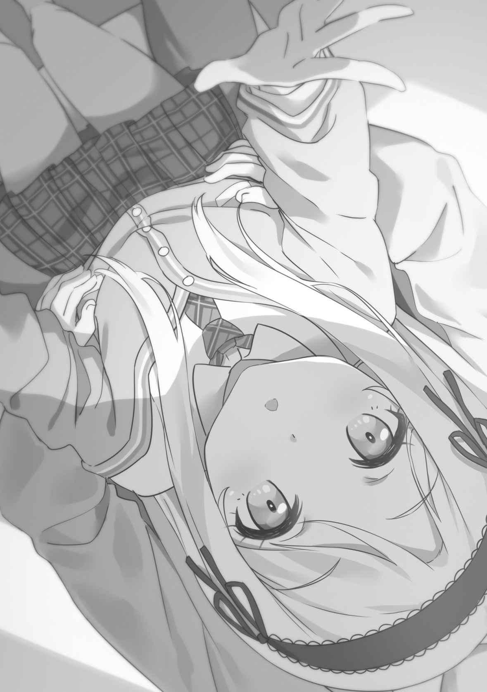
「じーちゃんから、無理難題を言われてな」
「むりなんだい？ 全身の皮を裏返しにしてみろとか？」
「そこまで壊れてはいないな。いない……と思う」
孫の
「じゃあ、なに」
「
「じーじ、すごく言いそう」
「言いそうだろ？」
孫二人は祖父の性格をよく理解している。自分勝手で型破りな天才
「
「どうしたいんだろうな」
「兄くんは、自由に生きたいの？ 会社が欲しいの？」
「できれば両方だ」
「それはワガママ」
「そもそも生物は、本当に自由になることはできない。世界はルールに満ちている。兄くんの細胞も、シセの細胞も、本能という規則に縛られている。ルールから逃げ出すのではなく、ルールを利用するのが最適解」
「……会社を取れと？」
「取らないなら、それもいい。兄くんが落ちぶれてゴミバケツの残飯を
「そんな
「シセは知っている。兄くんの夢を
糸青は才人の胸に額を押しつける。
その体はとても小さいけれど、不思議な頼もしさがある。
「……ありがとう、シセ」
才人は糸青の頭に手を置いた。
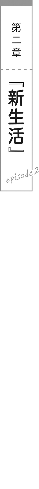
返事の期限が訪れた。
放課後、迎えの車が学校に来て、
「二人とも、心は決まったか？」
天竜が問いかける。
「「はい」」
うなずく二人。
「では、聞こうか。お前たちはどのような人生を選ぶ。愚者の道か、賢者の道か」
「俺は……」「私は……」
才人と朱音は深く息を吸った。
「「結婚します」」
同時に答える声は、身が引き締まるほど高く響き渡った。
「いいのか？」
自分が了承しても
「し、仕方ないでしょ……。結婚でもなんでもしてやるわよ！ でも好きとかそういうのじゃないから！ 全然違うから！」
朱音は唇を
「素晴らしい！」
「おめでとう、朱音。これでおばあちゃんも安心だわ」
「じゃあ、そういうことで。大学を卒業したら、入籍や式の準備を進める」
才人が立ち上がると、天竜が笑った。
「なにを言っているんだ？ 結婚なら、今すぐするに決まっているだろう。お前たちの新居もとっくに準備している」
「なにを言っているんだ……？」
才人は耳を疑った。
「ちょっと待ってー！ 出してー！ ゆるしてー！」
朱音がリムジンの窓を無我夢中で
「諦めなさい、朱音。せっかくの
千代が朱音の手を握ってなだめた。
朱音と才人は天竜のボディガードたちに連行され、新居に向かうリムジンに押し込められていた。扉はロックされていて、びくともしない。
向かいの席にふんぞり返っている天竜を、才人は
「せめて家に一度帰してくれ。学生
「逃げようとしても無意味だ。荷物は既に新居へ送らせている」
「いつの間に……」
「お前たちが学校に行っているあいだにだ。若い時間は有限なのだから、善は急がねばならん」
千代が優しく
「学生さんは忙しいだろうから、婚姻届も代わりに出しておいたわ」
「おばあちゃんのバカああああああっ！」
朱音は膝に突っ伏した。
──俺はもう、コイツと夫婦なのか……？
現実感の薄い状況に、才人は困惑する。恋愛も告白もデートも、なにもかもすっ飛ばした入籍なのだ。心の準備などしようがない。
しばらくして
「ああ……猫は
「現実逃避はやめろ」
気持ちはよく分かるが、
「現実逃避じゃないわ……ほら、私の膝で猫が寝ているじゃない……起こさないように静かにしないと……ふふっ」
「猫はどこにもいないぞ。正気に戻れ」
説得に耳も貸さず、朱音はスマートフォンと見つめ合ってブツブツとつぶやいている。若くして終身刑を
──くそ、見てられん。俺だけでもしっかりしないと……。
才人はスマートフォンで戦略シミュレーションゲームを起動してプレイを始めた。目の前の現実とは無関係なことに頭を使っていると、心が安らぐのを感じた。
リムジンが
鮮やかな空色の屋根、クリーム色の壁。
二階建てで駐車場もあり、花盛りの庭木が植えられている。
車を降りた才人と朱音は、学生
「む、無駄にいい家ね……」
「これ、まさか……」
才人が視線をやると、
「新築だ。お前たちの愛の巣として建てた」
「俺たちが結婚を断っていたらどうするつもりだったんだ」
「なにがなんでも
「くっ……」
才人は奥歯を
祖父に良いように扱われているのが業腹だが、今は従うのみ。自分が実権を握ったらさっさと会社から祖父を追放する、と心に決める。
「とっても素敵な家なのよ～。天竜さんと間取りを話し合ったの。私たちがあなたらと同じ年で二人暮らしを始めたら、どんなところに住みたかったかと想像してね」
玄関に入ると、新品の木材の香りが流れてきた。
才人たちは祖父母に連れられ、廊下を突き当たりまで進む。
そこは、カウンターを挟んでオープンキッチンと
広々としたフローリングに分厚い
「わあ……」
「なにちょっとテンション上がってるんだ」
「あ、上がってないわよ！ 地獄のどん底よ！ 一人でここに住めたら最高だったけど！ あんたと一緒じゃ素敵なお部屋が台無しだわ！」
「ああ、そうかい。こっちこそ夢のシングルライフを楽しみたかったよ！」
額を突き合わせて火花を散らす
それを眺め、
学生
「ここが風呂だ」
天竜が開いたドアの先には、個人の家とは思えないほど見事な浴室があった。湯船は床と一体型になっていて、なめらかな表面に噴射口が並んでいる。
「やけに広いな……」
才人が驚くと、天竜が親指を立てた。
「二人で入るなら、このくらい広くないと困るだろう？」
「ふ、二人でっ!?」
肩を跳ねさせる朱音。
壁のスイッチを、千代が楽しげに切り替える。
「ここを押すと、泡が出てきて泡風呂にもなるのよ～。こっちは、明かりの色を赤から順番に変えてくれるわ。お勧めは雰囲気たっぷりの紫ね」
「雰囲気なんて要らないわ！ 二人で入るなんて絶対あり得ないし！」
朱音は真っ赤な顔で手を振り回す。
「俺も風呂は一人派なんだ……」
才人も顔が熱くなる。
老人の暴走する妄想に付き合わされる若者の身にもなってほしい。青春を取り戻したいなら祖父たちだけでやれと言いたいが、実際にやりまくった上で孫まで巻き込んでいるから始末に負えない。
天竜が腕組みして告げる。
「せっかく若いもんが二人暮らしするのに、一人で風呂に入るのは愚の骨頂。体を洗い合ったり、髪を洗い合ったり、子作りしたりと、使い方はいくらでもあるだろう」
「こ、こぢゅくり……」
もはや
次に
据え付けの
そこまでは良い寝室なのだが……問題は寝室が他に見当たらなかったことだ。
才人は嫌な予感がした。
「あの……ベッドが一つしかないように見えるんですけど……」
朱音が
「無論、二人で一つだ。夫婦なのだから当然だろう」
「無理です！」
「無理だろうとなんだろうと従ってもらう。ソファや床を使うのは禁止。夜は必ず二人で寝ること。これが結婚に付随する最優先の条件だ」
「そんなぁ……」
容赦ない言葉に朱音が震える。
「これ、普通のベッドじゃないのよ。ボタン一つで回転するし、鏡も出てくる。夫婦の夜を盛り上げる曲だって、好きなものを選べるわ」
「そんな機能要らない！」
「大切なことよ。才人さんと二人の共同作業、しっかり頑張ってね」
「共同作業ってなによー！」
祖母に手を握られて言い聞かせられる朱音は、窓をぶち破って逃走しそうな勢いだ。
至れり尽くせりすぎて、才人も引いてしまう。他の女子ならともかく、朱音相手にそういうことをするなんて想像もできない。
その後も、愛の天使と化した老人たちによるお宅紹介は延々と続いた。
設計へのこだわりたるや
一通りチュートリアルが終わった後、老人たちが引き上げる時間となった。
来るときに使ったリムジンはなくなっており、代わりに天竜ご愛用のオープンカーが
オープンカーに乗り込みながら、千代がにっこりと
「後は若い人たちだけでごゆっくり」
「待って！ おばあちゃん！ 置いてかないで！ 見捨てないでー！」
すがりつく孫を
「諦めなさいって言っているでしょう。往生際が悪いわよ」
優しげな表情はどこへやら、悪鬼羅刹の形相。全身から闇のオーラが漂っている。
ドゥンドゥンと大音量の演歌を鳴らし、老人たちがオープンカーで走り去っていく。
「ああぁぁぁぁぁぁ……」
永遠に外にいるわけにもいかないので、
玄関のドアが閉じるなり、朱音は壁際に後じさる。
「す、するの……？」
大きな瞳を見開き、涙ぐんで才人を見上げる。
「は……？ なにをだ？」
「するんでしょ……？ 私が泣いてもわめいても構わず、自分の欲望のままにするんでしょ!? 学校にも行けないぐらい一晩中！」
「だからなんの話だ！」
「しらばっくれないで！ え、えっちなことに決まってるじゃない！ さっきから私の全身を
朱音は震える体を抱き締めた。
「完全に気のせいだからな！ お前に興味はまったくない！」
「私、知っているの……こういうときに男の子が考えることは一つ……えっちなことだけだって……そうはいかないんだから……」
鉛筆を剣のように構える朱音。
特に攻撃力は高そうではないが、必死さは才人にも伝わってきた。ここまで追い詰められている朱音を才人は学校で見たことがなく、
「……よく分かったな。ぶっちゃけ今夜は眠らせないつもりでいる」
「いや──────!!」
朱音の握り締めた鉛筆が砕け散った。意外と攻撃力は高いかもしれない。
才人の背筋を冷や汗が流れる。
「お、落ち着け。俺は無理やりそういうことをする人間じゃない」
「人間だったの!?」
「そこからか!? どう見ても人間だろ!?」
「どうかしら……化けている可能性もあるし……」
「俺はキツネかタヌキか」
結婚初日からこれでは、今後どうなることか。才人は先が思いやられた。
幸い、二階に勉強部屋として一つずつ個室が用意されていたので、二人はそれぞれの荷物を片付けることにした。こうなった以上、祖父母の意向に従うほか選択肢はない。実家に帰っても居場所はないだろう。
ある程度の片付けが終わったのは、真夜中近くになってのこと。疲れ果てていた才人は料理をする気力もなく、キッチンで冷蔵庫の扉を開く。
中にはデリバリーの料理が入っていた。初日は孫たちも家事の余裕がないということを天竜も想定していたらしい。腹立たしい祖父だが、こういうところには気が回る。
才人はピザを大型の電子レンジに入れて加熱する。リビング側のカウンターに座り、ピザを食べようとしていると……朱音の姿が目に入った。
朱音は廊下のドアの陰に隠れ、指をくわえてピザを見ている。きゅるるるるっとお
自分だけ満腹になるのも後味が悪い。仕方なく才人は声をかける。
「……一緒に食べるか？」
「そんな夫婦みたいなことはしないわ！」
いや夫婦なんだけどな、と思う才人だが、認めたくないので言わないでおく。
「別に夫婦じゃなくてもメシぐらい一緒に食べるだろう」
「夫婦じゃなくても私を食べる!? 今すぐ皮を
朱音は慄然とした。
「どんな空耳だよ！」
「空耳じゃないわ！ はっきりと聞こえたわ！」
「お前はどこの世界の音波を受信しているんだ」
「あんたのいない世界よ！」
「残念だがそれは現実世界じゃないな」
「現実にしてみせるわ」
「みせるな。いいから来い、餓死するぞ」
チチチチと舌を鳴らし、
──お前は人に懐かないタイプの野良猫か！
才人は脱力感を覚えた。
とはいえ、朱音がいない方が気楽なのも事実。才人はグラタンとパスタも電子レンジで温め、一人でモソモソと食べる。
──
朱音に半分残しておくべきかとも思ったが、あそこまで邪険にされて情けをかけるのも
手早く風呂を済ませ、明日の学校の準備も終えてから、才人は寝室に入った。
まだ朱音はいない。自分の勉強部屋で寝るつもりかもしれない。
才人もできれば一人で寝たいけれど、
そして、天竜の出した条件を満たしていないとバレたら、犬が社長になるのだ。
万が一のリスクも避けなければならない。朱音が条件を無視するのは彼女の問題だから構わないが、少なくとも才人は従っておく必要がある。
ベッドに置かれていたのは、イエスノー枕だった。しかも両面がイエスだった。
「………………」
朱音との関係でイエスになる未来など考えられないので、才人は枕カバーを
スマートフォンをヘッドボードに置き、備え付けの充電器に接続した。家具や設備は細かいところまで用意されていて、天竜と
ベッドに横たわって目を閉じる。すぐに眠気が襲ってきた。
今日はいろんなことがあった。一生分のサプライズが起きたし、二度とこんな日は訪れてほしくない。そう思っていると。
寝室の扉が開き、廊下の光が
「お、おじゃまします……」
廊下に立っているのは、寝間着姿の朱音。
風呂上がりの蒸気を漂わせ、
恥ずかしくてたまらなそうに
「お、おう……」
瞬時に
クラスメイトの女子が寝室にいるという、異常な状況。たとえ相手が犬猿の仲でも、その破壊力は変わらない。特にこの少女、見た目だけは完璧に
「ベッド、狭いわね……」
「わざと小さいのを買ったんだろうな……」
ぎりぎり二人が横になれるサイズ。なるべく密着するよう、
果実のようなシャンプーの香りが、朱音の
──こいつは危険だ……。
相手が大嫌いな女子だと頭で理解してはいても、体が理解してくれない。学年ＮＯ・１を独占する頭脳派でも、思春期の男子だということに変わりはない。
朱音が掛け布団をめくって潜り込んできた。才人の反対側を向いて横たわる。少し動いただけで背中が触れる距離。風呂上がりの少女の熱が、寝具の中を伝わってくる。
朱音が消え入りそうな声でささやいた。
「ちょ、ちょっとでも変なことしたら、怒るから。結婚は同意したけど、えっちに同意したわけじゃないから」
「……分かってる」
才人は自分の声が上ずっているのを意識した。
「ホントに、ホントにダメだからね？ 私、えっちなこととか、全然したことないし、恋人とかもいたことないし……しょ、処女だから……」
あぅぅ、と朱音の喉から羞恥の声が漏れる。
「大丈夫だ……俺も童貞だから」
才人は自分がなにを言っているか分からなかった。どこがどう大丈夫なのか問われても論理的に答えられる自信がなかった。
「そ、それなら、大丈夫ね」
なぜか朱音は納得してくれた。
新婚初夜とは思えない、背中合わせの二人。
才人は眠りに就くことも、寝返りを打つことすらできないまま、時間が過ぎていく。
すぐそばから、クラスメイトの小さな吐息が聞こえてくる。朱音も緊張して寝付けないのか、呼吸は不規則だ。
「……お前、なんで俺と結婚したんだ」
「…………言わない」
「俺の理由は教えてるんだから、お前の理由も教えてくれていいだろう」
「教えてほしいって、頼んだわけじゃないわ」
「それはそうだが……」
朱音に信用されていないのは分かるけれど、釈然としない。
「とにかく、私はあんたと結婚する必要があって、あんたもそうする必要があった。私たちの結婚は形だけ。でも、形はちゃんと守らなきゃいけない」
「じーちゃんたちに勘繰られたら面倒だからな」
「ええ。非常に不本意だけど、頑張るしかないわ。私は自分の夢を
どうやら彼女も才人と同じく、夢の実現のために結婚を
「しかし……じーちゃんたちから、子供を作れとか条件を追加されたらどうする？」
「こ、こどもっ!? それはっ……！」
うろたえた朱音が身じろぎし、体が才人の手に当たった。
──なんだこのやわらかい感触は……。
手の平に優しくフィットする、丸みを帯びた部分。才人は反射的に、その曲線を握り締めてしまう。これは……クラスメイトのお尻だ。
わなわなと震えながら、朱音が起き上がった。
目にいっぱい涙を
「お、おおおおお尻に触ったわね!? 指を折るわ!!」
「狭いんだから仕方ないだろ!? ぶつかってきたのはお前だ────!!」
初夜の寝室に、新郎の悲鳴が響き渡った。
そして、時は冒頭に戻る。
朝の空気も張り詰めた高校の廊下。
冷徹な
「とにかく、私と結婚してること、絶対にクラスのみんなに言わないで。指だけじゃなく首も折らなきゃいけなくなるわ」
結婚初夜の翌朝にして、この脅しである。ラブラブの新婚生活とは程遠い。
「分かったって。そう何度も言うな、約束は守る」
「あと、学校では結婚についての話はしないで。人に聞かれたら大変だわ」
「お前が話を始めたんだよな？」
「……そ、そうだけど！ これからは気をつけましょうってこと！」
「お前が特に気をつけてくれ。バカなんだから」
「バカじゃないわ！ あんたの方が明らかにバカでしょ!?」
「成績は俺の方が上だが」
才人は鼻で笑った。
「あ、あぐらを
朱音の瞳に
「いつかという割には具体的だな!?」
「あんまり私を挑発しない方がいいわよ。毎晩同じベッドで寝るんだし、私は好きなときにあんたを潰せるんだから」
「だからそういうことを学校で言うな！」
才人は慌てて周囲を見回した。
「あっ……」
口を押さえる朱音。
この少女、クソ真面目なくせにどこかそそっかしいところがあるのだ。昨夜は何度も新居の階段から落ちそうになっていた。そもそも同居がバレないよう時間を置いて家を出たのに、廊下で合流してしまっては無意味だ。
二人はそれぞれ別の出入り口から、３年Ａ組の教室に入っていく。
教室にいた
「おはよー、朱音。才人くんとなんの話してたの？」
「た、たいした話じゃないわ」
「えー？ 才人くんのネクタイ
「怒ってないわ。いつもこの顔よ」
「まあ、朱音はいつも顔怖いけどさー」
「そ、そうかしら？ どこが？」
朱音は慌てて自分の顔を触った。
「なんか、だいたい眉間に
「鬼は言い過ぎじゃない!?」
ショックを受ける朱音。陽鞠がスマートフォンのカメラを内向きで手鏡代わりにし、朱音の顔を映してやる。朱音は眉間を懸命にさすって皺を解除しようとする。相変わらずこの二人は仲がいい。
才人が自分の席に座ると、
挨拶もなく、いきなり才人の頭に鼻先をうずめる。すんすんと匂いを嗅ぐ。
「な、なんだ……？」
たじろぐ才人。
糸青は頭から鼻を離し、ジト目で才人を見た。
「
勘が鋭い。才人は言葉を選びながら答える。
「えっと……父さんが変なシャンプー買って来ちゃってな」
「シャンプーだけじゃない」
糸青が才人の胸元をつまみ、首筋に鼻を寄せた。
冷たい鼻先が首筋をなぞっていき、くすぐったい感触に才人は身をすくめる。
「……女の子の匂いもついてる」
かぷりと、糸青が才人の首をかじった。
「痛っ!?
「噛みちぎらなかっただけ、シセの優しさだと思ってほしい」
「恐ろしいことを言うな」
「付き合ってる人がいるのなら、きちんと教えてほしい。妹として、兄の恋愛事情が報告されていないのは困惑する」
「恋愛事情の報告を妹に求められる方が困惑する」
しかも糸青の顔はたいして困惑している様子でもない。普段通りの無表情だ。
糸青が才人の耳元でささやく。
「……うそ。兄くん、結婚したんでしょ」
「っ……どうして……」
知っているのかと問いただすより先に、糸青が告げる。
「じーじたちが変な動きをしてたから、調べた。新居の場所も分かってる。兄くんが結婚したのは、
才人は糸青の口を手の平で塞ぎ、そのまま頭ごと持ち上げて運び去る。糸青は
才人はベランダに出て糸青を床に下ろし、扉を閉じる。
「兄くんに誘拐された。ロリを誘拐するなんて、兄くんははんざいしゃ」
糸青は
「自分がロリっていう自覚はあるんだな……」
実際、
「頼む。結婚のことについては、誰にも言わないでくれ」
「なぜ？ 結婚はおめでたいこと。クラスのみんなに教えて、お祝いしてもらわないと」
「待て待て待て待て！」
教室に戻ろうとする糸青を引っ張り戻す。
「シセは監禁されている。やはりこれは誘拐」
「誘拐じゃない。高校生で結婚してるなんてクラスの連中に知られたら、大騒ぎになるだろうが。しかも相手はクラスメイトなんだぞ」
「シセは黙っておく義理がない。
「相談ならしただろ」
「あんなの詐欺。シセは口止め料を要求する」
「なんだ……？」
才人は緊張を覚えた。糸青も
糸青は唇に人差し指を添えて思案する。
「んー……口止め料……口止め料……くちどめ……」
そうしているあいだに、
「わー」
糸青は蝶を追いかけてふらふらと歩き出す。
「思いつかないんだな？」
「そのうち思いつく。兄くんの人生はシセの手に握られている」
ぐーぱーと、糸青が手の平を握ったり開いたりする。お遊戯会で踊っている幼児のようで
いつかとんでもない条件を出されるのではないかと、才人は危惧した。
一時限目の授業は、体育館でバレーボールだった。
才人は壁際に座って他のチームの試合を眺める。
糸青はコートの真ん中に突っ立ち、ボールが来てもぼーっとしている。
頭にぶつかったり、顔にぶつかったり、体の側面に直撃したり、まるでボールを吸い寄せるブラックホール。当たる度に小さな体が吹き飛ぶが、悲鳴一つ上げない。
無言である。無言で空を飛んでいく少女は不気味である。
「ご、ごめん！
敵チームの生徒が心配して駆け寄ってくるが、
「だいじょぶ。死にはせん」
と大きく構えている。北条家で最も
──本当に大丈夫か……？
「朝、糸青さんとなに話してたの」
「……ちょっとな」
才人は言葉を濁す。糸青に事情を知られていたと告げたら、面倒なことになりそうだ。
「ちゃんと教えなさい。結婚のこと、糸青さんに言っちゃったんじゃないでしょうね」
「言ってない」
自分からは。
「本当？ 信用できないわ」
「本当だって。シセに話してなんの意味があるんだ」
朱音はボールを抱き締めて遠い目をする。
「人間は意味のないことを平気でやる生き物よ……愚かよね」
「お前は何様の視点なんだ」
「だって、そうじゃない。全人類の九十五パーセントは努力も成長もなく、毎日無意味なことだけやって生きているわ」
「人類の九十五パーセントに謝れ」
確かに効率の悪い生活を送っている人々が多いけれど、生き方は個人の自由ではないかと才人は思う。
ボールが当たりすぎた糸青に体育教師からレッドカードが出され──バレーボールにレッドカードが登場するのを才人は初めて見た──糸青が運び出されて試合は終了となった。
「糸青ちゃん、しっかりして」「もう怖くないからね」「ママたちと一緒に安全なところに行きましょうね」「温かくて薄暗くて静かなところだからね」
保護者の顔をした女子たちが糸青を運んでいく。小さくて人形のような糸青は、母性本能をくすぐるらしい。
糸青は搬送されながら、才人に向かって親指を立てる。
「
「ああ、保健室で寝てろ」
なにを任せられたのか分からないが、自分のチームの試合なので才人はコートに出る。体育は取り立てて好きな教科ではないものの、成長期に運動で基礎体力を強化しておくことが将来のビジネスにおいても重要なことは理解している。
朱音が才人を
「勝負よ。あんたにだけは絶対に負けないわ」
「同じチームなんだけどな」
「あんたを味方だと思ったことは一度もないわ」
「思えよ！ 試合中ぐらい！」
とか言っているあいだに、敵チームからサーブが入ってくる。
「……っ！」
才人がレシーブしようと走ると、
「きゃー!?」
朱音が全力で才人の方に突っ込んで来た。
二人の額が激突し、大聖堂の鐘の音を
「なにをしてる!?」
「あんたこそなにしてるのよ!? あれは私のボールよ！」
「お前のボールじゃねえ！ 俺のだ！」
「はあああ!? 誰がそんなこと決めたのかしら！ 世界が始まって以来、あのボールはずーっと私のボールよ！」
才人と朱音はお互い激痛に涙を浮かべて
陽鞠が声をかける。
「あ、あのー、二人のボールじゃないよー？ 学校のだよー？」
「そういえばそうだった……」
頭を抱える才人。つい朱音のペースに乗せられてしまっていた。
普段は同年代の誰よりも落ち着いているのに、朱音と話しているとなぜか感情的になり、適当にやり過ごすのが難しい。それもあって朱音には関わりたくないのだ。
ボールはコートの外まで転がり、自チームの失点になっていた。
陽鞠が楽しそうに笑う。
「才人くんって、結構バカだよねー」
「くっ……」
不覚である。学年ＮＯ・１の成績を誇る自分が、バカ呼ばわりされるなんて。冷静さを失ってはならぬと、才人は深呼吸をして気持ちを整える。
「よし、来い！」
気合いを入れるが、またしてもボールを取り合って
腹にえぐり込まれる朱音の頭に、
──弾丸のような女だな……。
ぼんやり感じつつ、コートの外まで吹き飛ばされる。
「お前は俺を殺したいのか!? 試合中なら無罪になるとか思ってるのか!?」
朱音も口の端から血を垂らしている。二人とも
「私の進む方向にあんたがいたのよ！ 邪魔しないで！」
「邪魔してるのはそっちだろ!?」
「ブルドーザーの前に飛び出すあんたが悪いのよ！」
「自分のことをブルドーザーと表現していいのか」
見た目だけは
「とにかく次はじっとしてろ！ もう交代でボールを拾いに行った方がマシだ！」
「うぐぐ……」
朱音は悔しそうに拳を固める。あからさまなファイティングポーズである。油断したらリングに沈められそうな脅威に、才人は身構える。
自分がボールを取ると宣言した以上、失敗するわけにはいかない。
全身の神経を研ぎ澄まし、第六感のささやきに耳を傾け、敵のコートから飛んでくるボールの軌道を高速で計算する。
──今だ！
才人が軽やかに跳躍したとき、その膝が朱音の顎に直撃した。
交代でボールを拾うなどのぬるい交渉は通用しない。なにがなんでも自分がボールを取りに行く。それが
二人はもつれ合うようにして体育館の床に倒れ込む。
「バキッていったぞ!? 砕けてないか!?」
才人はさすがに心配になり、朱音の顎をさする。
朱音の見開いた瞳が、じわりと潤んだ。
「こ、公衆の面前でこんなことするなんて……いくらふう──」
いくら夫婦だからって、と叫ぼうとする朱音の口を、才人はとっさに塞いだ。
「むがー！ むがむがむが！」
朱音はじたばた暴れるが、才人は手を離さない。報復は恐ろしいけれど、このまま情報が
はぁはぁと息を荒くし、才人を
「へ、変態だわ……授業中に女の子に淫行を働く犯罪者だわ！」
「淫行なんてしてない！」
「されたわ！ もう少しでお嫁に行けなくされるところだったわ！」
もうお前は嫁に来てるだろ！ と突っ込みたくなるのを才人は
朱音はバレーボールを盾代わりにして身を守っている。
遠巻きに眺めるクラスメイトたちがささやく。
「またやってる……」「飽きないよねえ」「仲良すぎでしょ……」
生温かい視線。
「またやってるって、なんだ？」
才人が疑問を浮かべると、
「知らないの？ 朱音と才人くんってしょっちゅうケンカしてるから、うちの学校の名物になってるんだよ？ リアルカップルチャンネルとか、
「ふ、夫婦じゃないわ────────!!」
朱音は真っ赤になって否定するが、しかし夫婦だった。
学校でも犬猿の仲の二人が一緒に暮らして、
才人がリビングで本を読んでいると、キッチンから朱音の悲鳴が聞こえた。
「どうした？」
カウンター越しにキッチンを
帰宅したばかりの朱音が、制服姿でスーパーの買い物袋を提げている。
「なによ、これ！ ジュースばっかりじゃない！」
ドアの開いた冷蔵庫の中には、パックのジュースがぎっしりと詰まっていた。
「ああ、俺が買ってきたんだ。濃縮野菜ジュースだ」
「食材が入らないわ！ なんで野菜ジュースばっかりこんなに買ったの!?」
「野菜ジュースは栄養バランスがいいからな。ビタミンたっぷりだし、これさえ飲んでいれば健康だ」
「健康じゃないわよ！ ビタミンだけじゃなくて、炭水化物とかも
「ああ、それなら。ちゃんと用意している」
才人は食器棚の扉を開けてみせた。
上から下まで積み重ねられているのは、古今東西のカップ麺だ。学年一位の頭脳によってタワーが隙間なく構築され、空気中のカップ麺濃度は限りなく百パーセントに近い。
「きゃ────！」
「悲鳴が出るほど
「一応聞いておくけど……タンパク質は？」
「人類にはプロテインがある」
才人はシェイカーを高らかに掲げた。床に
「見ろ。ホエイとカゼインが絶妙な比率で配合された、理想的なプロテインだ。この栄養バランスの素晴らしさ、知らないとは言わせない」
「知らないわよ、そんなの！」
「お前も飲むか？」
「飲まないわよ！」
せっかくの提案を突っぱねる朱音。
仕方なく、才人は自分だけシェイカーにプロテインと野菜ジュースを入れ、丁寧にシェイクし始める。
朱音は身震いした。
「あんた……もしかして、これからカップ麺と野菜ジュースとプロテインだけで生きていくつもり？」
「一番簡単な料理だからな」
「料理じゃないわよ、断じて！ 特に今あんたが作ってるのはヘドロよ！」
才人は眉間に
「失礼だな。このクソまずい液体を美味しいと感じて飲めるようになるまで、どれだけ時間がかかったと思っているんだ」
「自分の味覚を
「騙してはいない。
胸に手を添えて
朱音は腕組みして床を
「天才は変人が多いって、本当なのね……想像以上に危ないわ……放っておいたら死にそうだわ……死んだら結婚の報酬もなくなる……それは困るわ……そうよ！ 私がなんとかしないといけないわ！ これは自分のためなのよ……コイツのためじゃないわ！」
「お経でも唱えてるのか？」
「違うわよ！」
顔を上げる
「あんたがやってるのは、料理じゃなくて科学よ！ 私が本当の料理というものを教えてあげるわ！ そこに座って待ってなさい！」
「いや、俺にはこのエリクサーがあるし……」
才人はココア色のプロテイン粉末と緑色の野菜ジュースをしっかりと混ぜ合わせたスペシャルドリンクを朱音に差し出す。
朱音が肩を跳ねさせた。
「その毒物は近づけないで！ おぞましいからさっさと捨てて！」
「捨てるものか……食べ物を粗末にするわけにはいかない」
「それは食べ物じゃないわよ！」
「俺の力作を愚弄するとは……」
才人は奥歯を
朱音は高校の制服の上から、
「ちょっとテンション上がってるな」
「あ、上がってないわよ！ あんたとは比べ物にならない料理の腕を見せてあげるから、覚悟してなさい！」
やっぱり少し楽しそうだった。
キッチンで卵を
妹のため体に良いものを作ってあげていたから、料理には自信がある。テストの総合成績はなかなか才人に勝てないが、家庭科のテストは何度か勝っている。
それに加えて、才人のこの生活力のなさだ。プロテインを料理と呼ぶ辺り、自分でまともな料理などほとんどしたことがないのだろう。
朱音は箸でくるくるとテンポ良く卵焼きを巻いていく。小学生の頃に作ったときはスクランブルエッグになってしまったが、今は慣れたものだ。
形良くふんわりと焼き上がり、ダシと卵の薫りが湯気となって吹き上がってくる。包丁で端を落としてやると、黄金に輝く断面が
「よしっ」
朱音はできばえに満足してうなずいた。
才人がちらちらとこっちを見ているのが分かる。お
あれは
朱音は豚肉を
これは朱音の得意料理の一つだ。あっさりしていて、満足感もあり、栄養価も優れている至極の逸品。妹の評価はいつも上々だった。
これを食べたら、きっと
想像すると、朱音の体の奥底から笑いが込み上げる。
「ふふふふふふ……」
「なに笑ってるんだ、気持ち悪いな」
「失礼ね！ あんたの夕ご飯を作ってやってるのよ!?」
「最後の
才人は
──相変わらずコイツは腹が立つわ！
朱音は肩を怒らせて料理を続けた。
朱音がテーブルに料理を運んでくるのを、才人は戦々恐々として見守る。
普段から才人を目の敵にしている少女なのだ、毒物を混入させるぐらいは夕飯前に決まっている。でなければ、敵に手料理を振る舞ったりはしないはずだ。
そう思って調理中の動向はきっちり監視していたのだが、毒を入れる瞬間を捉えることはできなかった。
──俺が目を離した隙に毒を入れた？ いや、俺の視線を誘導して死角を作ったのか？ コイツには手品師の才能があるのかもしれない……。
才人はもはや朱音の黒を固く信じて疑わなかった。女子の手料理を食べるのは初めてなのに
「たんとめしあがれ……今日こそはあんたを倒してみせるわ……」
物騒なことを言いながら、朱音が悪鬼の形相で料理を並べる。
豚の冷しゃぶサラダ、卵焼き、
才人は箸の先で白飯の中を探る。行儀が悪いが、命には代えられない。
「
「当たり前よ！ そんなの食べられないでしょ！」
「口に入れた時点で違和感を覚えるものは混入していない、ということか……」
「なんの話をしているの!? いいから早く食べて」
「そこまで早く俺を殺したいのか……」
「殺さないわよ！」
──毒が入っているから自分は食べたくないのか……？
才人は戦慄しながら、豚の冷しゃぶを恐る恐る口に運んだ。半ば死を覚悟し、息を深く吸って口の中に放り込む。
「どうかしら？
朱音はテーブルに
──普通に
才人は驚いた。
口内で爆発することも、壮絶な激痛が舌を貫くことも、気が遠くなることもない。普通だ。これは人間が食べる料理だ。
さっと
祖父に
だから、丁寧に作られた『普通の家庭料理』は、才人にとって特別なもの。血が
「…………普通だ」
その言葉は、最上級の褒め言葉だったのだけれど。
「じゃあ食べないで！」
「なんでだよ！ ここまで来ておあずけとかないだろ！」
食欲を刺激された状態でプロテインに戻るのは生き地獄である。才人とて味覚がロボットなわけではなく、科学的に合成された食糧ではなく文化的に楽しめる食料が欲しい。
「
「もったいない！ 美味しくないとは言ってないだろうが！」
「美味しいとも言ってないでしょ！」
朱音が皿を持ってリビングを逃げ回り、才人が追いかける。どうして朱音が怒っているのか分からない。珍しく感心していたのに、なぜか
いつだってこうだ。才人と朱音は同じく成績優秀で、決して違う星の人間ではないはずなのに、高校入学当初から争っている。どうしてこうなってしまうのか分からない。
才人は朱音から皿を奪い返し、全速力でがっつく。
「ちょっと、なに勝手に食べてるのよ！」
「出されたものはすべて食べる！ お前には一粒たりとも返さん！」
せっかくの家庭の味わいを、無駄にしたくはない。
卵焼きをぱくつき、
朱音は才人の袖を引っ張る。
「返しなさい！ こんなの泥棒よ！ 無銭飲食よー！」
「家庭内無銭飲食とか初めて聞いた。諦めろ、俺に料理を出したのが運の尽きだ」
「この外道っ……！ 末代まで恨むから！」
涙目で悔しげに
出された料理を完食して恨まれるのも、才人は初めてだった。
「起きて……起きて……」
やわらかな毛布の中、愛らしい声が
そっと揺さぶられるリズム、肩に触れる小さな手の感触が心地良く、
まぶたの裏に感じる
この快適な時間を終わらせたくなくて、才人は目を閉じたままつぶやく。
「後少し……」
「ダメ。ちゃんと起きなきゃ」
少女が才人の
こんなことをするのは、
才人は
「大丈夫だって。一緒に寝よう」
「ひゃっ!?」
少女が身を硬くした。
髪の甘酸っぱい香りが、才人の鼻先でそよぐ。嫌いな匂いではなかった。むしろ、本能に訴えかけてくる匂い。少女の
「あ、あ、あんたねえ……」
わなわなと震える少女。羞恥に声が上ずっている。
なにか普段と様子が違う。気づいた才人が、意識を覚醒させる暇もなく。
「起きなさいって言ってるでしょ────!!」
全力で突き飛ばされ、才人はベッドから転がり落ちた。
「っ!? っ!? っ!?」
混乱した頭で目を
それは糸青ではなく、エプロン姿の
「こ、この家は、起こしに来てあげたらベッドに引きずり込まれるの……？ 無法地帯なの……？」
「落ち着け。今のはシセと勘違いして……」
「糸青さんなら引きずり込むの!? そういう関係なの!?」
「どういう関係か知らんが、多分お前の想像している関係じゃない！ とりあえずその武器を捨てろ！」
寝込みを襲うつもりだったのか、朱音の手には包丁が握られている。才人は布団を体に巻きつけて防御を固める。
「武器じゃないわ、朝ご飯を作っていたのよ」
「昨日あれだけ食うなって言ってたのに……」
「あんたの分は作ってないわ！」
包丁の刃が
「はい。すみません」
期待してしまった
「ま、まあ？ ちょっと作りすぎちゃったから？ あんたがどうしても食べたいって言うなら残飯を食べさせてあげてもいいけど？」
「残飯は要らん」
「なんでよ!? 私の作った残飯、食べたいでしょ!?」
「誰が作ったものであろうと残飯は要らん」
人としての
「昨夜だって残飯を全部平らげたくせに……」
「ちゃんと夕食が出てきたよな!?」
自分がクラスメイトの女子から残飯処理機と認識されていることに、才人は脅威を覚えた。それはいけない。
「というか、お前が起こしに来てくれるとは思わなかったぞ」
「あっ、思い出したわ！ 起こしに来たんじゃないわ、怒りに来たのよ」
「怒り……？」
「こっちに来て」
朱音の要求に才人は大人しく従う。朝っぱらから包丁を装備している敵に逆らうほど愚かではない。才人の方は丸腰なのだ。
連行されていった先はオープンキッチン。
冷蔵庫から大根やベーコンが取り出され、カウンターに並べられている。家庭的で新鮮な光景。カウンターの上には朱音のスマートフォンが置かれ、作業用のＢＧＭらしきものを流している。
「これ！」
朱音はシンクを指差した。昨日の夕食に使った皿や
「流し台がどうかしたか？」
「どうかしたか、じゃないわよ！ なんで洗い物そのままなの!? 昨夜は私がごはんを作ったんだから、あんたが洗うべきでしょ!?」
「まだ放っといてよくないか？ 茶碗はたくさんあるし、天井に届きそうになってからで間に合うだろ」
「手遅れよ！ 汚いし、見た目も悪いし、なにより気分も悪いし！ 今すぐ洗って！ 炊飯器も使えなくて、ごはんが炊けないのよ！」
「別にいいと思うんだが……」
両親が旅行で不在にしているときなど、
とりあえず才人はトイレを済ませ、食器洗いに取りかかる。なるべく早く終わるよう、無心でスポンジを動かしていると、トイレの方から
「なんで便座を上げっぱなしにするの!?」
「なにか問題が？」
「気持ち悪いでしょ！ ちゃんと毎回下げるか、座ってやって！」
「自分で下げればいいじゃないか」
「触りたくないでしょ！ そのくらいも分からないの!?」
「分からん」
「はー？ もう信じらんない！」
そんなことを言われても、両親も
「トイレットペーパーの芯も放置されてたし、お風呂場に石けんの袋もほったらかしだったし、なんなの!? あんたはこの素敵な家をジャングルにでもしたいの!?」
「ゴミは一ヶ月に一回片付ければいいだろ」
才人が肩をすくめると、朱音が目を見張る。
「ほ、本気で言ってるの……？ あんた、それでも人間なの……？」
「そのつもりだが。ゴミを拒絶するな、ゴミと共存して暮らすんだ」
「嫌よ、そんな共存！ 私は清く正しく美しく暮らしたいの！」
「あいにく、俺はそこまでマジメじゃないんでな。正直、風呂や清掃の存在意義についても疑問視している」
「その認識にドン引きよ！ 疑問視する余地はないわよね!?」
朱音は
「洗い物は終わったし、じゃあ」
「ちょ、ちょっと待ちなさいよ！」
「朝っぱらからギャンギャン騒がれると頭が痛くなる。ちょっとは黙っていてくれ」
「はあ!? 同居人に向かって、なによその言い方！」
「同居しているのは、お互い自分の利益のためだろ。必要以上に干渉するな」
才人は学校の準備を始めた。
家事のやり方だけではなく生活のあらゆる面で、二人はトラブルの連続だった。
大嫌いな女子と四六時中共に過ごすストレスは絶大。
げんなりしてきた才人は、夕食が終わるなりリビングでゲーム機を起動した。やはりストレス解消はゲームに限る。
幸い、この家には実家とは比べ物にならないほどの大画面テレビと音響設備が
画面に大写しで表示される、ゾンビの大軍。
次から次へと襲ってくる亡者たちを、才人は武器で
二時間ほどプレイを堪能し、ストーリーモードを順調に進めていると、リビングに朱音の足音が近づいてきた。それだけで才人は胃が焼けつくように感じる。
また口論する羽目になるのではないか、今度は家事のどの辺りに文句をつけられるのかと思うと、せっかくの愉快な気分が台無しになる。
悪霊退散を祈るも
「うるさくて勉強に集中できないわ！ って、なに変なゲームしてるの!?」
才人は力強く語る。
「変なゲームじゃない。地域密着型ゾンビハンティングアクションだ。全国の都道府県に出現したゾンビを、各地の名物で倒していくゲームだ。それぞれのステージのナビゲーションキャラは知事、舞台も実際の観光名所を再現しているというこだわりっぷりでな、ゾンビたちは歴史上の人物をモデルに……」
「知らないわよ！ ゲームの説明はどうでもいいわ！ 気持ち悪いから消して！」
手の平で目を覆う朱音。
「気持ち悪くはないだろ。ちゃんと設定で臓物の量は四十パーセントに下げている。臓物が多すぎると敵が見えなくなるからな」
「四十パーセントだろうとなんだろうと、臓物は臓物よ！ 趣味が悪いわ！」
「お前だってレバー食うだろうが」
「それを見たら食べたくなくなったわ！ だいたい、暴力的なゲームなんてする人の気が知れないわ。そういう人が犯罪を起こすのよ」
才人はカチンと来る。
「偏見だ。人の趣味をとやかく言うな」
「私の家でやらないでって言ってるの！」
「俺の家でもある！」
「あんたはタダの居候よ！」
「なんでだよ！」
額を突き合わせて
「もういいわ。電源消すから」
「いや待て待て待て！」
「さ、触らないで！ 実力行使なんて
「実力行使してるのはお前だろ！ 俺の二時間分のプレイデータを殺すつもりか！」
朱音は口元に人差し指を添えてきょとんとする。
「ぷれい……でーた……？ よく分からないけど、殺したりしないわ」
「プレイデータも分からんのか！」
「私のことバカにしてるの？」
「バカにはしてねえよ！ ゲームしたことないのか！」
「あるわ。ＵＦＯキャッチャーとか。大きなヌイグルミも取ったことあるわ！」
誇らしげに胸を張るが、ゲーマーの気持ちが理解できる経験ではない。
朱音は才人の手を振りほどき、テレビの前に走ってゲーム機を持ち上げる。
「なにするつもりだ！」
「押し入れに封印しておくのよ。ウチではゲーム禁止よ」
「お前は俺の母親か！」
才人はゲーム機を奪い返そうと掴む。
「こんな性格の悪い子供を育てた覚えはないわ！」
「性格悪いのはお前の方だろ！」
ゲーム機を引っ張り合う二人。どちらも一歩も譲らず、手の平が汗ばんでいく。気を抜くと手が滑ってしまいそうで、才人はゲーム機に爪を立てて踏ん張る。
そのとき、玄関のチャイムが鳴った。
「あっ、お客さんだわ」
「ちょっ……」
朱音が急に手を放し、才人は後ろに倒れ込む。ぶちぶちと、ゲーム機の電源や映像のケーブルが外れていく。プレイデータが
「あああああああああ……」
真っ暗になった画面を見上げ、
チャイムの主は運送業者だった。才人の実家から送り忘れた荷物があったらしい。
わざわざ送ってくれるのはありがたいことだが、才人の痕跡を根こそぎ実家から消そうとしているのが伝わってきて、才人は切ない気持ちになってしまう。
──もう実家には帰れないのか……。
改めてそのことを思い知らされ、届いた荷物を
明日も朝から壮絶な戦いが待っているだろう。傷ついた戦士の肉体を
手ぶらで自室を出たところで、
──そうだ。着るものを持って行かないと。
部屋に引き返し、寝間着と下着を手に取る。
そう考えつつ、才人は脱衣場で服を脱いだ。
浴室の照明はついているが、中から音はしない。
才人が消し忘れたときは『電気代がもったいないわ！』と叱られるのに、朱音も忘れているじゃないか……と
「……!?」
中の光景に、才人はぎょっと立ちすくんだ。
一糸まとわぬ姿の朱音が、湯船に浸かっていた。
広々とした浴槽に
制服を着ているときは控えめに見える胸も、押さえつけるものがないと意外に……大きい。確かな存在感を持って形良く突き上げ、薄桃色の中心まで
常日頃から
だが、すぐに理性が戻ってくる。
──やばい。
クラスメイトの女子が入浴しているところに、突入してしまったのだ。
殺されても仕方ない。いや、ただでさえ
不幸中の幸いか、朱音はまだ目を閉じたままで、才人の存在に気づいていないようだ。今のうちにこのドラゴンの巣穴から脱出しなければならない。
そろりそろりと、才人は足音を忍ばせて後じさった。
決して音を立ててはいけない。それは破滅を意味する。
足裏が床に貼りついて離れるときの音すら、朱音の耳に届いてしまいそうで、才人は神経を
籠もった熱気と詰めた息で、呼吸が苦しい。まだ浴室に入ってから数分も
どうにか脱衣場まで撤退したときには、才人は疲弊しきっていた。
最後の力を振り絞ってゆっくりと扉を閉じ、服を持って逃げ去ろうとする。
しかし。
「……おかしい」
才人は廊下で立ち止まる。
いくら朱音が目を閉じていたとはいえ、才人の存在にまったく気づく様子もないのは、あまりにも鈍感すぎる。
本当に朱音は、目を閉じていただけなのか。風呂でのぼせて具合でも悪くなっているのではないか。放っておいたら、溺れてしまうかもしれない。もし結婚相手が風呂で死んだ場合、それを放置していた配偶者はどんな罪を負うことになるのだろうか。
廊下のど真ん中に全裸で立ち、才人は真剣に悩む。
たとえ相手が宿敵の少女でも、見殺しにするわけにはいかない。
「くそっ……」
才人はドラゴンの巣穴に再び近づいた。
とりあえず、浴室の扉をノックしてみる。
反応なし。
「お、おーい。生きてるかー……？」
返事なし。
「生きろ！ 生きるんだ！ 諦めるんじゃない！」
自分でも意味が分からないが、手頃な呼びかけの言葉も思いつかず適当に叫ぶ。
浴室は静まりかえっている。
やむを得ず、
才人が湯船の朱音に近づくと、小さな寝息が聞こえた。
──寝てるのかよ！
心配したのが
朱音の寝顔は、普段の険しい表情が
「起きろ……起きろ……起きろ！」
才人は近くで呼びかけるが、朱音は目を覚まさない。
桜の花びらのような唇から、寝言が漏れる。
「むにゃむにゃ……やっと私への負けを認めたのね……偉いわ……土下座して謝ったら、才人も犬小屋くらいには住ませてあげるわ……」
「……やっぱ放置しとくかな」
才人は
夢の中でも朱音は才人と争っているらしい。しかも屈辱的な行為を要求している。よほど才人のことが嫌いなのだろう。
とはいえ、自宅で女の子が水没するのは後味が悪い。
才人は朱音の肩を揺さぶる。
「いい加減起きろ！ 死ぬぞ！」
朱音は安らかに眠っている。
──このままにしておくわけには……いかないか。
才人は朱音を安全地帯に移動させることにした。
朱音の両腕を
水中に隠れていた裸身が全貌を現し、破壊力を増した。ほっそりした腹のさらにその下まで視界に入りそうになり、才人は急いで目をそらす。
その弾みにバランスを崩し、朱音の体が才人にもたれかかってくる。
ふにょんと、やわらかい感触。クラスメイトの女子の双丘が、自在に形を変えて才人の胸板に押しつけられている。中心の突起が当たる感覚がなまなましい。
お互いの裸体が密着し、朱音の息づかいが生肌を通して伝わってくる。至近距離で見る朱音の顔は、ぞくりとするほど
──これは生理現象、これは生理現象、これは生理現象だ……！
宿敵にそんな反応をしているのが居たたまれなくて、自分に必死に言い聞かせる。別に悪いことをしているわけではなく、飽くまで救助行為なのに、罪悪感が襲ってくる。
「んっ……才人の……ばか……」
耳元に、
──俺を殺す気か！
才人は即座に微分公式の暗唱を脳内で始めるが、公式ごときが女体に勝てるわけもない。ますます才人の生理現象は活発化し、世界を変革するほどの力を蓄えていく。
そのときである。
ぱちりと、朱音が目を開いた。
「あ」
凍りつく才人。
朱音はしばらくぼんやりした表情をしていたが、目の焦点が合ってくるにつれ、顔が血の気を失っていく。
「え、な、なにこれ……？ どうして私とあんたが裸で抱き合って……？ せくはら……？ せいはんざい……？」
「ちゃんと説明するから、落ち着いて聞いてくれ」
才人が冷や汗を垂らして説得を始めようとするも、衝撃的な状況で覚醒した少女が冷静になれるわけもなく。
住宅街に響き渡るレベルの悲鳴と共に、才人は浴室から
勢いよく扉が閉じられる。
「信じられない！ 変態！ 出て行って！ 家から出て行って！ この星から出て行って────!!」
「地球ぐらいには住ませろ！ 俺はなにもやましいことはない！」
「女の子がお風呂に入っているところに忍び込んでおいて、やましいことはない!?」
「それはっ……」
状況が込み入りすぎていて、とっさに説明できない。
「私の裸見たでしょ!? 胸も見たでしょ!? ていうか、し、下まで……」
「いや見てな──」
ばっちり見ていた。そして不本意ながら欲情してしまっていた。否定も釈明もできない。
「最悪！ 消えて！ 二度とお風呂に入らないで────!!」
風呂を上がった
男の子に裸を見られたのなんて初めてで、しかも相手は宿敵のクラスメイトで、羞恥心に焼かれて死にそうだ。
それに……よくよく考えてみると、あれは襲われていたのではないのかもしれない。
家事と勉強で疲れ果て、自分はいつの間にか湯船で眠り込んでいたのだ。それを心配した
だとしたら、その才人に怒鳴り散らした自分は、恩知らずの最低な人間で。
羞恥心に罪悪感が絡み合い、朱音はどうしたらいいのか分からない。
才人に合わせる顔がなく、いつもより時間をかけてドライヤーで髪を乾かした。
重い足を引きずり、寝室に入る。
先に眠ってくれていたら助かると思ったのだが、才人は起きていた。いつものようにベッドで本を読んでいた。
「………………」
朱音がやって来たのを見るや、無言で本を閉じて掛け布団に潜り込む。きっと怒っているのだろう。
朱音は才人の隣に横たわり、反対側を向いた。
身をすくめ、素足の裏を丸く縮こまらせる。
「あ、あのっ……」
謝るべきなのか、礼を述べるべきなのか。
「……なんだ」
才人も反対を向いたまま、小声で答える。
「え、えっと、その……さっきは……私……」
「もう寝るから」
「……っ！」
そっけなく返されると、朱音は
無性に腹が立って、素直な言葉が出てこない。
いつもこうだ。高校に入学して、才人に
「あっそ！ さっさと寝れば？ たいした話じゃなかったし！」
朱音は奥歯を
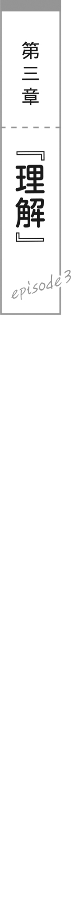
毎日が戦場で、
赤の他人との同居なんて慣れないことをしているから、自宅にいても落ち着かないし、眠りも浅い。
加えて、四六時中浴びせられる敵意と繰り返す口論。相手のやることなすことが気に障って、自分の縄張りを侵略されている感じもする。二年間を争いながら過ごした学校生活よりも、この夫婦生活はきつい。
朝、目を覚ますなり、才人は隣に
できれば先に登校しておいてくれれば助かるのだが、そういうわけにもいかず、キッチンからは朱音が料理をする音が聞こえてくる。
才人は顔を洗い、廊下で覚悟を決めてから、リビングに足を踏み入れた。
肌が
テーブルにはトーストとサラダが並んでいる。どんなにケンカをしていても食事だけは用意するのは、朱音の真面目なところなのか、意地なのか。
「……おはよう」
嫌な沈黙。
朱音がリモコンで
二人とも消耗が激しくて、怒鳴り合う気力さえ残っていない。
じりじりと焼けるような圧迫感に、才人はトーストも喉を通らない。
この戦場から逃げ出したい。そんな気持ちだけが、腹の底から込み上げてきた。
限界に達しているのは、朱音も同じ。
才人より早く家を出発し、ため息をつきながら歩く。
高校三年生の若い身空で、なぜ自分がこんな目に遭っているのか分からない。一緒に暮らし始めて、二人の関係はさらに悪化している。勉強にも身が入らないし、家の外にいても才人のことばかり──悪い意味で──考えてしまう。
それに、感情の爆発はエネルギーを激しく消費するのだ。精神的にも、身体的にも。
同居を始めてから朱音の体重は五キロも減っていた。本来なら減量は良いことなのだけれど、病的な痩せ方は歓迎できない。
重い気持ちで登校し、教室に入る。
「おっはよー、朱音！ どしたの、元気ないねー」
普段と変わらぬ明るい笑顔で、
戦場の中での唯一のオアシス。朱音は思わず陽鞠に飛びつく。
「うううううう……ひまり……ひまりいいいいい……」
泣きながら陽鞠の胸に顔をうずめる。朱音の控えめな胸と違って、陽鞠の胸は母性的。包まれているだけで安心できる。
「ちょ、ちょっと、ホントにどうしたの？ 登校中に痴漢でもされた？」
陽鞠が朱音の肩を
朱音は
「痴漢の方が……百倍マシだわ……」
「痴漢よりヤバイやつ!? もう警察行こ!?」
「警察にはどうしようもないわ……」
「警察より強いの!? 私どうしたらいい!?」
陽鞠は本気で心配している。
昔から、彼女はずっと朱音の味方だ。他のクラスメイトたちは朱音のことを煙たがり、仲間に入れようとしないけれど、陽鞠だけはいつも気遣ってくれる。親友の優しさには何度も救われてきたが、今回は常に増してそのありがたみを痛感する。
「悩みがあるなら、なんでも言って。なんでも聞くから」
「うん……」
事情が複雑すぎる。
祖父母のワガママで無理やり結婚させられ、新居に押し込まれ、クラスの大嫌いな男子と同居させられることになり、一つのベッドで寝たりお風呂に突入されたりする生活でケンカばかりしているから死にそう、
──なんてこと言えないわー!!
かといってスクールカウンセラーに相談したら大騒ぎだし、発言小村の掲示板に書き込んでも批判を浴びそうだ。
すぐムキになってしまう朱音としては、ネットの掲示板には苦手意識がある。『顔真っ赤だな』などと
「え、えっとね……？ めちゃくちゃ仲が悪いけど、仲良くしなきゃいけない相手がいたら、どうすればいいと思う……？」
朱音は言葉を選びながら尋ねた。
陽鞠は口元に人差し指を添えて首を
「仲が悪いけど仲良くしたい相手……？
「違うわよ！ なんでアイツが出てくるのよ!? 仲良くしたいなんて思ってないし！」
名前だけは当たっていて、朱音は心臓が止まりかける。
「なんとなく、才人くんかなって思ったんだけど……朱音、一年のときから才人くんのこと気になってるみたいだし」
「気になってないわよ！ 断じてアイツだけはあり得ないわ！」
耳が焼けるように熱い。大嫌いな才人に好意を持っているなんて、そんなはずは絶対にない。あれは敵。朱音にとって倒さなければいけない存在だ。
「そっかー。良かった」
陽鞠が安心したように笑う。
「とにかく、もう限界なの。これ以上ケンカ続きだと、ストレスでおかしくなっちゃいそうなの。どうしたらいいかしら……」
「やっぱり、才人くんのことだよね？」
「違うってば！」
なぜか話が通じない。いや、通じすぎていて困る。
陽鞠は思案する。
「んー、そうだなー。私だったら、とりあえずハグするかな」
「ハ、ハグ？」
「そ。ぎゅーってして、お互いの呼吸と鼓動を感じたら、ケンカする気もなくなっちゃうよ。ああ、相手も自分とおんなじ人間なんだなって思えるから」
「ひゃっ」
いい匂いのする体に包まれているのはとても心地良いけれど……これを
「む、むりむり！ そういうことできる相手じゃないし！」
「れっつちゃれんじ！」
「無理よ！ 他の方法がいいわ！」
朱音は陽鞠の腕の中から脱出する。
陽鞠の母性は危険だ。ずっと抱き締められているとダメ人間になる気がする。
「じゃあ、お泊まり会するとか？」
「イヤよ！」
毎晩同じベッドで寝ているとは言えなかった。
「一緒にごはん食べるとか？」
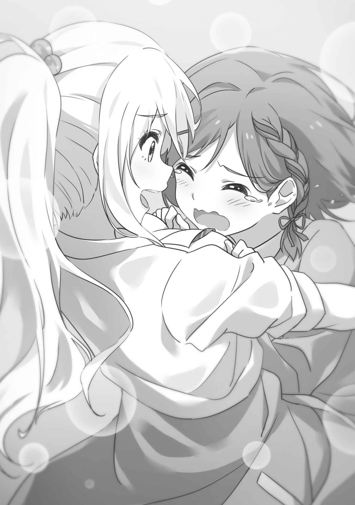
「食欲が
毎日手料理を作ってやっているとは言えなかった。
「やっぱり、裸のお付き合いかな？ 一緒に温泉でも行ってみたら？」
「ああああああああ……」
考えてみれば、自分たちはとんでもないことをしているのだ。健全な高校生にはあるまじき破廉恥な日々。結婚しているから法にも倫理にも反してはいないが。
うずくまって震える朱音の前に、
「これも無理なら、まずは話し合ってみたら？」
「……はなしあい？」
「うん！ だいたいの人とは、話し合って分かり合えないことはないと思うんだよね」
「それは陽鞠だけじゃないかしら……。陽鞠、誰とでも仲良くなれるコミュ力超人だし」
この私とさえ、と朱音は内心で付け加える。
「そんなことないよ。私だって、仲良くなれない人はいるよ」
「いるの!?」
意外だった。陽鞠ならＵＭＡとでも友達になれそうだった。
「当たり前じゃん！ 私は才人くんや朱音と比べたら、取り得もないフツーの女子高生だよ。でもね、頭が良くなくても、美人じゃなくても、大丈夫なの。人と仲良くなるってことは、自分を尊敬してもらうってことじゃなくて、相手を尊敬するってことだから」
「相手を……尊敬する……？」
陽鞠は笑顔でうなずく。
「相手を認めて、話を聞くの。なにを考えているのか、感じているのか、どうして怒ってるのか、なにをして欲しいのか。相手のことが分かれば分かるほど、相手のことがもっと尊敬できるようになっていく。そうやって、朱音とも親友になれたんだ」
「そ、そうなんだ……」
確かに、陽鞠とも最初から親しかったわけではない。諦めずに陽鞠が近づいてきてくれたから、朱音の心の壁も崩れたのだ。
「だけど……私にできるかしら」
「大丈夫、できるよ！」
「話し合いの途中で、相手の首を折りたくなっちゃいそうだし……」
「折らないで！ そこは
「鮮血の会議室になっちゃいそうだし……」
「話し合いだから！ 殺し合いじゃないからね!?」
「……私、頑張ってみる。どんな手段を使っても、相手に私の要求を……分からせてみせるわ！」
「分からせるんじゃなくて、分かってあげるんだからね!? 間違えないでね!?」
昼休み。
高校の外庭のベンチで、
隣に腰掛けているのは、
大きなメロンパンを両手で握り、はむっとかじりついている。女子というよりは、無害なシマリスのような姿。女子という存在に疲れた才人にとっては、
「
「そういうわけじゃないんだが……」
「シセの分けてあげる。食べる？」
差し出されたメロンパンには、糸青の
「食欲がないんだ。飲み物だけでいい」
告げた才人の両目に、糸青の指が二本突っ込んで来た。
「…………!?」
才人はとっさに体を後ろに引き、危うく指先の貫通を回避する。
「なっ、なっ、なにをする!?」
「兄くん、目の下のクマがすごい」
「クマがすごかったら目を潰されるのか!?」
「マッサージしてあげようと思って」
「ああ、なんだ……安心した」
胸を
「目玉のマッサージ」
「やっぱり安心できん！」
二本の人差し指を構えて迫ってくる糸青から、才人は距離を置く。
まぶたの上からのマッサージだと思いたいが、糸青の思考は常人とずれているから信用できない。万が一にもくり抜かれる惨劇は避けたい。
「
「家が地獄なんだよ。アイツと暇さえあればケンカしてるのに、メシを食う気になれると思うか？」
「ああ……離婚したら？」
「そういうわけにもいかないだろ」
「兄くんがバツイチになっても、シセが面倒見てあげる。心配しないでいい」
「おう。ありがとな」
励ましてくれる
「……むう」
糸青は唇を
「とにかく、離婚は困る。ここで逃げたら、なんのため人生をじーちゃんに預けたか分からない。俺は
「でも、兄くん死にそう」
「それはそうだが……どうにか乗り切ってみせるさ」
才人は乾いた笑いを漏らした。
糸青はじっと才人を見る。
「シセは、兄くんに苦しんでほしくない。離婚がダメなら、
「それは無理だ。性格の不一致というやつだ。お前も知ってるだろ、アイツが俺にいつも突っかかってくるのを。俺たちは生理的に合わないんだよ」
「人間は動物だから……生理的に相性の悪いタイプはいると、思う」
「だろ？」
「でも、兄くんのはタダの怠慢」
「怠慢……？ なんでだ」
才人は眉を寄せた。これだけ
「生まれも育ちも違う人間が、ありのままの姿で仲良くできるわけがない。好みも違うし、考え方も違うし、常識も違う。兄くんは、少しでも朱音に譲ろうとしてみた？」
「それは……」
思い出せなかった。互いの主張をぶつけ合う以外のことは、してこなかったから。
「ありのままの自分を認めてほしいなんて、ワガママ。完璧に性格が合う人を見つけたかったら、自分のコピーを作るしかない。でも、そんな世界つまらない。違っているから面白い。シセは、そう思う」
「お前……意外と考えてるんだな」
「シセは考えている。シセはみんなと違うけど、みんなとケンカしたりはしない。兄くんとも全然違うけど、
「だから、仲良くしたかったら、譲り合うしかない。変わるしかない。相手の気持ちを理解して、こんとろーるするのが大事。社長になるなら、そのくらいできないといけない」
「確かにな……気の合わない部下とケンカしてたら、経営もクソもないか……」
大多数の生徒からは宇宙人と思われ、女子たちからは皆の赤ちゃんのように扱われている謎生物だが、実は糸青の精神年齢は高いのかもしれない。
「これらの論議から、導かれる結論は一つ」
糸青がきりりと眉を寄せた。
「……なんだ？」
才人は身を乗り出す。賢明な
糸青は真剣な面持ちで言い放つ。
「兄くんは、シセをお姫様抱っこすべき」
「なぜだ！」
急に従妹の賢明さに疑問が生じた。
「兄くん、お姫様抱っこをした経験は？」
「経験は……ないが」
「乙女はだいたいお姫様抱っこで落ちる。兄くんはシセでお姫様抱っこの練習をすべき」
「そんなもんで落ちるほど単純じゃないと思うが……ちょっと触っただけで指を折ろうとしてくる
糸青がジト目で才人を見る。
「それは兄くんが胸を触るから」
「胸は触ってない！」
「もっとスゴイところ？」
「そっちも触ってないはずだ！」
「はず……？」
「いやいや、まったく触っていないぞ？ 間違いない」
才人は冷や汗を垂らした。
浴室の一件では全身が密着していた気もするが、飽くまで事故であり、触れたくて触れたわけではないからノーカンだろう。
「兄くんはもっと乙女心を理解する必要がある。シセを信じて」
幼い頃からそばにいる従妹にそんなことを言われれば、拒むこともできない。糸青の瞳は澄み通っていて、
「……分かった。信じよう」
「がんばれ」
白タイツの膝を立て、ほっそりとした脚がスカートの裾に吸い込まれている。
小さな体を覆うように流れる、長い髪。
微動だにせず待っている姿は、まさに西洋人形だ。
才人は糸青の膝裏に左手を差し入れ、背中を右腕で支えた。落として壊してしまわないよう、慎重に抱き上げる。
「ふあっ……」
糸青の喉から
その体は羽のように軽い。地面から離れているのが怖いのか、糸青は身を縮こまらせて才人の首にしがみついてくる。ミルクよりも甘い匂いが、白い肌から香る。
「これで……いいのか？」
「上出来。
「出世早すぎだろ」
「でも、まだ愛が足りない」
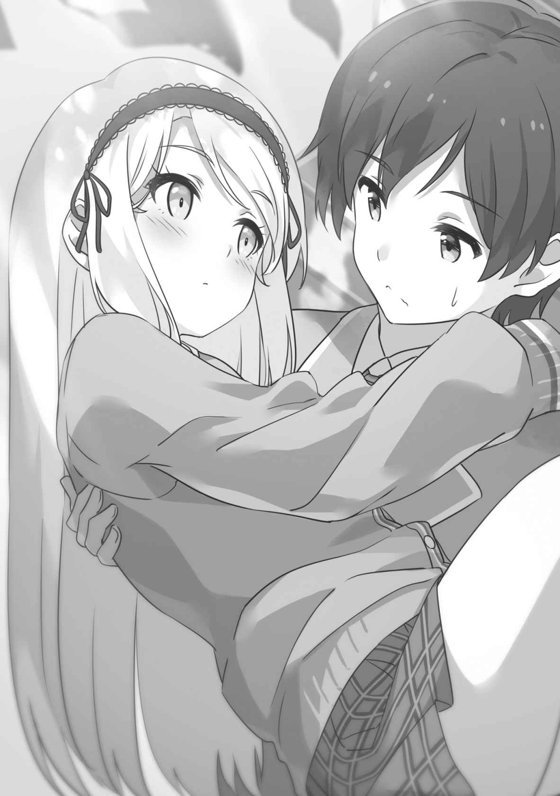
「愛……？」
「ん。耳元で優しくささやいて。『大好きだよ』って」
「言えるか！」
「言わなきゃお姫様抱っこをマスターできない。シセのこと、信じてくれないの？」
非難がましい視線。
「くっ……」
「大好きだ」
「…………！」
糸青の耳が
「シセでも照れることあるんだな」
「そりゃ、照れる。シセだって乙女」
「すまんな、今初めて知ったよ」
そして、知ってしまったらこの状況が少し気まずくなる。
「次は『お前のすべてを俺のモノにしたい』って言って」
「お、お前のすべてを俺のモノにしたい」
「次は『今夜は寝かさない』って」
「今夜は……寝かさない」
「……
きゃ、と糸青はほっぺたを手の平で抱える。
「お前が言えと言ったんだろうが！」
才人は自分の
糸青が唇を指でなぞった。なまめかしさすら帯びた仕草。
上目遣いで才人を見つめ、おねだりするように告げる。
「次は、シセの唇に……」
「ひゃっ!?」
近くから、誰かの声がした。
才人が顔を上げれば、
「二人って、そういう関係だったの!?」
「いや、これはただの練習──」
才人は説明しようとするが、糸青はしたり顔でうなずく。
「こういう関係。シセと
「わざわざ誤解を
「よ、よく分かんないけど……とりあえず
「待て！ それだけは待ってくれ！」
駆け出す
才人が帰宅すると、玄関に朱音が腕組みして仁王立ちしていた。
まだ制服も着替えておらず、常に増して険のある表情。眉間に深い
「た、ただいま」
「………………」
才人の挨拶にも無言。
──取り付く島がない！
とてもお姫様抱っこをさせてもらえそうな雰囲気ではない。
安易な動きは攻撃とみなされて背負い投げされそうな雰囲気だ。
朱音の気持ちを理解して譲り合うべき、と糸青からは助言されたが、理解に努める隙がない。ものすごく怒っているということしか分からない。
自室に引っ込んで作戦を練り直そう。そう思って、才人が朱音の隣を通り過ぎると。
「待って」
朱音が才人の腕を
「ついに俺を殺すのか!?」
「殺さないわよ！」
「じゃあ、なにを……？」
分からないが、きっとろくなことではないだろう。才人は脱出経路を探した。玄関の鍵を閉めてしまったことが悔やまれる。
朱音は才人の腕を掴んだまま、小さくつぶやく。
「…………しましょ」
「え？」
「だからっ！ は、話し合いっ、しましょ！」
「……離婚協議？」
才人はごくりと唾を飲んだ。
「そうじゃなくて！ あんたと私が、け、結婚を続けるための話し合い！ どうやったら仲良くできるか、話したいの！」
この少女の口から仲良くするなんて言葉が出てくるとは、
「俺と仲良くしたいのか」
「し、したくはないけどっ、このままじゃ離婚になっちゃうから！」
「まあ……俺もそれは困る」
「でしょ？」
「とりあえず、落ち着いて話そうか」
でなければ、そろそろ才人の腕が再起不能になりそうだった。
二人はリビングに入る。
朱音が紅茶をいれ、
朱音と対面で向き合い、『家庭訪問みたいだな……』と才人は間抜けな感想を抱く。今の状況に現実感が薄くて、くだらないことを考えてしまう。
朱音は膝の上で手を握り締める。
「私……思うの。あんたのことは大嫌いだけど、どうせ一緒にいなきゃいけないなら、快適に過ごせるようにした方がいいって」
「同感だ。俺も地獄で暮らしたくはない」
「私と一緒の生活が地獄って失礼ね！」
「違うか？」
「うぅ……違わないけど」
悔しげに目を落とす。
「でも、あんたがいて快適なんてあり得ないし、どうしたらいいのか分からなくて……」
「お姫様抱っこでもするか？」
「はあ？ なんでそんなことしなきゃいけないのよ？」
心底嫌そうな顔をされた。
──やっぱりコイツには効かないぞ、シセ！
才人は賢明なる助言者に苦情を申し立てる。
人間には距離感というものがあるし、心の距離が別銀河レベルで離れている相手にいきなり接近したら、警戒されて当然だ。
しかし、朱音の方から話し合いを提案してきたのは、確実に進歩だ。向こうから歩み寄ってくれた以上、
「じゃあ……そうだな。お互いのストレスが
「ルール？」
「そもそも法律や規則は善悪ではなく、異なる価値観の人間を調和させるための最大公約数だ。俺とお前が納得できるラインを決めて守れば、そこまで腹が立つことも起きないんじゃないか？」
「なるほどね……意外と知恵があるじゃない」
「猿を褒めるみたいな言い方はやめろ」
才人は
「まずは、家事の当番ね。結婚してから、私ばっかりやってる気がするわ」
「俺は量が溜まってからまとめてやろうとしてるんだ。効率重視だ」
「洗い物を溜めたら虫が湧くでしょ！」
「虫がいるのは、大自然では普通のことだ」
「今さら大自然に
断固として主張する朱音。テーブルを
ここは彼女にとって、どうしても譲れない部分なのだろう。だとしたら、才人が譲るしか平和への道はない。
「……分かった。洗い物は毎回片付けるようにする」
「そ、そう？ 助かるわ」
朱音は拍子抜けしたように言った。才人があっさり折れるとは思っていなかったのかもしれない。
「あんたの方は、なにか要求ないの？」
「お前が俺の意見を聞いてくれるなんて……」
才人は感動に打ち震えた。
「私だってまともな意見は聞くわよ！ 人を頑固者みたいに言わないで！」
お前を頑固者と呼ばず誰を頑固者と呼ぶのか、と問い詰めたい才人ではあるが、ここで争っても仕方ない。今大切なのは理解し合い、距離を詰めることだ。
「そうだな……、ベッドで体が触れてしまうぐらいは、我慢してほしい」
「セクハラを許せってこと!? この変態！」
朱音は真っ赤になった。自分の体を抱き締め、
「夫婦にセクハラもクソもあるか！ ベッドも狭いし体が当たるのは仕方ないだろ！」
「あんたが
「なれるか！ とにかく、寝返りを打っただけで指を折られると指が何本あっても足りない。俺の指は合計二十本しかないんだ。分かってくれ」
指を折らないでくれと人に頼むのは初めてのことだが、人生何事も経験だ。
「わ、分かったわ……私の体、触っても……いいわ」
朱音は羞恥心に堪えるように肩を縮める。
「で、でも……服の上から、だけだから。服の中に手を入れるとか、そういうのは……許さないから……」
「誰がするか！」
「するでしょ!? 私が寝てるあいだにあちこち触ってるでしょ!?」
「してない！
折り紙を折るノリで指を折る相手に不届きなことをするのは無謀すぎる。
「次はお前の番だな。要求は？」
「ホラーゲームは、ヘッドフォンをつけて遊んで」
才人は感心する。
「あえて恐怖が増す方を選ぶとは上級者だな。まさかお前がヘッドフォンプレイ派だったとは……ホラゲ好きなのか？」
「嫌いよ！ パッケージさえ見たくないわ！」
「怖いのか」
「そ、そうじゃないけどっ、気持ち悪いの！ 勉強しているときにゾンビの悲鳴が聞こえたら集中できないわ」
「そんなもんか」
朱音が
「私が洗い物をしているときにいきなりホラーゲームを起動するのもやめて。どうしても視界に入っちゃうのよ」
「目隠しをして洗えばいいのでは？」
「皿を落としたり手を切ったりして、キッチンがホラーなことになるわ！」
「まあ……分かった。ホラゲはこっそりやることにする」
共感はできなくても、尊重はできる。
才人はオカルトを信じていないからホラーゲームも単なるアクションとして楽しんでいるだけだが、同居人が不愉快なら
お互いのストレスになることを列挙すると、少し理解が深まる気がした。
効率主義で適当な才人に対して、朱音は敏感で生真面目だ。
その二人がなんの譲歩もなくぶつかり合っていたのだから、今までの生活が心労に満ちたものになっていたのも当然だろう。
話し合いは数時間に及び、紅茶のカップは空になっていた。
──こんなに長くコイツと話したのって、初めてかもしれないな……。
壁時計を見ながら、才人は考える。
入学当初からのクラスメイトではあるが、顔さえ見ればケンカばかりで、まともに意見を交わしたことはなかった。お互いが別の方向を向いていたからだ。
しかし、今日の二人は『結婚を継続させる』という同じ目的で話している。
目的意識を共有していれば、口論が激しくなることもない。
「他には……なにかの本で読んだんだが、感謝の気持ちを忘れないようにすると、人間関係は
「ありがとうって言い合うってこと？」
「ちょっとしたことでもな」
相手の行動を当然の義務だと思うと、義務が果たされなかったときに不快だし、やってもらったことにもプラスの感情が生まれない。つまり、マイナスの感情だけが蓄積されていくのだ。
一方、最初から相手に期待せず、予想外にやってもらえたことに感謝すれば、プラスの感情が積み重なっていくと、その本には書かれていた。
「じゃあ……」
朱音が指先を突き合わせ、もじもじする。
「私の料理を食べたら、
才人は目を
「普通の味でも？」
「普通の味でも！」
「しかし、感想を求められたら正直に答えるのが誠意じゃないか」
朱音が才人を
「料理を作るの、どれだけ手間がかかると思ってるの。いくら頑張っても、普通って言われたらテンションが下がるわ」
才人は朱音が料理の感想に怒ったときのことを思い出す。
「俺にとっては『普通』は褒め言葉だったんだが……」
「は……？ なんでよ？」
「まあ、説明すると長くなるんだが……一週間ぐらいかかる」
「長すぎるわ！」
そもそも実家の事情について洗いざらいぶちまけるほど、二人は心を許し合っているわけではない。ようやくお互いの距離感を
朱音が腕組みする。
「とにかく！ あんたにとって『普通』が褒め言葉でも、私にとっては『
「国語の点数は俺の方が上だぞ？」
「か、関係ないわ！ 普段の生活でちゃんと使えてないんだから！」
「……了解」
もっと乙女心を理解すべきとは、
永きにわたる話し合いが終わり。
へとへとになった朱音は、ベッドに倒れ込んだ。
喉はかれ、神経もすり減っている。口論するのと同じくらい、妥協点を探り合うのは気力を消費する。戦争中の和平交渉を任された大使も、こんな心境なのかもしれない。
料理する余力はなく、夕食はパンで済ませた。栄養のない食事は気が進まないが、今日ばかりは致し方ない。
スマートフォンに
「……もしもし」
「やっほー。なんか元気ないけど、大丈夫？ ケンカしてた人と仲良くなれた？」
朗らかな陽鞠の声に、緊張でこわばっていた肩がほぐれるのを感じる。才人が入浴を終えて来るまでは、友人との時間を楽しめるだろう。
朱音はベッドの上で膝を立てて座る。
「仲良くは……なれていないと思うわ」
「ダメだったかー」
「でも、話し合いはできたわ。五時間くらい話して、もうくたくたよ」
「頑張ったね！ 偉い偉い！」
子供をあやすように褒められた。他の人間はともかく、陽鞠からなら腹も立たない。
「頑張ったわ。何度ちゃぶ台を引っ繰り返そうと思ったか分からないわ」
「そんな昭和のお父さんみたいなことを!?」
「でも我慢したわ。今度から指は折らないって約束もした」
「今まで折ってたの!?」
「折る寸前までしかやったことはないわ」
「それもどうかなぁ……」
「まあ、話し合いができたのは良かったよ。一歩前進だね」
「全面戦争に向けての前進かもしれないけど……」
朱音は楽観できなかった。二年以上も激突していた相手と、簡単に和解できたら苦労はしない。
「そんなことないよ。話し合いをしてくれたってことは、その人も朱音と仲良くなりたいって思ってるってことでしょ？ お互いの気持ちが同じなら、きっと
「アイツが……私と仲良くなりたい……？」
つぶやくように繰り返すと、なぜか体温がじんわりと上がっていく。
朱音は寝間着の胸元をつまんで、中に風を入れる。
「後は、お互いの努力次第だよ」
「うん……頑張る。これから頑張って……アイツに体を触られるわ。お尻とか、胸とか」
「どゆこと!? ちょっと待って、相手は女の子だよね!? 説明して！」
慌てて尋ねる陽鞠。
廊下から足音が聞こえたので、朱音は電話を切る。
風呂上がりの
朱音は覚悟を決めてベッドに横たわる。
「は、はい……体、触っていいわよ」
「わざと触ったりはしないからな！」
覚悟は必要なかったかもしれない。
放課後、才人は寄り道をすることにした。
学校から近い商店街。
デパートや洋服店、八百屋やうどん屋が雑然と並ぶ通りを、
糸青は途中で買った肉まんをぱくついている。小柄なせいで栄養補給がこまめに必要なのか、この
「
などと述べつつ、無表情なのは変わらない。
「引っ越しとか戦争とかでバタバタしてたからな」
「
「終わってはいないが……今日は和睦の品を仕入れに来た」
「コレか」
「カネなんて包まないぞ、なまなましい」
「お金じゃない、スーパーボール」
「スーパーボールをもらって喜ぶほど子供じゃないと思うんだよな」
「シセは喜ぶ」
「今度、祭りのときにいっぱい取ってやる」
「やった。約束」
肉まんの敷紙まで食べようとしている糸青から、
小さな頃──今も体は小さいが──糸青が紙を食べすぎて倒れたときのことは忘れない。あれは百色入りの折り紙だった。糸青が文房具店で才人にねだり、才人は『折り紙をして遊びたいんだろうな』と楽観的かつ常識的な予想をしていたのだ。
だが、最後の一枚、金色の折り紙を糸青がもっしゃもっしゃと食べている現場に遭遇したときの恐怖は、計り知れない。才人は思わず糸青を浴室に引きずり込んで胃洗浄をしようとし、騒ぎを聞きつけた親戚に止められた。
とにかく、糸青にはそろそろ自分がヤギではなく人類だと自覚してもらいたい。
「土産にケーキを買って行こうと思ってな。俺は詳しくないんだが、女子のあいだで人気のスイーツショップでもないか？」
「オナゴの気持ちはよく分からん」
「この前は乙女心を語ってただろ」
「乙女心は分かるけど、シセはスイーツの話とかみんなから振られないから……」
糸青の周りに暗雲が立ち込める。
「ああ……」
納得する才人。きっと宇宙人にはスイーツやファッションなど女子一般の話題は通じないと判断されているのだ。
「つらかったな。シセだってスイーツの話で女子と盛り上がりたいよな」
「ぜんぜん。シセは世界中のカニバリズムの風習について語りたい」
「だからお前は宇宙人だと思われるんだ」
商店街を歩いていると、前方から甘い匂いが漂ってきた。
おびき寄せられるように進む二人。
看板も壁も派手な黄色に塗った店が建っていた。こぢんまりとしているが、店先には行列ができている。外に貼られたメニューには、クレープやケーキの写真もあった。
「ここでいいか。持ち帰りを頼もう」
「シセは中で食べて行きたい」
「テーブルが空くのは時間がかかりそうだぞ」
「食べたい。
「仕方ないな……なにを食べるんだ？」
「ケーキ。ホールで」
「いや無理だろ！ お前さっき肉まん食べてたろ！」
才人は止めるが。
三十分後、テーブルについた糸青は、あっという間にホールのチョコケーキをたいらげてしまった。それだけではなくフルーツポンチや焼きそばまで容器を空にしている。
「完、食！」
誇らしげな糸青。
「焼きそばなんてメニューになかったはずだが……」
ここはそもそもスイーツショップだ。
「どうしても食べたいって店員におねだりしたら作ってくれた」
「甘やかすな店員！」
しかし甘やかしたくなる心境は理解できた。チョコをほっぺたにつけた糸青の姿はあどけなく、この世に天使が降臨したようにすら見える。
「どこにあの大量のケーキが入ったんだ……お前の体内は異空間なのか？」
糸青は口元のチョコを指先で拭い、その指をちろっと
上目遣いで、ささやくように才人に問いかける。
「シセに
「遠慮しておく」
安易にうなずいたらリアルに捕食されそうな恐怖があった。
才人が帰宅したときには、既に夕暮れだった。
夜に沈みかけた住宅街で、新居の明かりが
才人は
少しは態度を和らげてくれるかと思って土産を用意したが、露骨だっただろうか。気持ち悪いと嫌がられないだろうか。今さらながらに心配になってくる。
持ち帰る途中で中身が崩れていないか確かめたくなるが、
才人はキッチンまでやって来ると、箱を朱音に差し出した。
「お土産買ってきた。お前の好物のショートケーキ」
朱音は目を丸くする。
「え……お土産!? 私に!?」
「ああ」
「なんで好物知ってるの!?」
「一年のときの文集に書いてたろ」
才人は肩をすくめた。
朱音はケーキの箱を受け取り、顔を伏せてつぶやく。
「あんなの覚えてるとか、ちょっと引く……」
「引くとか言うなよ！」
才人は居たたまれない気持ちになった。やはり慣れないことはするものではない。朱音の好感度を上げるどころか、余計に距離が離れてしまったかもしれない。
「だって、ホントに文集の隅っこに書いてただけなのに……。私も書いたこと、今まで忘れてたのに……」
「悪かったな！ 俺は記憶力が良すぎるんだよ！」
優秀な人材を数多く輩出する
「で、でも、その……」
朱音は
紅の唇から、恥ずかしそうな声が漏れる。
「……ありがとね」
そっと、ケーキの箱を胸に抱き締めるようにした。
──くっ……
そう感じてしまった自分に、才人は驚く。
あの鬼のような朱音に、そんな感情を抱くなんてあり得ない。朱音なら、なんのかんのと文句をつけてケーキを突っ返すかもしれないと思っていた。
けれど、彼女が
これはいったい誰なのかと、
「
「とりあえず休憩して食べるか？」
才人が食器棚からフォークを取り出そうとすると、朱音が腰に手を当てて叱った。
「ダメよ、まだごはん前なんだから。私の料理、食べられなくなったら困るでしょ。あんたは手を洗って待ってなさい」
「了解」
いつもと違って叱り方に険がない。朱音は楽しそうにケーキの箱を閉じると、冷蔵庫にしまう。どうやら土産作戦は成功したらしい。
才人は意外に思いながら、手洗いや
リビングのソファで待っていると、朱音が料理を運んでくる。
オムライスのクリームソースがけ、ミネストローネに、チキンの香草焼きだ。オリーブオイルやハーブの匂いが、薫り高く漂ってくる。
「今日は洋風か……なんか気合い入ってるな」
「あんたに私の腕を思い知らせてあげるのよ。ほら、食べて」
朱音はテーブルにかじりつくようにして、才人の反応を見ている。
──毒は入ってない、よな……？
才人はスプーンでオムライスを割って口に運ぶ。
半熟の卵が、クリームソースと溶け合ってまろやかな味わいを出していた。
ライスはケチャップではなくバジルとペッパーで味付けされており、プリプリした
専門店にも引けを取らない完成度で、高校生の女子が作ったとは思えない。
「どう？ 私の手料理にひれ伏す気になった？ 美味しい？ 美味しいでしょ？」
朱音はテーブルに身を乗り出して
「……すごく美味しい」
素直な感想だった。
「そ、そう……良かった」
朱音は
「お前は……誰だ？」
思わず問いただした。
少女は目をぱちくりさせる。
「誰って、
「いや、おかしい。アイツは人が料理を褒めたら褒めたで『その褒め方は気に入らないわ！』と激怒して皿を投げてくる人間のはずだ」
「どんな人間よ！ そんなこと一回もしたことないわ！」
朱音は憤慨して自分の皿を持ち上げた。
「今やろうとしてるだろ！ しかもあっついスープが入ったやつ！」
「口から食べても顔から食べても同じでしょ？」
「大きく違う！ いいからその武器を下ろせ、俺は平和にお前のメシが食べたい！」
目をそらし、もじもじと肩を動かす。
「ま、まあ……食べたいなら、早く食べなさいよ。冷めちゃうわ」
「お、おう……」
やはり相手が誰なのかよく分からない。ひょっとしたら、朱音の皮を
──だとすると、朱音は、もう……。
才人は警戒しながら、ミネストローネを見下ろした。耐熱容器に入ったトマト系のスープが、ぐつぐつと泡立っている。
才人はスプーンでミネストローネをすくい、口に流し込んだ。
トマトの強い酸味の中に
「……これも
「でしょ？ もう二度と普通だなんて言わせないんだから！」
朱音は勝ち誇り、ミネストローネを一気にすすって
「あつっ」
水を飲む朱音。そっちも急ぎすぎたのか、
「大丈夫か？」
才人が心配すると、朱音は才人を
「大丈夫に決まってるじゃない！ これで勝ったと思わないでよね！」
「別に思わんが……」
何事も勝ち負けで語ってしまう辺りは、相変わらずだ。
これは間違いなく朱音だと、才人は
珍しく穏やかな夕食の時間が終わった。
そういえば話し合いのとき、
才人は軽く息をついて、キッチンに入った。
シェイカーだけの生活とは異なり、まともに料理をすると食器の消費が激しい。山積みの鍋や皿を見るとげんなりするが、やるしかないと意気を奮い起こす。
才人が水を流しっぱなしで
「今日の洗い物はあんたの仕事だけど、手伝ってあげるわ」
「なにを
予想外の優しさに、才人は疑心暗鬼に陥った。
「なにも企んでないわよ！ 量が多いから大変だろうと思って！」
「お前に人を思いやる心などあるものか……」
「ものすごく失礼なこと言ってるわよね!?」
「いいや、俺には分かっている。さっき皿を投げ損なったから、悔しくなって今度こそ投げるつもりだな……至近距離から」
「投げないわよ！ 厚意には大人しく甘えなさいよ！」
朱音はスポンジを握り締めて才人を
一年の頃からケンカ続きだった相手の思わぬ行動に、才人は目元を拭った。
「ちょっと、なんで泣いてるの!? 私、なにも悪いことしてないわよね!? 親切で言ってるだけよね!?」
「お前も、やればできるんだな……」
「上から目線!?」
「上からじゃないさ。これからも精進してくれ」
「完全に上から目線よね!? 嫌なら手伝わなくてもいいのよ!?」
才人は小さく笑う。
「助かるよ。ありがとう」
「ふふん、どういたしまして！」
朱音は笑顔で胸を張った。
今までこの少女のしかめ面ばかり見ていたが、笑っているときの瞳は、本当に
黙っていれば美少女だと、校内でも有名な朱音。
だけど、彼女は笑っているときが一番
知ってしまった。
「私がすすぐから、あんたは洗って。さっきから泡が全然落ちてなくて、見てられないわ。洗剤が残ってたら体に悪いのよ？」
「あ、ああ」
隣に立つ
キッチンは広々としているが、シンクの前で二人が同時に作業すると手狭になる。袖が触れそうなくらい近くで皿を洗う彼女に、才人は初めて『自分はこの少女と一緒に暮らしているのだ』と自覚する。
それは不思議なことだった。同居は今始まったわけではないのに、口論や対立が激しすぎたせいで、相手を異性として見ることができていなかったのだ。
けれど、自覚すると、逆に調子が狂う。
黙々と皿をすすぐ朱音の横顔を、我知らず眺めてしまう。ほっぺたを赤くして、真剣に皿を見つめている朱音。この少女はいつだって全力投球だ。
「……なに？」
才人の視線に気づいたのか、朱音が不審げに
「いや……その、家事慣れてるんだなと思って」
「まあね。お父さんもお母さんも忙しかったから、私が料理とか掃除とかしてたし。小学一年生のときにはカレーも作ってたわ」
「すごいな」
「す、すごくはないわ！ カレーなんて野菜を切って煮込んでルーを入れるだけだもの。チンパンジーでも作れるわ」
「チンパンジーは作れんだろ。現に俺は作れん」
「つまりチンパンジー以下なのね」
「ひどいこと言うな」
「ひどくないわ。チンパンジーってバナナの皮がむけるくらい賢いのよ」
「賢さの水準がひどい」
話しながら、作業を進めていく。
──むしろ……。
才人が考えていると、あっという間に洗い物は終わっていた。
「やっぱり二人でやると早いわね」
ぴかぴかに仕上がった食器を前に、朱音は満足げにうなずいている。
才人は思い出す。学校でも、朱音は日直の仕事を徹底的に果たし、黒板も汚れ一つ残らないまで雑巾で拭いてから、満足そうに眺めていた。
他の生徒たちは黒板なんて適当に消して済ませるだけだし、次の日直に押しつける生徒もいるのに、朱音がさぼっているところは見たことがない。
──コイツ、めちゃくちゃ真面目なんだな。
才人は改めて感じる。
ずいぶん疲れそうな性格で、近くにいる人間も疲れるが、悪いことではない。皆が知らない朱音の良さを、親友の
洗い物も片付いたので、才人は安心して読書の時間に入った。
自室に引っ込むのではなく、リビングのソファで読むことにしたのは、なぜなのか。ひょっとしたら、二人の共有空間にもう少しだけ居ても構わないと感じたのかもしれない。
そこへ、朱音が近づいてきた。
背中の後ろに手を回し、ちらちらと才人を見ている。
「あ、あのさ。あんた、その本って、どうしても今夜読み終えなきゃいけないのかしら？」
「別にそういうわけじゃないが……どうした？」
朱音はもじもじと肩を揺らす。
「え、えっと……実は、ね？ レンタルショップに面白そうな映画があったから、つい借りてきちゃったんだけど……」
「テレビが使いたいのか。邪魔になるなら、俺は自分の部屋に行く」
立ち上がる才人。
「ああっ、そうじゃなくて！ ここにいてくれていいの！」
引き留める朱音。
「さすがに映画が流れてると、読書に集中できないぞ」
「だからっ、そのっ、えっと……これっ！」
朱音はブルーレイディスクの入ったケースを才人に向かって突き出した。勢いが良すぎて鼻柱を
危うく大惨事が起きるところだった。才人の心臓はバクバク鳴っていた。
「もしかして……映画を一緒に
「い、一緒に観たいわけじゃないわ！」
そっぽを向く朱音。
「じゃあ、なんなんだ。まったく分からん」
「でもほらっ、お互いを理解するのって大事みたいだしっ？ 私の好きな映画をあんたが観れば、私のことを理解できて、私のストレスが減るかもしれないしっ？ 一緒に観るわけじゃないけど、映画を流すから、二人ともこの部屋で別々に観たらいいんじゃないかしら!?」
「それは一緒に観ると言うんだ」
「ううぅぅぅ……」
朱音は紅潮しきった顔で、ケースを抱き締めている。映画鑑賞に才人を誘うのが、どうしても恥ずかしいらしい。
しかし、親睦を深めるため共通の時間を過ごそうと考えてくれたのは、大きな成長だ。誠意には誠意で応えなければならない。
才人は意気込んで本を閉じる。
「よし、観ようじゃないか。なんて映画だ？」
朱音が才人にブルーレイのケースを渡す。
「『追跡！ 子猫の二十四時～実録ノーカット版～』よ」
「…………っ」
才人は
「どうしたの？ やっぱり観たくない？」
「い、いや、
「もちろん入っているわ。これで百円なんだからお得よね」
「せんよんひゃくよんじゅっぷん!!」
修学旅行で見知らぬ土地に一人置き去りにされた小学生以来の恐怖だった。あのときはスマートフォンを持っていなかったし、担任の電話番号も覚えていなかったから、合流するまで苦労したものだ。
朱音が眉を寄せて盤面を眺める。
「あっ、ベストセレクションっていうのも入っているみたいよ。特に見どころのシーンを集めた三時間バージョンだって」
「そっちで頼む……」
それでも三時間の長尺なのが恐ろしかった。
大型ディスプレイに映し出されるのは、猫、猫、猫、猫。
実録の名に
──これは映画なのか……？
才人は疑問を感じて朱音の方を見やるが、朱音は目を輝かせて熱中している。
「さっきのスコティッシュフォールドも
ハラハラドキドキといった様子。
猫が歩いたり走ったりしているだけの動画に、なぜそこまでスリルを感じることができるのか。朱音への理解が深まるどころか、さらに精神構造が分からなくなっていく。
とりあえず、せっかくの
朱音はフォークで丁寧にスポンジを切って、口に運ぶ。
「ふわ～、おいしい～！ 猫かわい～！ しあわせ～！」
とろけるような笑顔でほっぺたを抱える。これほど楽しそうな朱音を見るのは初めてで、才人は土産を買ってきて良かったと感じる。
朱音は映画を観ながらケーキを食べるが、なかなか
「苺、苦手なら代わりに食べるぞ」
才人がフォークで苺を取ろうとすると、朱音は慌てて皿をかばった。
「苦手じゃないわよ！ 好きなものは最後まで取っておくの！」
「
「本当に好きなものは、急いで食べない方が
「充分眺めただろうから、俺がもらおう」
「あんたには人の心がないの!? 殺すわよ！」
ディスプレイには、変わらず猫たちの戯れる姿が映されていた。
モノを食べているあいだは意識がはっきりしていた才人も、ケーキがなくなってしまうと退屈で
だが、ここで居眠りするわけにもいかない。そんなことをすれば、朱音が歩み寄ってくれたのが無駄になる。朱音は落胆し、憤慨するだろう。
──もう、これしかない。
才人はきつく唇を
「ちょっと!? 口から赤いのが出てるわよ!?」
「問題ない。ただの血液だ」
「問題あるでしょ！ 吐血!? 病気なの!?」
「ケーキに
「私ぜんぶ食べちゃったんだけど!?」
朱音は
ずっと緊張が続いていた二人の関係に
「くそっ、こんなところで寝てたまるか！ 起きろ俺！」
才人はフォークを左手の上に振り上げた。
「なにしてるの!? ついに頭がおかしくなったの!?」
朱音は才人からフォークをもぎ取った。
鑑賞開始から三時間が
しかし、目だけは意志の力で全開していた。眼球は乾燥してパリパリである。
「はあ～、面白かったわ～。今度はちゃんと二十四時間バージョンを
「……っ!?」
なにか
「こ、ここは……？ アルファ・ケンタウリ星……？」
「地球よ。ホントに大丈夫？」
「そうか……俺は生還したのか……」
才人は口元の血を拭った。不覚にも居眠りしてしまったようだが、幸い
「私の好きな映画に付き合ってもらったし、次はあんたの好きな映画に付き合うわ」
「映画よりゲームがいいな」
これ以上、ディスプレイを眺めているだけの時間には耐えられそうにない。
「私、ゲームってあんまりやったことないんだけど……」
「なんだったらやったことあるんだ？」
「パソコンにおまけでついてるゲームね。爆弾を解除するやつ」
「それはゲーム経験ゼロに等しいな」
朱音は眉を寄せる。
「いつも一手目で爆弾を爆発させちゃうから、ゲームは嫌いよ。びっくりするし」
「毎回爆発すると分かってるならびっくりはしないだろ」
「分かってても驚くの！ ゲームのくせに生意気だわ」
無難な行動ができない辺り、朱音らしいといえば朱音らしかった。プログラムにさえ敵意を燃やすのも彼女らしかった。
「他のゲームをやってみれば、意外とハマるかもしれないぞ。やり方は教えるから」
「世界が引っ繰り返っても、私がゲームなんかにハマるわけないわ」
朱音はバカにしたように鼻を鳴らした。
その三十分後。
「ちょ、ちょっと！ 今のずるいわ！ 上ってこようとするのを撃つなんて極悪非道すぎるわ！ もっとフェアに戦いなさい！」
朱音は無我夢中でコントローラーを操っていた。
テレビに映っているのは、歴代の人気キャラクターが縦横無尽に大乱闘する対戦アクションゲーム。朱音の操作キャラの女剣士がガンマンに撃たれまくって場外に吹き飛ばされる。
「ルール無用の残虐ファイトにフェアもクソもない。諦めろ」
「……っっっっ!!」
「なんか泣いてるし、そろそろやめるか」
「泣いてないわ！ 勝ち逃げは許さないわよ！」
「逃げるつもりはないが、お前に勝ち目はなさそうだしな」
「決めつけないで！ もっかい！ もう一回やりなさい！」
コントローラーを取り上げようとする
ボコボコにしすぎて夫婦仲が悪くなっても困るので、才人はコツを教える。
「このゲームの基本はアイテムだ。落ちてきたアイテムはちゃんと取りに行け」
「あんたが先に取るから取れないのよ！ 礼儀正しく交代で譲りなさいよ！」
「いやいや……譲ったらゲームにならんだろ。あと、初心者は火力高くて機動性も高い強キャラを使った方がいい。殴ってるだけで勝てるから」
朱音は口をへの字にする。
「ハンデをつけられて勝っても意味がないわ。実力で勝たないと」
「実力がないから言ってるんだろ！」
「じ、実力はあるわ！ まだ芽が出ていないだけよ！」
ムキになって対戦を続ける。
一時間
涙目どころかガチ泣きである。
「ぐすっ……ぐすっ……ま、まだ、諦めないんだから……」
袖で涙を拭い、プレイをやめようとはしない。
「なあ、これって朝まで寝かしてもらえないヤツだったりするか……？」
「寝かすわけないでしょ……私ばっかりやられっぱなしなんて許せないもの……」
「マジか……」
才人の方が音を上げたくなってくるが、自分からゲームを提案した手前、無理に中断するわけにもいかない。
画面を長時間見つめていたせいで目はかすみ、睡魔が襲いかかる。
一瞬、意識が遠のいた。
気がつくと朱音のキャラが七色に輝き、才人にコンボを
いや、それはコンボと呼べるようなものではない。
ひたすらの連撃。嵐のような激怒を込めた暴虐。
めちゃくちゃにボタンを連打し、単純攻撃だけで急速にダメージを増やしていく。
「くっ、いつの間に！」
「遅いわ！」
「やったー！ やったわ！ ついに勝ったわ！ 私の勝ちよ！」
ぴょんぴょん跳ねて大喜びする朱音。子供みたいなはしゃぎっぷりだ。
「根性だな……」
才人は苦笑した。負けて悔しい気持ちはない。ただ大きな
朱音はソファの背もたれに体を預け、満足げに息をつく。
「はあ……楽しかった……」
「『ゲームなんか』で楽しんでもらえてなによりだ」
才人が皮肉交じりに言うと、朱音はしまったという顔をする。
「た、楽しくはなかったわ！ 苦痛で仕方なかったわ！」
「じゃあ、もうプレイしない方がいいな」
「またするわよ！ 次に対戦するときまでにコツを調べて、一人でしっかり特訓して、あんたを毎回ボコボコにできるくらい強くなっておくわ」
「お前は俺の心を折りたいのか」
「折りたいわ。二度と立ち上がれなくなるくらい」
肩をそびやかす朱音。
才人はコントローラーを片付ける。
荒い使い方をされていたが、コントローラーは無事だった。さすがは戦車が乗っても壊れないゲーム機を作るメーカーだ。ただし、コントローラーのカバーには憤慨して
朱音がケーキの皿をキッチンに持って行く。
「ケーキの皿、洗っておくわね」
「少しだから大丈夫だ。お前はもう風呂に入ってろ」
「先に入らせて
「そんなつもりはない！」
「どうかしら？ 覗くどころか、お風呂に突入してきたこともあったし……」
非難がましく目を細める朱音。
「あれは緊急事態だったんだ！」
才人はつらい気持ちになる。まったくの無実ではあるのだが、彼女の裸身がたやすく脳裏に
朱音は居心地悪そうに身じろぎする。
「あ、あのときは……その……」
「なんだ？」
「な、なんでもないわっ！」
走り去っていく
シンクで皿を洗いながら、
朱音とのゲーム、いつまで続くのか不安はあったけれど、不愉快ではなかった。負けず嫌いすぎる朱音の姿は
まさか長年の宿敵と、楽しい時間を過ごせるなんて。
それは新たな発見──なぜか少し怖い発見だった。
ふと目を覚ました才人は、ぼんやりと天井を眺めていた。
隣からは、朱音の静かな寝息が聞こえている。映画とゲームに熱中して疲れたのか、朱音はベッドに入るなりすぐに眠ってしまった。
クラスメイトの女子と二人で寝る生活が始まってから、短い期間ではあるが、これまでの人生のすべてに匹敵するほど密度の濃い日常だ。
否、日常ではなく、異常。しかし、着実に日常へと変わりつつある。
横を見ると、朱音の体が掛け布団からはみ出してしまっていた。軽く丸めた手の平があどけない。普段は放っておく才人だが、今日はなんとなく、
──風邪でも引くんじゃないか？
と思う。
才人は朱音が起きないよう、そっと掛け布団を彼女の体にかけた。朱音に背を向けて横たわり、夢の世界へ沈んでいこうとする。
そのとき、後ろから恥ずかしそうなささやきが聞こえた。
「……ありがと」
「お、起きてたのか……」
「……うん。ちょっと前から」
「そうか……」
柄でもないことをしてしまった羞恥で、才人も高熱に見舞われる。
二人はぎこちなく、ベッドの中でもぞもぞと動く。
──今日はどうも調子がおかしい……。
才人は鼓動が速くなっているのを感じた。
妹のような
調子が狂っているのは、
「喉渇いた。お水飲みたいわ」
おねだりをするように、つぶやいた。
「あ、ああ」
朱音はベッドの端に腰掛け、所在なげに素足の爪先で床をなぞっていた。
少し乱れた髪、ボタンの一つ外れた寝間着が、寝室の空気を漂わせている。
「ほら。こぼすなよ」
才人は朱音の隣に腰を下ろし、コップを手渡した。
朱音は両手でコップを抱えて水を飲む。
こくん、こくん、とクラスメイトの女子が喉を鳴らす音。
薄暗い静寂。
他に誰もいない深夜の寝室に、才人は朱音の存在を強く感じる。
「どうして、じっと見ているの」
「いや……別に」
朱音に見上げられ、才人は目をそらした。自分の行動が、自分でも
「お水、ありがとう」
「おう」
二人で布団に潜り込む。
互いの背中が重なっているのに、今夜の朱音は文句を言わない。二人を包み込む掛け布団を通して、彼女の肌の熱気と匂いが伝わってくる。
ヘッドボードに置いた才人のスマートフォンが、
すぐには寝付けそうになくて、才人は沈黙を
「次は、お前が好きなゲームを買ってきてもいいぞ。俺も好きな映画を探してくるから」
「……お前じゃない」
不満げな口調だった。
「え？」
「お前って呼ばれると、バカにされてる感じがするわ。ちゃんと……名前で呼んで」
「
「
「じゃあ……」
「……
「なに、才人」
くすぐったそうな、どこか甘さを帯びた声。
「……なんでもない」
「……うん」
合わせた背中が、焼けるように熱い。
休み時間、才人が教室の机に覆い
他の生徒たちの目があるのにだらしなく、よだれまで垂らしている。机の上のノートは端からずり下がり、シャーペンや消しゴムは床に転がり落ちていた。
相変わらずズボラな男だと
「落ちてたわよ」
「んっ……？ ああ、ありがとな」
才人は眠たげに目を
「………………」
朱音は無言で才人の横を通りすぎ、自分の席に座る。
どうも落ち着かなかった。
最近、才人にありがとうと言われると、なぜか心の中がむずむずしてしまう。
ケンカ続きだった才人と感謝し合う関係になったのは初めてで、それは妙に心地良い感覚だった。もっと才人に感謝されたいと思ってしまう。
大嫌いなはずなのに、この気持ちはなんなのか。朱音は自分のことさえ分からなくなって、熱い
「朱音、才人くんとケンカでもした？」
近頃は
「ケンカならいつもしてるけど……」
朱音が困惑して答えると、陽鞠は考え込む。
「いやー、そうなんだけどさー、なんかいつものケンカと違う気がするんだよね。朱音、才人くんにあんまり突っかからなくなってるし、話すのも嫌になったのかなあって」
「ああ……」
普段が交戦状態だから、なにもないと逆に怪しまれてしまうのだ。予想外の問題である。こんなことなら対策として毎日ケンカをこなしておくべきだった、と
「別に……嫌になったとか、そういうのじゃないけど……」
「仲良くなったの？」
「さ、
「じゃあ、どうしたの？ 熱でもあるの？」
ひんやりとした陽鞠の手と比べて明らかに熱くなっているのが気づかれそうで、朱音はおでこをかばって体を
「熱もないわ！ 今は……そう！ 次のケンカに備えて、力を
「次のケンカでなにをする気!?」
「まだ決めてないけど……才人が生まれてきたことを後悔するくらい、地獄の苦痛を味わわせてあげるわ！」
「才人くん逃げてー！」
陽鞠は青ざめた。
──なんとか
朱音が
「あれ……？ 朱音って、今まで才人くんのこと名前で呼んでたっけ？」
「…………っ!!」
今度は朱音が青ざめる番だ。
「いきなりどうしたの？ 才人くんとなにかあった？」
「な、な、なにもないわ……」
「絶対あったよね？ もしかして、前に仲良くしたいって言ってたの、やっぱり才人くんのことだったの？」
「ちがっ……えと……そのっ……」
必死に言い訳を考えるが、まったく思いつかない。頭がぐるぐる回って、体温が急上昇して、呼吸をするのも苦しくなってくる。
「も、もう家に帰るわ！ また明日ね！」
「朱音!? まだ一時間目しか終わってないよー!?」
止める陽鞠の声を後ろに、朱音は全速力で教室から逃げ出した。
学校の図書室は、擦り切れた本と古びた棚の匂いが混じり合い、独特な空気に満たされている。教室や廊下とは違って
その異空間で、
「これだ……！」
探していた記述を見つけ、声が弾む。
「だーれだ？」
そのとき、才人の目が後ろから手の平で塞がれた。
それはよいのだが、手がびしょ
「俺にこんな嫌がらせをしてくるのはシセしかいないから犯人はシセだ」
「おー。
才人から手を離す
「理解はしていないぞ。現になぜこんなことをされたかまったく分からん」
「兄くんのドライアイを治してあげたかった。しんせつ」
無表情ながら誇らしげに胸を張る。
「ありがた迷惑だ」
「感謝が足りないのは現代人の悪いところ」
「現代人だろうと古代人だろうと同じだ。本が
ハンカチなどといった
「なんの本読んでたの？」
棚から本を取る糸青。
本のタイトルは、『ゼロから始めるコミュニケーション能力』だ。
糸青は才人の頭にぽんと手を載せた。
「コミュ力ゼロの
「友達ゼロのシセに言われても困るんだがな！」
「シセは友達ゼロじゃない。ちゃんと世話を焼いてくれる保護者がたくさんいる」
「つまり友達じゃないよな！」
「この前はクラスの女子がお小遣いくれようとしたから、もら……断った」
「今すぐ返してきなさい！」
糸青は首を振る。
「むり。買い食いして一日で一万円使ってしまった」
「一万円の買い食いってなんなんだ……」
「肉まん」
「一万円分の肉まんって何個なんだ……」
才人は糸青の行く末が恐ろしくなる。同年代の同性さえ魅惑してしまうこの小動物、もし自分の魅力を悪用することを覚えたら大変なことになりそうだ。
糸青は
「でも意外。兄くんがコミュ力のなさを気にするなんて」
「コミュ力がないわけではないが、
「洗脳すれば良いのでは？」
「そういう人格を無視したやり方はやめようか」
「無視じゃない。きっと朱音も望んでる」
「お前が朱音のなにを知っているんだ！」
「鼻から超音波を出して敵を
「それは俺の知っている朱音じゃないな」
「本、勉強になった？」
「ああ。『他者との連帯感は、共同作業によって高めることができる』って書いてある。つまり朱音と一緒になにかすればいいんだよ」
「なにか……世界を滅ぼすとか？」
「だからアイツはそういう生物兵器的な存在じゃない」
「写経とか？」
「心静かに仏典を書き写して夫婦のあいだにどんな感情が生まれるんだ。無になるだろ」
糸青が手を合わせる。
「一緒に成仏できるかも」
「まだ死にたくはないなぁ……」
才人の人生は始まったばかりだ。結婚生活が修羅場すぎて
糸青が重々しくうなずく。
「
「そこまで体を張らんでいい」
才人は無謀な
化学の教室への移動中。
朱音は教材と筆記用具をしっかり抱き締めて歩いていた。
落とさないよう注意しているのか、盗賊に奪われないよう警戒しているのか。いずれにしてもガードの硬さが
才人は周りに人がいなくなるのを見計らって、朱音に近づいた。
「ちょっといいか」
「なに？ 学校であんまり話しかけないでほしいんだけど」
朱音は才人を
少しは心の距離が狭まったかと思っていた才人だが、考え違いだったらしい。以前よりさらによそよそしい。共同作業を提案しても、聞き入れてもらえないかもしれない。
「えっと……今日の放課後は忙しいか？」
「忙しいわ。帰って勉強しないといけないもの」
「そうじゃなくて。友達と遊ぶ約束とかは入ってないか？」
「え？ ええ……
「じゃあ……放課後、待ち合わせして二人で買い物でも行かないか？」
「……………………」
しばらくして、朱音の顔が真っ赤に染まる。
「そ、それってデ──」
叫びかける朱音を、才人は慌てて手近の空き教室に引っ張り込んだ。
手の平で朱音の口を押さえ、壁際に身を潜める。
「んーっ！ んーっ！」
朱音は無我夢中でもがいて抜け出そうとするが、才人は逃さない。廊下をクラスの連中が
クラスメイトたちの話し声が遠ざかったのを確かめてから、才人は朱音を解放した。
ぷはっと朱音が息をつき、涙目で自分の体を抱き締める。
「へ、変態！ 女の子を暗がりに引きずり込んで乱暴するなんて！」
「暗がりじゃないし乱暴もしてない！」
「今からするんでしょ!? 『げへへ子孫繁栄だ！ じーちゃんからもＯＫ出てるからやり放題だー！ 泣いてもわめいても許さない』って顔に書いてあるわ！」
「俺の顔にそんな長文書くスペースあるか！ お前がデートとか言うからだろうが！」
廊下に逃げ出そうとする朱音と、回り込んで退路を塞ぐ才人。
「だ、だって、デートじゃない……男の子と女の子で待ち合わせするなんて……」
恥ずかしそうにうつむく朱音を見ていると、才人まで恥ずかしくなってくる。
考えてみれば、勘違いされても仕方ない内容ではあるのだ。そして才人は今まで女の子をデートに誘ったことなどない。
なんとか釈明しようと、高速で思考を回転させる。
「デートでは……ない！ 買い出しだ。そろそろ冷蔵庫のストックが足りなくなってきたけど、一人じゃ食材を持って帰るのも大変だからな！」
「な、なるほどー、買い出しね！ そうよね、才人が私をデートに誘うわけないものね！」
「ははは、当たり前じゃないかー。勘違いするなよなー」
「勘違いはしてないわよ！ 勘違いしてるとか勘違いしないで！」
二人とも汗だくである。引きつった笑顔で、お互いの精神的負担の少ない落とし所を探り合う。宿敵とデートは無理だ。
「ど、どこで待ち合わせするの？」
「学校の近くのハンバーガー屋はどうだ？」
「あそこはダメよ。学校帰りの生徒がよくたむろしてるわ。私もたまに
「二人でいるのを人に見られるのは困るな……」
犬猿の仲の
うーん、と朱音が頭をひねる。
「裏門がいいと思うわ。あそこなら先生の車ぐらいしか通らないし」
「了解。じゃ、放課後に裏門で」
二人はうなずき合って空き教室を出た。
帰りのホームルームが終わり、生徒たちが去っていく教室で、朱音は武者震いした。
デートではないとしても、男の子と二人で買い物をするなんて、人生初の経験だ。どんな恐ろしい出来事が待ち構えているか分からない。決してデートではないとしても。
才人は自分の机で本を読んでいる。
普段、彼が無駄に教室に残ることはないから、あれは朱音と時差を作って裏門に向かうつもりだろう。朱音の視線に気づき、才人は『先に行け』とでも言うように会釈してくる。
朱音は学生
親友の陽鞠はバイトだから、朱音を引き留める人間は誰もいないはずだ。
と、思ったのだが。
「朱音～っ！ 一緒に帰ろーっ！」
「陽鞠!? バイトだったんじゃ!?」
「あー、なんか急にキャンセルになっちゃったんだよねー。久しぶりに朱音と思いっきり遊びたかったから、ちょうど良かったよ！」
「そ、そうなんだ……」
私はちょうど悪かったわ！ という言葉を朱音は
「あとね、朱音の大好きなパフェのお店、今日は限定メニューの販売を夕方からもやるらしいよ！」
「ホント!? あの大盛り一キロ
「そーそー。朱音、ずっと前から食べたいって言ってたでしょ。バイト代入ったばっかりだし、今日は私が
「うぐ…………」
どうしてこのタイミングで！ と
パフェは大変魅力的、チャンスを逃したら二度とお目にかかれないかもしれない。陽鞠が気前よく誘ってくれているのに断るのも申し訳ない。
しかし、
「え、ええと……ごめんね？ 今日は……ちょっと用事があって……」
「帰って勉強するだけでしょ？」
「い、いつもはそうなんだけど、人と約束が……」
「えっ、だれだれっ!? 新しい友達!? 私にも紹介してよ！」
適当にはぐらかそうとしたのに、すごい勢いで陽鞠が食いついてきた。目はきらきら輝いている。
「紹介もなにも、陽鞠も知ってる人だし！」
「私の知ってる人で朱音と仲のいい人って、才人くんしか思いつかないんだけど……もしかしてデート？」
「デートじゃないわー！」
朱音は全力で叫んだ。そこだけは譲れなかった。
「まあいいや！ せっかくだし、三人で遊ぼうよ。私もその子と仲良くなりたいし！」
無邪気に提案してくる陽鞠。
悪いことをしているわけではないのに、朱音の心臓は罪悪感の矢で串刺しである。
だが、三人で行くのはなにか違う気がする。放課後の買い出しは二人だけで行くことに意味があるような、才人もそれを望んでいるような感じがするのだ……理由ははっきりと分からないけれど。
「本っ当にごめん！ 今日はパスで！ また誘って！」
朱音は手を合わせて陽鞠を拝み、後じさりで走り去った。
階段から落ちそうになって手すりを
──今度、お
朱音がため息をついて廊下を歩いていると。
「ふみっ」
足下から妙な声と、やわらかい感触がした。
ぎょっとして見下ろせば、床に寝転がった
「ご、ごめんなさい！ 大丈夫!? どうして床で寝てるの!?」
糸青はＶサインを突き出す。
「朱音を待っていた。これはちょっとしたトラップ」
「トラップの方がダメージ受けているんだけど……」
「まさかシセを踏んでまだ立っていられる猛者がいるとは……やるな。その勇気と根性に免じて、伝説の剣を授けよう」
「急いでるから帰っていいかしら……」
糸青と言葉が通じないのはいつものことだが、今は常に増して解読している暇はなかった。
「その前に、朱音に問いたい。
「共同作業……？」
「世界征服か、写経か、強盗退治か。選べ」
むふー、と糸青が仁王立ちで鼻息を漏らす。
「選びたくない選択肢しかないわ」
「あんけーと。難しく考えず、直感で選んでほしい」
「直感でも選びたくないわ」
「むぅ……朱音はワガママ。じゃあ、
「なっ……な、なんで才人の話になるのよ!?」
朱音はひやりとした。
「特に理由はないけど、聞きたいだけ。地下の氷を死ぬまで切り出す作業とかでもいい」
「どうして糸青さんはことごとく嫌な選択肢を持ってくるの？」
「教えてほしい。答えるまでは、ここから帰すわけにはいかない」
糸青は朱音の進路に立ち塞がり、両手と片足を上げて謎の構えを取った。
拳法のつもりなのかもしれないが、武術の達人とはオーラが違う。これはハムスターのオーラだ。とにかく
なぜ今日に限って、次から次へと妨害が入るのか。早く行かないといけないのに。
「わ、悪いけど、大事な用事があるからっ！」
「あ」
隙だらけの糸青の脇を、朱音は猛スピードで駆け抜ける。
糸青は床を横向きに転がって追ってくる。怪談の西洋人形のようで恐ろしいが、速度は遅くて追いつけるはずもない。
朱音は玄関で靴を履き替え、生徒たちの目を気にしながら木陰を渡り歩く。
裏門のところまで来て、ようやく一息ついた。まだ才人は到着していない。
──どうして、大事な用事だなんて言っちゃったのかしら……。
それではまるで、デートみたいではないか。
──だ、断じてデートじゃないわ！ これは家事！ 生活必需品を買いに行くだけよ！
必死に自分に言い聞かせる。
だが、妙にそわそわする。だらしのない格好では会いたくなくて、服の乱れを整えたり、前髪を確かめたりしてしまう。
──デートじゃないけど、このくらいはしておいた方がいいわよね！ デートじゃないけど！
朱音はポーチからリップクリームを取り出して唇に塗った。
普段のルートを使ったら、玄関で他の生徒に遭遇して妨害される危険性がある。
そのため、才人は掃除の時間に前もって玄関から靴を回収していた。
すんなりと渡り廊下から屋外に脱出し、裏門を目指す。
抜けるような青空が心地良い。校庭では、美術部の部員たちがスケッチブックを抱えて写生を楽しんでいた。ジャージの鮮やかな青が目に染みる。
校舎の脇を歩きながら、才人は心配になる。
一応、約束はしていたが、朱音はちゃんと待ってくれているだろうか。やっぱり共同作業は嫌だと思い直して帰ってしまっていないだろうか。
──って、それならそれでいいはずなんだけどな。
クラスの大嫌いな女子と買い物に行くなんて、気疲れするばかりだろうし、意見が
なぜ自分は朱音に待っていてほしいと感じるのか。才人には分からなかった。
教員用の駐車場を抜け、裏門に近づくと、朱音の姿が視界に入った。学生
その姿に、才人は
「お待たせ」
「え、ええ」
うなずく朱音と連れ立って、裏門を出る。
正規の出入り口ではないから整備が行き届いていないのだろう、裏門の金網は
才人は念のため後ろを振り返る。他の生徒たちに目撃されている様子はない。このまま通学路を避けて学校から離れれば安全だろう。
「買い物、どこでする？」
「いつも使っているお店が、家の近くにあるわ」
「そうか」
「うん」
「………………」
「………………」
会話がぎこちない。
一緒に歩いているのに、二人の距離は一メートルくらい開いている。
二人きりでどこかに行くのなんて、今日が初めてなのだ。学校では嫌になるほど顔を突き合わせていたが、校外では関わろうともしなかったのだから。どういうふうに接したらよいのか、才人は困惑する。
林に沿った道を抜け、バス通りに出ると、人が増えてきた。距離を開けて歩くわけにもいかない。二人がすぐ隣に並んで進むと、肩が当たる。
「ちょ、ちょっと！ くっつかないでよ！」
「お前がぶつかって来たんだろ」
「はぁぁ？ あんたがぶつかって来たんでしょ！ ていうか『お前』って呼ぶのやめてって言ってるでしょ！」
「お前も『あんた』って呼んでるじゃないか」
「じゃあ言い直すわ！ 才人がぶつかって来たんでしょ！」
「朱音がぶつかって来たんだろ！」
「よし！」
「なにがだ」
口論する二人を、通行人たちが物珍しそうに眺めている。
相変わらずの仲の悪さだが、才人は少し心が安らぐのを感じた。あの朱音に神妙な顔で黙っていられたら、こっちまで調子が狂ってしまう。
朱音
建物は老朽化していて、壁に貼られた店名のプレートも
自動ドアの周りにはトイレットペーパーや洗剤などが積まれ、子連れの女性たちが次々と品物を抱えて店に入っていく。
経営者を目指している才人は、興味深く客層を観察する。
「汚い店なのに、繁盛しているみたいだな」
「失礼ね。改装にお金をかけていないだけで、衛生面はしっかりしてるのよ。商品も安いから、近所の主婦にも人気あるみたいなの」
「客から聞いたのか？」
とんでもない、といった感じに
「知らない人に話しかけたりしないわ。引っ越してきたとき、ネットで評判を調べたの」
「ほう……」
買い物のときにスーパーの評判を調べるなど考えたこともない
才人が買い物カゴを持ち、二人はスーパーに入った。
果物や野菜が何列も並んでいるコーナー。
壁際には、豆腐や納豆、コンニャクなどが置かれている。
「とりあえず、家になかったのはネギと納豆と卵あたりだな」
才人が商品をカゴに放り込んでいくと、朱音が悲鳴を上げた。
「適当に入れないで！ 値段を見て！」
「値段……？」
「才人の入れた卵、こっちの卵より二十円も高いでしょ！ 賞味期限も短いし！」
陳列棚から他の卵のパックを取って突き出す。
「腐っても食べられるだろ」
「食べられないわ！ お
「壊してから考える」
「今考えなさいよ！ 卵は『物価の優等生』って呼ばれるくらいいつでも安くて、家計の強い味方なのよ。わざわざ高いのを買うなんてもったいないわ」
朱音は才人の入れた卵を棚に戻した。ついでにネギも納豆も安い商品と交換する。他の客が乱した商品まできちんと並べ直している。
「せっかく俺が選んだのに……」
「選んでないでしょ。手当たり次第だったでしょ」
朱音は調味料コーナーの前に立った。
別のメーカーの
「こっちが４５０で３９８円、こっちは５００で４４２円……１あたりの値段は……。暗算じゃ難しいわ……」
「細かすぎだ。たいして変わらないんだから、多い方にしとけばいいだろ」
「細かくないわ。お金にルーズだとろくな人生にならないのよ。
「調味料が原因で
「コロンブスはコショウを見つけるため借金をしたのよ。
などと力説するものの、今は大航海時代ではない。
「ちょっと待って、スマホで計算するから」
仕方なく
「どっちも１あたり約０・８８４円ね。０・０００４円くらい微妙に５００の方が安いから、こっちにするわ」
「細かい……！」
「有名なことわざがあるでしょ、０・０００４円を笑う者は０・０００４円に泣くって」
「そんなことわざはない」
一円を笑う者は一円に泣く、という格言なら才人も聞いたことはある。
それにしても、朱音はとにかく生真面目だ。家事の分担を話し合ったときから分かってはいたけれど、そこまでこだわりが強いと疲れるのではないかと思ってしまう。
二人が店内を回っていると、精肉コーナーの前に人だかりができていた。
「なにかしら……？」
「さあ……」
釣られて立ち止まる二人。
集まっている群衆──ベテラン感漂う主婦ばかり──は妙に殺気立っている。これから殺し合いでも始まるのだろうかと思うほどの緊迫感。準備運動なのか、太い脚で屈伸をしている中年女性もいる。
奥の作業場から、店員がカートを押して出てくる。
山積みにされているのは
「肉は家にたくさんあったから買わなくても……」
言いかけた才人は、隣の朱音を見てぎょっとした。
朱音は
「ここのタイムセールはいつも苦戦させられてるの……。あっという間になくなっちゃうから、今まで一度も買えたことがなくて……今日こそは屈辱を晴らしてみせるわ……」
「いや、肉はウチにあるから……」
「安いときに買って冷凍しておけばいいでしょう。これはプライドの問題よ」
スーパーのタイムセールにプライドを賭ける女子高生。
本気モードに入ったらしく、学生
「見てなさい、私の勇姿を。ここに新たな伝説が始まるのよ……！」
同時に店員がゴングのごとくベルを鳴らし、群衆がときの声を上げる。
「ウオオオオオオオオ！」
空耳ではない、現実である。才人は確かに、か弱い主婦たちがゴリラのような
否、か弱いということすら、才人の錯覚。
彼女たちは──筋肉に満ちている。日々の雑巾掛けで鍛え抜かれた上腕二頭筋、重い荷物を運んで引き締まった
その恐るべき戦闘力をもって、主婦たちがカートに突撃する。全身の筋肉を膨張させ、
たちまち朱音は群衆の中に
「ちょ、やめっ」「ごめんなさっ」「許してっ」「もう無理っ」
途切れ途切れに聞こえてくる、朱音の悲鳴。
才人が
「な、なんとか……手に入れたわ……」
朱音が力なく差し出したのは、タイムセールの内容が書かれた札。肉ではない。それに気づいた朱音が、肩を震わせる。
「ぐすっ…………」
「ま、待て、泣くな！ 次は俺が行ってくるから！」
才人は敢然と売り場に向かう。
奥から店員が再びカートを押して出てきた。今度は豚のバラ肉が積まれている。しかも一パック二十五円。既に鶏肉を獲得した
さすがに男子高校生が中年女性に押し負けることはないだろう。
そう考えて、群衆の中に踏み込んだ才人だったが。
「ガキがこんなところに来るんじゃねえよ……」
間近でささやかれ、体をこわばらせる。
四方八方から刺さる視線、主婦たちから放たれる圧。
身動きできないでいるうちに、主婦たちが才人の横を突進する。才人に激突し、圧縮し、踏み倒し、
才人は急所を守るだけで精一杯、それさえ難しく、ズタボロになって群衆の中から
嵐のように群衆が過ぎ去った後、残された
圧倒的。あれほどの暴虐に勝ち目などあるはずもない。自らの置かれたシュールな状況に、絶望よりも笑いが込み上げてくる。
「私たち、ダメダメね」
「俺たち、なにやってんだろうな」
顔を見合わせ、腹を抱えて笑う。朱音は涙まで
それは、初めて二人で心の底から笑い合えた瞬間だった。
敗北もまた、共同作業。二人とも髪や服はひどい有様なのに、不愉快ではない。『朱音と笑う』という単純な行為が、ここまで心地良いことに才人は驚く。
朱音が立ち上がり、スカートの裾を払った。
「今日のところはしょうがないわね。次は必ず勝ちましょ」
「まだやる気なのか!?」
「当たり前じゃない。この世は弱肉強食なのよ」
「俺はパス」
「だめ。才人も一緒にやるの」
すっと瞳を細め、才人の顔を
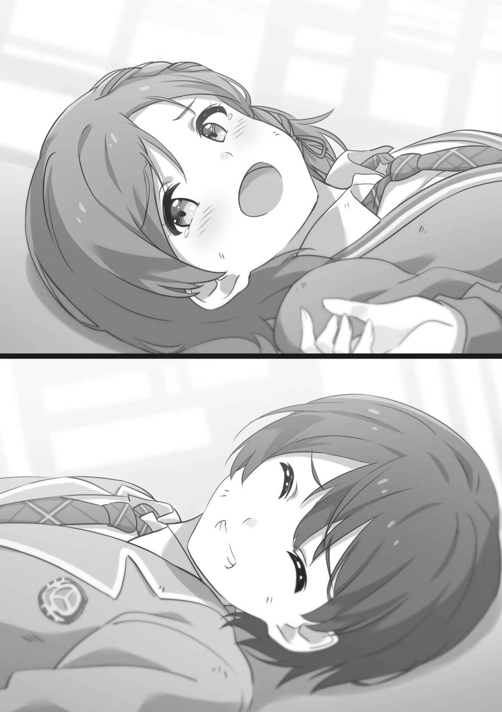
二人は買い物を進め、
やたらと食欲をそそる匂いに
「……試食したいのか？」
「し、したくないわ！」
「でも、よだれ出てるぞ」
「……っ！」
慌てて手の甲で口元を拭う朱音。
「……うそつき」
「せっかく用意してくれているんだから、食べたらいいじゃないか」
「は、恥ずかしいじゃない！」
「恥ずかしい？ なんでだ？」
「なんか、
「大丈夫だ。『いまいちだったからやめときます』って言えば」
「店員さん傷つくでしょ！」
「味を試すための試食なんだし、まずかったら買う必要ないだろ」
才人は朱音の腕を引っ張って試食コーナーへと連れて行く。
ためらう朱音の口に、ウインナーを突っ込む。
「あちゅっ……んぐ……むぐ……」
朱音はあたふたしながらウインナーを食べる。ごくりと
「おいしい……。これ、おいしいわ！ 才人も食べてみなさいよ！」
「おう」
才人もウインナーを口に運ぶ。弾力性のある肉に、
販売員が相好を崩す。
「これ、冷めても
「うっ……。やっぱり、高いわ……」
尻込みする朱音。気に入ってしまったのか、値札と睨めっこして悩んでいる。
「あんまり我慢するな」
「あっ」
小走りで追いかけてくる
「ちょっと、勝手に決めないでよ！」
「たった三百円で朱音が笑顔になるなら安いもんだろ」
「な、なによ、それ……。私はそんな安い女じゃないんだから」
朱音は
実際、ウインナーで家庭円満がもたらされるのだとしたら、才人としては願ったり
二人はレジに並んだ。
朱音は意気揚々と店員にポイントカードを差し出し、会計を済ませる。
「ポイント
「もちろんよ。新居に引っ越した次の日に作ったの。食材とか洗剤とか、結構ここで買い物するし、貯めないともったいないわ」
学生
二人で一つずつエコバッグを提げ、スーパーを出た。川沿いの広い道を帰っていく。
結構な時間を使っていたのか、街は夕暮れの空気を色濃く漂わせていた。
「朱音って、だいぶマメなんだな」
才人は素直な感想を漏らした。
朱音が才人を横目で
「せこいとか言いたいんでしょ」
「いや、そうじゃなく。将来、良い嫁になりそうだなと」
「は、はあ!?」
耳たぶが朱に染まる。
ころころと表情のよく変わるヤツだと、才人は感じた。いつも怒っている顔ばかり見ていたから、こんなにたくさんの表情を隠しているなんて、最近まで知らなかった。
朱音はそっぽを向いて、恥ずかしそうにつぶやく。
「……もう、結婚はしてるんだけど」
「あ。そうだった……」
才人は口を押さえる。なにか大胆なことを言ってしまったような気がして、自分も羞恥で体が熱くなる。
二人は目も合わせられないまま、肩を並べて帰り道を歩いた。
カーテンの向こうはほんのりと明るくなってきているが、まだ日の出には遠く、冷ややかな夜の気配を残している。
どうしてこんな明け方に目が覚めてしまったのだろう。
だが、身動きが取れない。
──触ったら指折るとか言ってたくせに！
これぞ世の不条理。しかし、怒る気にはなれない。
薄い寝間着に包まれただけの彼女は、夢のようにやわらかかった。
すべらかな素脚が才人の脚に絡みつき、細い手が才人のシャツを握っている。
優しい寝息と共に、彼女の胸がゆっくりと上下していた。
素肌の甘い匂いが、野の草花のような髪の香りと混じり、才人の
その破壊力たるや、健全な思春期の男子にとっては刺激的すぎる。
──動いたら……起きちゃう、よな……？
膝の上で猫が眠ってしまうと起こすのが申し訳なくなるが、それに近い心境。才人は身を硬くして息を殺す。
間近で見る朱音の寝顔は、天使のように愛らしい。
すべてを委ねて閉じた
普段は決して触れさせてくれない
その頬を指先で軽くつつこうとしたとき、朱音が目を開いた。
ぼんやりとした表情で才人の顔を眺める。まだ意識がはっきりしていないのか、胸板に顔をすりすりと押しつける。甘えてくる子猫みたいな仕草。
物理的にも精神的にもくすぐったくて、才人は声を漏らす。
「お、おい……」
「…………!?」
それがいけなかった。
朱音の意識が現実に引き戻される。
才人を突き飛ばす朱音。顔を青ざめさせ、枕を盾代わりに構える。
「わわわ私のこと襲おうとしてたわね!?」
「お前が抱きついてきたんだろ！」
「私がそんなことするわけないわ！」
「してたから！ ばっちり抱き枕にされていた！」
「あんたを抱き枕にするぐらいなら、巨大ウニを抱き枕にした方がマシだわ！」
「串刺しになりたいのか!? 俺は断じてなにもしてない！ お前を起こさないようじっとしていた！」
さっきまでの無邪気な寝顔とは正反対の険しい表情で、朱音が才人を
「なにもしてないなんて、ウソよ。私のほっぺたに爪を貫通させようとしてたじゃない」
「そんなエグいことはやろうとしてない」
才人は背筋が寒くなった。
「じゃあ、なにをしてたの」
朱音は枕を抱き締めて才人を見据える。言い逃れが許される空気ではない。
才人はため息をついた。
「……寝顔が
「なっ……」
朱音の顔が真っ赤になった。
その顔を枕に隠し、消え入りそうな声で尋ねる。
「そ、それ、ホント……？」
「ああ」
「か、可愛かったって、どのくらい……？」
「ちょっと理性を失いそうになるくらいです」
決して無実とは言えない才人は、素直に自供するしかない。
よほど怒っているのだろう、朱音はふるふると震えている。
枕の端から顔を
「……少しなら、いいわ」
「え？」
「だから！ 寝顔！ 少しなら見ていてもいいわ、って言ってるの！」
朱音はベッドに横たわる。才人の側に顔を向け、ぎゅっと目を閉じている。言葉通り、しっかり寝顔を見せるつもりらしい。変なところでも真面目だ。
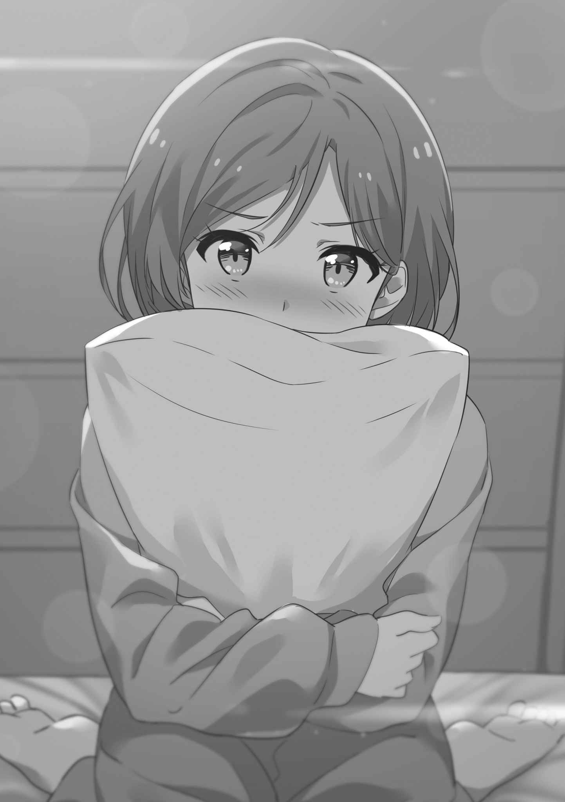
が、妙に鼓動が速くなっていて、とても寝付けそうにない。
朱音も眉間に
掛け布団の中で身じろぎするのも息苦しく、寝返りを打つこともできないままに、時間が過ぎていった。徐々に外が明るくなっていく。
ふっと眠りに落ちたと思ったときには、ヘッドボードの目覚まし時計が鳴っていた。何度かスヌーズ機能が発動していたらしく、普段より三十分も遅い。
アラームを止める才人のかたわらで、朱音が掛け布団を肩で上げるようにして起きる。寝間着の襟元がずれ、
「お、おはよう……」
気恥ずかしそうな笑顔だった。
犬猿の仲の二人には似つかわしくない、甘い空気が漂っている。
──新婚夫婦か！
と才人は思うが、
今まで色恋沙汰とは無縁だった才人としては、こういう甘酸っぱい雰囲気にどう反応したらよいのか分からない。
「……おはよう」
とりあえず気合いを入れ直そうと、洗面所に直行した。そのまま寝室に居続けると、自分を見失ってしまいそうな予感がした。
「きゃ────!?」
「どうした!?」
悲鳴が響き渡り、才人はキッチンに駆けつけた。
エプロン姿の
「ごはんが……ごはんが炊けていないわ……予約し忘れてたわ……」
「仕方ない。食パンも買ってただろ」
「それが……ぼーっとしてたら食パンも焦がしちゃって……」
コンロの上に直接置かれた食パンが、
「焦がすってレベルじゃねえ！」
才人は食パンを
なぜかパンの周りではキノコやタケノコも燃えている。まるで火あぶりにされる魔女を眺めているうちに自分まで燃えてしまった
才人は棚から鍋を取り、逆さまに『燃えパン』に
炎が消え、大量の煙がキッチンに広がった。
「どうしちゃったんだ？ 今朝は変だぞ？」
「才人こそ変じゃない。どうして服を着てないの？」
「なにを言う、俺が服を着ないでうろちょろするはずが……」
才人は体を見下ろし、己が上半身裸だということを悟る。いかなる運命の不思議か、ネクタイだけは着けているから変態度が高い。
「とりあえず……朝食を作るのは諦めよう。二人とも様子がおかしいから、家が全焼する危険性がある」
朱音は神妙にうなずく。
「そうね……さっきも制服にアイロンをかけようとしてバターを塗ってしまったし……」
「お前は本当にしっかりしろ！」
普段は超がつくしっかり者なのに、今日の朱音はボロボロだ。
シンクの蛇口にホースを
「なにをしている!?」
「消火作業よ」
「もう火は消えてるからな！ 台所が水浸しになる！」
「だとしても。私のやるべきことは変わらないわ」
「今のお前はなにもやるべきじゃない！ こっちでじっとしてろ！」
「私に指図するなんて生意気だわ……」
朱音はふくれっ面で膝を抱えるが、意外と大人しく待機している。
朝っぱらから激しい疲労を覚えつつ、才人はキッチンの片付けを済ませる。灰になった食パンとキノコたちを
あれやこれやと作業しているうちに、登校の時間が迫ってきた。
才人と朱音は学生
「大丈夫、お前はちゃんと服を着ている」
「あんたも服を着ているわ」
「なぜこんな確認をしないといけないのか……」
「二人とも寝ぼけてるから、しょうがないでしょ」
しかし正確には寝ぼけているのとも違う気がする才人である。
口論している余裕もないので、二人は急いで家を出る。
コンビニの近くを通りがかり、朱音が歩調を緩める。壁に貼られたポスターを物欲しそうに眺めている。ポスターに描かれているのは、新発売の
「腹減ったのか？」
「ええ……でも、買う時間も食べる時間もないし」
「メシ食ってないと勉強にならんだろ」
止めようとする朱音を振り切り、才人はコンビニに駆け込んだ。
苺クリームパンと野菜ジュースを手に取り、さくっと会計を済ませて外へ出る。値段はワンコインなのに、サイズは通常のクリームパンの三倍だ。
「こんな
朱音は目を見張った。ポスターのイメージからはかけ離れていたらしい。
「じゃあ、半分こな」
才人は苺クリームパンを適当に割って、片方を朱音に渡した。
「はんぶんこ……」
朱音は恐る恐るパンを眺め、ぱくっとくわえる。
「……クリームに赤い着色料を混ぜてみましたって感じの味ね。苺らしさがあんまりないわ。開発者に苺への愛がないわ」
「
才人が取り上げようとすると、朱音はパンを遠ざける。
「これは私のよ！
「俺が買ってきたんだけどな！」
「贈与された時点で私のものよ。返す義務はないわ」
上機嫌でパンをぱくつく
朱音と肩を並べ、才人はもう半分のパンをかじる。
「どう？ いまいちでしょ？」
「いまいちだな」
けれど、悪い気分ではない。安っぽいパンを分け合って、批評しながら歩くのも、たまには良いかもしれない。
二人が学校に向かっていると、
「あれ？ 才人くん？ 朱音？」
驚いたような声が聞こえた。長い金髪をなびかせ、
「「────────!?」」
凍りつく才人と朱音。
「珍しいねー、学校の外で一緒なんて。二人で登校してるの？ なんでなんでっ？」
純朴な瞳を躍らせ、興味津々で追及してくる。
──しまった……!!
致命的なミス。才人は一生分の冷や汗を流している自覚があった。
朝からバタバタしていたせいで、いや、頭のネジが何千本か外れていたせいで、朱音とタイミングをずらして出かけるのを忘れていた。こんなことにならないように、いつもは厳重に注意していたのに。
隣を見やると、朱音も顔面
「ふ、二人で登校するわけないじゃない！ こ、これはあれよ！ 才人が私のストーキングをしているのよ！ 今すぐ警察を呼んで！」
「ちょっと待て」
斜め上からの
陽鞠が首を
「ストーカーって感じじゃないけどなぁ……二人で楽しそうにおしゃべりしてたし、なんかパンを半分こしてるみたいだし？」
「かっ……」
朱音の喉から解読不能な声が漏れた。絶大なダメージを受けたことだけは読み取れた。
「こ、これは、その……」
朱音は悩む。脳の処理能力がとっくに限界を超えているのだろう、ぐるぐると目を回し、手を振り回している。
「そ、そうよ！ これは私が食べきれない分を道に捨てたのを、
「才人くん……？」
「俺は犬じゃない」
「ええ、才人は犬ではないわ……。こういうことをする人間なの……私が道になにか捨てる度に、欲望のままに貪るの……」
「名誉毀損で訴えてもいいか」
才人は
陽鞠が
「こらっ」
「ひゃっ!? な、なにするのよ……」
朱音はおでこを押さえて涙目で後じさる。
──親友としてこの女をたしなめてくれるのか。いいぞ、きちんと叱ってやってくれ。
才人は期待するが。
「道に食べ物をポイ捨てしたらダメだよ。ちゃんと最後まで食べないと。カラスとか野犬とか才人くんとか寄ってくるからね」
「ごめんなさい」
しょんぼりする朱音。
──そっちじゃない！
才人は声を大にして主張したいが、二人で登校していたことについては話題がそれたので、ぐっと
お互いの努力あって、二人の生活は大幅に向上した。
買い物の協力や家事の分担に加え、娯楽の時間を共有することで、緊張が緩和される。
相変わらずケンカは絶えなかったが、前に比べて致命的な争いは減り、意外にも楽しい日々が続いていた。
そうすると、見えてくるものがある。
戦火と砲弾の中では見えなかった、朱音の感情や思考、そして長所。
その一つが、頑張り屋なところだ。
真夜中を過ぎても朱音が寝室に来ないときは、だいたい自分の個室にいる。かつてはギチギチに施錠されていた個室だが、今夜は扉がわずかに開き、室内の明かりが廊下に漏れている。
「もう遅いぞ。なにしてるんだ？」
引っ越してきたときは他の部屋と同じ木の香りだったはずなのに、いつの間にか
机に向かっていた朱音が振り返る。
「勉強。もうすぐ小テストがあるから、範囲の内容を全部覚えておこうと思って」
才人は肩をすくめる。
「小テストは適当でいいだろ。定期テストで良い点を取れば」
「そういうあんたはこの前の小テストも百点だったわよね！」
「普通に解いたら百点になっただけだ。テスト勉強はしてない」
「うぐぐ……それでなんで百点になるのよ……」
朱音は悔しげに拳を握り締めた。
「授業で聞いたら覚える。忘れる方が難しい」
「
「そんなつもりはないが……大変だな」
才人はねぎらおうとするが、裏目に出たのか。
「……っっ!! もう出てって！ ジャマしないで！」
朱音がぬいぐるみを投げて才人を
しまったと思いながら、才人は部屋を離れた。最近はそこそこ関係が
個室の扉は閉じられてしまったし、鍵のかかる音もした。このままだと、明日の朝食も険悪な雰囲気の中で取る羽目になるかもしれない。
──なにか……朱音の機嫌を直す方法があればいいんだが……。
それが分かっていたら、二年以上も戦争は続かない。勉強よりも朱音心はややこしい。
才人は思案に暮れ、
キッチンで冷蔵庫のドアを開き、中を確かめる。
楽しみに取っているのか、苺はまったく減っていない。これをそのまま出しても構わないが、『食べたかったら自分で用意するわ』と言われる可能性が高い。
やはり、一手間かけた方が良いだろう。朱音は苺ショートケーキが大好物だから、それに近い食べ心地のものは好むはずだ。
戸棚の中には、常備用の食パンがあった。これとホイップクリームで苺サンドイッチでも作ろうかと才人は考えるが、冷蔵庫にホイップクリームはない。
──プロテインをしっかりシェイクすれば、クリームの代わりになるのでは？
だが、即座に脳内で
冷蔵庫を開けてみると、中にプレーンヨーグルトが入っていた。色といい食感といい、これならホイップクリームの代わりになるだろう。世の中には生クリームを乳酸菌で発酵させたサワークリームというものもある。
才人はヨーグルトを器に移して砂糖をたっぷり入れ、とろとろになるまで
できあがった苺サンドイッチを平皿に重ね、上にミントの葉を載せようとしたが……ない。そんなお
仕方ないので才人は苺サンドイッチの上にパセリを載せた。パセリの緑、パンとヨーグルトの白、苺の赤で、彩りは美しく見える。
才人は出来映えに満足し、サンドイッチの皿を持って朱音の個室の方へ戻った。
『あかねのへや』と木製の
才人は軽く息を吸ってから、扉をノックする。
「なんの用？」
朱音の怒りはまだ収まっていないらしく、険しい声。
「夜食を作ってきたんだが、勉強のお
「夜食……？」
扉をわずかに開けて、朱音が顔を
好みじゃない、せっかくの苺を無駄にしないで！ などと憤慨させるリスクもある。その場合はさらに関係が悪化するかもしれない。
才人は緊張しながら皿を差し出す。
「いちごさんどいっち!!」
朱音が瞳を星のように輝かせた。
大丈夫、ものすごく好物のようだ。才人は
「ど、どうしてこんなものを私に作ってくるの……？ なにを
「なにも企んでない」
「企んでいるに決まっているわ。じゃないと、ケンカした直後に塩を送るようなこと、するわけないもの」
ハッとする朱音。
「分かったわ！ このサンドイッチの中に睡眠薬を入れているのね!? そうして私がテスト勉強をできないようにして、０点を取らせる陰謀でしょ!?」
「入れてない。というかテスト勉強しないだけで０点を取るようなら、授業態度を見直した方がいい」
「じゃあ……なに……？ 実は
「そんな面倒なことはしない。普通に苺サンドイッチだ。食え」
「きゃっ」
「じゃあな。要らなかったら捨ててくれ」
「ちょ、ちょっと！ 勝手に置いていかないで！」
朱音の文句を背中に、才人は部屋の前から立ち去った。
ようやく邪魔者がいなくなり、朱音は勉強を続ける。小テストに出ると予想される範囲のノートを書き写し、暗唱し、さらにノートを再構成して頭に刻み込む。
学業に妥協は許されない。テスト勉強もせず平然としているあの男──才人を徹底的に打ち負かさなければならない。
しかし、どうも集中できなかった。
捨てるわけにもいかないのでサイドテーブルに置いた苺サンドイッチ。そっちをちらちらと見てしまい、ノートから意識が外れる。
──おいしそう……。
朱音はごくりと唾を
でも、おかしいのだ。自分は才人に冷たく当たってしまったのに、夜食を差し入れしてくれるなんて。そんな優しいこと、あの男がするはずもない。
疑念が渦巻くが、深夜の空腹も襲ってくる。大好物をすぐそばに置き去りにされて、長時間ガマンできるわけがない。そこまで計算しているとしたら、才人は悪質な策謀家だ。
──ちょ、ちょっとだけ、味見ぐらいなら大丈夫よね……？
朱音はサンドイッチを一つ手に取り、おっかなびっくりかじった。
酸味の利いた爽やかなクリーム。みずみずしい苺が口の中で
もっちりした食パンが、確かな満足感と共に喉を通っていく。
「…………おいしい」
睡眠薬が混入されている気配も、プロテインが使われている様子もない。普通に安全な夜食を、しかも朱音の好きなものを考えて、
ひょっとしたら、朱音と口論になってしまったのを反省し、仲直りするために差し入れしてくれたのかもしれない。
そう考えると、朱音は胸の奥がむずむずするのを感じた。温かくて、くすぐったくて、落ち着かないけれど……でも、嫌な気持ちではない。
「こ、こんなので、テストを手加減してあげたりはしないから」
朱音は
甘い。
お
いつも以上にやる気が出てくる。
──今日は朝まで頑張るわ！
朱音は再びノートに向かい、シャーペンを握り締めた。
学校の廊下を歩いていると、朱音の意識が一瞬途切れた。
「朱音!? 大丈夫!?」
声がして、気づけば
「あ……ちょっと寝ていたわ」
「寝ていたわ、じゃないよー！ 歩きながら寝ちゃ危ないよ！」
陽鞠は冷や汗を
「ごめんなさい。今度から寝そうなときは、その場で座ることにするわ」
「床に座って寝るのもどうかと思うけど……ここんとこ、朱音いつもふらふらしてるよね。顔色も良くないし、ホントに大丈夫？」
「毎日遅くまでテスト勉強してて、寝不足なのよ」
朱音と陽鞠は連れ立って学生食堂に入る。
中は昼食の生徒たちでごった返していて、あいだを抜けるだけで精一杯だ。普段はあまり学生食堂を利用しない朱音だが、今日は弁当を作る余裕がなかったから仕方ない。
二人はトレイを持って列に並ぶ。
「勉強も程々にしなよー？ 体壊しちゃうよ？」
「たとえ私の体が粉々に砕け散っても、学年一になれるならそれでいいわ……」
「良くないよ！ 成績より朱音の体の方が大事だよ！ どっちみち今回も才人くんには
「
「あっ」
「才人には絶対勝つわ！ 何百年、ううん、何千年かかっても、必ずボコボコのズタボロにして、私の方が上だと認めさせるわ！」
「何百年も
「お、追いかけないわよ！ そんなことしたら私がアイツを好きみたいじゃない！」
朱音は首筋が熱くなる。息も苦しいのは、食堂の人口密度がひどいせいだろう。
陽鞠はオムライス、朱音は
窓際のテーブルに、才人と
「向こうに才人くんたちいるよー。一緒に食べない？」
「一緒は無理！」
「どして？」
「どうしても！」
この前も朱音は、才人となにかあったのかと陽鞠から不思議がられたところなのだ。ランチを相席して、
クラスメイトと結婚して同居して夜も同じベッドで寝ているなんて、陽鞠に知られたら幻滅されるかもしれない。唯一の親友を失いたくない。
朱音と陽鞠は、才人たちから離れた席に座った。
皿の上のパンケーキは、こんがりときつね色に焼き上がっている。たっぷりと載ったクリーム、新鮮な苺に、お
でも……今日はなぜか昔ほど
「朱音ってすごいよねー」
「え？ なにが？」
「私だったら、そんな毎日勉強できないよ。赤点ばっかの私の方が、もっと勉強しなきゃいけないってのは分かってるんだけどさ。ついスマホで動画とか
朱音はフォークを皿に置いた。
「まあ、勉強は嫌いじゃないし。それに……今は応援してくれる人もいるし」
「だれだれっ!? 男の子!? 恋人でもできた!?」
「そ、そういうのじゃないわ！ 勉強してたら夜食を作ってくれたりするだけよ！」
「お母さん!?」
「お母さんでもないわ！」
「お父さん？」
「うちのお父さんは夜食なんて作れないわ」
陽鞠は顎をつまんで名探偵のように考え込む。
「男の子じゃなく、親でもなく、夜食を作って応援してくれる人……？」
高々と人差し指を突き上げる。
「分かった！ 犯人はメイドさんだよ！」
「名推理ね。そう、勉強を全力サポートしてくれるメイドさんを雇ったの」
朱音は肩をすくめて笑った。
「もー、バカにしてるでしょー。バカだからってバカにしちゃダメなんだよー」
「バカにはしていないわ」
「教えてよー。朱音ー」
陽鞠が朱音の手を振り回す。
──まさか、
改めて考えると、朱音は気恥ずかしくなってくる。彼とはケンカばかりだったから、こんなふうになれるとは予想もしていなかった。
才人の協力を無駄にしないためにも、才人を必ず打ち倒す。
朱音は己の心に誓った。
毎晩、朱音は深夜の勉強を続けていた。ベッドに潜り込む朱音に才人が起こされ、時計を見れば明け方三時なんてことが繰り返される。
疲れを
ただ、用意した夜食を毎度残さず平らげてくれるのは、才人も達成感があった。自分の食事をこしらえるのは面倒だからプロテインと野菜ジュースで済ませたくなるが、人に食べてもらえるのは悪くない。
今夜もまた、
ドアをノックするが、返事はない。
「夜食、持ってきたぞ」
「寝てるのか？ 寝るならちゃんとベッドで……」
近づいた才人は、朱音の様子がおかしいことに気づいた。
眠っているにしては呼吸が不規則で、苦しそうに肩が上下している。
額に
「……具合悪いのか？」
「全然……悪くないわ……ちょっと休憩しているだけよ……」
絞り出すような声。
才人は朱音の額に手を当てた。朱音は才人の手を振り払わず、されるがままになっている。額は焼けるように熱い。
「すごい熱だな……今夜はもう寝ろ」
「え、ええ……」
言い返す気力もないのか、珍しく素直に聞き入れる。
才人に手を貸してもらって寝室に移動し、ベッドに倒れ込む。
枕に
才人は朱音の体に布団をかけた。
リビングから救急箱を持ってきて、体温計を取り出す。
「熱、測ってみた方がいい」
「……………………」
才人の前なのに、朱音は寝間着のボタンを外そうとする。
だが、ボタンに指をかけたところで力尽きてしまう。
「口、開けてみろ」
才人が告げると、朱音は口を
弱々しい吐息を漏らす唇の隙間に、才人はそっと体温計の先を入れていく。
朱音は体温計をくわえるのも厳しいらしく、才人が体温計を支える。表示されている温度があっという間に上がっていき、四十度を超える。
「四十度はきついな……。ちょっと待ってろ」
才人は救急箱から冷湿布と解熱剤を探し出した。冷湿布を朱音の額に貼る。ウォーターサーバーでコップに水を注ぐ。
自力では
「はぁ……はぁ……はぁ……」
水を飲むだけで体力を使ったのか、朱音は才人の腕にすがりついて荒く息をした。この弱り方は尋常ではない。
「汗びっしょりで……気持ち悪いわ」
朱音の首筋は
才人は浴室でタオルを水に浸し、軽く絞ってから寝室に戻った。
「体拭くぞ」
「うん」
朱音は焦点の合わない瞳で寝間着を脱ごうとする。細い腰が
「待て待て、脱がんでいい」
才人は慌てて止めた。裸の方が拭きやすいかもしれないが、後で正気に返った朱音からどんな非難を浴びるか分からない。
才人は濡れタオルで朱音の首筋を拭いた。
「んっ……」
朱音の喉から、気持ち良さそうな声が漏れる。
才人は朱音の顔にも濡れタオルを滑らせ、汗を取る。袖をまくり上げ、細い腕を拭く。寝間着の裾からタオルを入れて、腰やお
「もう……そこは……めっ……」
才人の指が素肌に触れると、朱音はくすぐったそうな声を出した。
普段とは違って無防備な朱音。
少女の服の中に手を入れているという非日常に、才人の鼓動が速くなる。
体を拭き終え、才人は朱音をベッドに寝かせた。
熱が
もう夜も遅いが、才人は横になるのを
──どうして俺、心配しているんだ……？
才人は己の心境に驚いた。
天敵のような少女、学校で絡まれるだけで腹が立つ少女のはずだった。
いつも生意気で、なにかというと勝負を挑んできて、素直さの
ずっと、そう思っていた。
けれど今、
「勉強……しなきゃいけないのに……」
「勉強しすぎたせいで倒れたんだろ。夜更かしばっかりしてるけど、無理は良くないぞ」
才人は
「無理してでも……
「夢？」
才人は尋ねた。
朱音が、消え入るような声で語る。
「私……お医者さんになりたいの。苦しんでいる人がいたら、すぐに助けてあげられるような人に。なにもできない自分なんて、嫌だから。大好きな人には、いつまでも元気でいてほしいから」
それは多分、いかなる
朱音の心臓に
「でも、うちは医学部に通わせてもらえる余裕はなかったし。あんたと結婚したらおばあちゃんが学費も全部出してくれるって言ったから、それで……」
「なるほど……」
夢──大人たちはきっと、くだらない幻想だと笑うのだろう。
けれど朱音にとって、そして才人にとっても、夢は人生を賭けるに値する。
たとえそのために人生の他の部分を支配されても。
大抵の人間がなによりも大切だと守る、自由や感情を犠牲にしても。
才人が結婚したのは、夢のため。
朱音が結婚したのは、夢のため。
ひょっとしたら二人は、どこか根本的なところで、同じ。
「あんたはいいわよね。のほほんとしてても成績が良くて。私がどんなに頑張っても勝てないの、悔しくて仕方なかったわ」
熱に浮かされているのだろうか、今夜の朱音は口数が多い。
「才能は個人差があるから仕方ない」
「そういうとこが嫌いなのよ！」
才人を
彼女の唇から、ぽつりと、言葉がこぼれ落ちる。
「……そして、ちょっと憧れてた」
「憧れ…………？」
すぐには、
自分を嫌っている
朱音はハッとする。
「ま、待って！ 今のは無し！ 全然憧れてないわ！ あんたのことは大嫌いよ！」
慌てて撤回するのが、余計に
才人は耳の奥で、脈が大きく打つのを感じた。
天敵だと思っていた少女の素顔が少し
朱音は恥ずかしそうに才人に背を向け、顔を布団に隠した。
動いたせいで消耗したのか、激しく
「解熱剤、効いてきたか？」
「……分かんない」
才人が額に手を当てると、朱音は身じろぎした。
「さっきより熱くなってるな。救急車を呼んだ方がいいか」
「やめて。おおごとにしないで。救急車はもっと危ない人が使うものよ」
「四十度以上の熱は、ただの風邪じゃない可能性もある。お前も医者を目指してるなら知ってるだろう」
「そうだけど……私を運んだせいで重病の人が亡くなったりしたら、自分を許せないわ」
「お前な……」
高熱で苦しみながらも、見も知らぬ人間のことを考えてしまうのか。この少女はわがままなように見えて、実は恐ろしく純粋なのかもしれない。
才人はスマートフォンでタクシー会社の番号を調べ、電話をかける。
だが、こんなときに限って、なかなか
夜の街で遊んでいた人々の帰宅ラッシュなのだろうか。
ほろ酔いの彼らを運ぶくらいなら、病気の人間を助けてほしいのに。
「くそっ、こっちも話し中か！」
才人は焦りながら電話を切る。
夜間診療を受け付けている最寄りの病院までは、バスで十分。しかし、この時間にバスが通っているわけもない。
朱音が告げる。
「いいから、もう寝て。あんたは明日も学校あるんだし」
「ダメだ」
「きゃっ!?」
才人は朱音をベッドから抱き上げた。
「な、なに……するのよ……」
「嫁がつらそうにしているのに、放ってはおけない」
「……っ。よ、嫁って……」
「意外と力ある、のね……」
朱音はささやいて、才人にしがみついた。
他に誰もいない夜道を、才人は駆ける。
二人を包むのは暗闇。
聞こえるのは自分の靴音と、朱音の切なげな吐息。
彼女の体は思っていたよりずっと軽かった。
細い腕に、細い脚。
地面に落としただけで、簡単に砕けてしまいそうなガラス細工。
こんな小さな体で、彼女はいつもケンカを売ってきていたのか。ありあまるエネルギーと意志力が印象的すぎたせいで、才人には普段の朱音が大きく見えていた。
けれど……本当の彼女は、
こうやって支えていないと、見守っていないと、たやすく消え去ってしまうほどに。彼女の魂は、花火のように華々しくて危なっかしい。
才人は朱音を抱え直す。
「……お前の夢、初めて聞いたよ」
「私には無理だって、バカにするのね」
「するわけないだろ。お前ならできる」
「どうして」
「なにがなんでもやり遂げるだろ？」
「まあ……うん。そうね。私、諦めるの苦手だから」
腕の中で朱音が
夢とか、将来とか、そういう心の奥底に眠るものについて、才人は今まで朱音と語り合ったことがなかった。
高校入学のときから接していても、共に暮らすようになっても、朱音のことはほとんど知らない。二人はケンカばかりで、まともに対話しようともしなかったから。
だけど、ようやく少しずつ、朱音の素顔が見えてきたのだ。そこには、彼女の外見よりも美しいなにかが隠されている。
ここで
──もっと知りたい。朱音のことを。
その一心で、ひたすらに走る。
空気が薄くなったような気がして、才人は大きく口を開けて
心臓が激しく打ち、肺が破れそうに痛い。
朱音を抱える腕が
だが才人は速度を緩めない。止まるわけにはいかない。
なおも勢いを増し、朱音をしっかりと抱いて病院を目指す。
才人の熱い息が、冷えた夜闇に白く踊る。
大嫌いな女子と結婚した。
それはとても、不幸なことだったけれど。
でもきっと、この結婚は──いつかハッピーエンドになる。
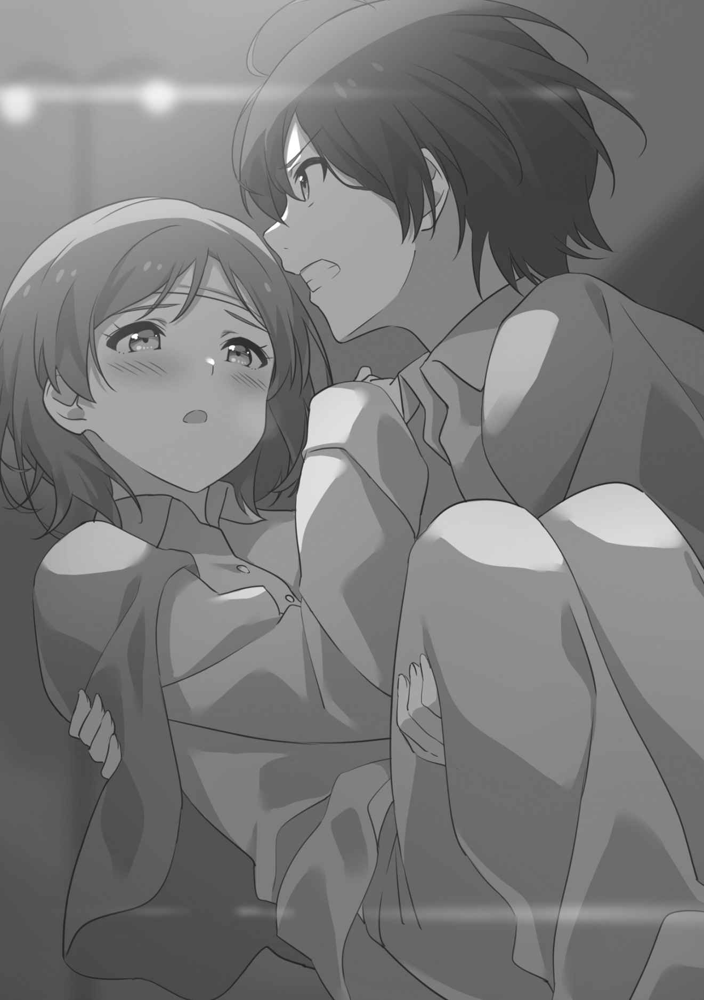
そしてまた、二人の朝が来る。
寝室に
少女の甘い匂いが染み込んだ布団が全身をやわらかく包み込み、心地良いまどろみへと誘ってくる。最近は
才人が二度寝しようとしていると、近くから朱音の声がした。
「いつまで寝てるの。起きなさいよ」
「うん……分かってる分かってる」
才人は生返事をして、さらに布団の奥深くに埋まっていく。
「分かってないじゃない。学校遅れるわよ」
「仕方ない……学校は一ヶ月くらい休む……」
「なに言ってるのよ、もう。起きてってば」
朱音が才人の肩を揺するが、揺すり方が優しいせいで、才人は余計に眠くなっていく。夢の世界に落ちかけたとき、耳元で朱音がささやいた。
「今すぐ起きないと、ベーコンエッグを作ったばかりのこの熱いフライパンで起こすわ」
「…………!?」
跳ね起きる
「おはよう」
ベッドのかたわらで、
「……鬼め」
「あら、せっかく起こしてあげたのに、鬼は失礼よ。ちゃんと感謝しなさい」
「……ありがとう」
「ございます、は？」
「ありがとうございます！」
「よろしい」
朱音はふふんと鼻を鳴らした。
高熱にうなされていたときはしおらしかったのに、調子が戻るとこれだ。あの夜からしばらく
──まあ、こっちの方が俺も落ち着くけどな。
素直な朱音には違和感があるし、弱った彼女を見ているのは気分が良くない。口が減らない方が落ち着くというのも、自分が毒されているようで心配だけれど。
ベッドを下りる才人を、朱音が非難がましく見る。
「昨日あんた、顔を洗わないで学校行ったでしょ」
「雨降ってたし、雨で流れるからいっかと思って」
「良くないわよ！ あんた原始人!? 教室に入ってきたときびしょ
「風邪薬を飲む」
才人は
「そういうことを言ってるんじゃないわよ！ 顔を洗うぐらいは、人間として当然のことでしょ!?」
「人間をやめたら顔を洗わなくていいのか……その手があったか」
廊下を歩く才人に、朱音がついてくる。
「その手はないわよ！ 勉強だけはできるくせに、あんたってそれ以外のことは全然ダメよね。放っておいたら体中にキノコを生やして暮らしそうだわ」
ガミガミと、まるで口うるさい母親だ。
少しは大人しくさせようと、才人は振り返って肩をすくめる。
「俺にそんな口を利いていいのか？」
「は……？ なによ、偉そうに……」
眉を寄せる
「お前、言ってたよな？ 憧れの相手……だっけか？」
「…………っっっ!!」
朱音は顔を紅潮させた。
ぶんぶんと手を振り回して弁解する。
「あ、あれは違うって言ったでしょ！ 熱で
「間違えたようには聞こえなかったがなぁ？ スマホで録音もしてるから、クラスの誰かに聞かせて判断してもらうか」
「スマホごとあんたを溶岩に沈めるわ────!!」
襲いかかってくる朱音をひょいとかわし、
用を済ませた才人は、きちんとトイレの便座を下げておく。以前のように上げっ放しにして朱音を怒らせるのは本意ではない。なるべく我が家では快適に過ごしたい。
才人は洗面所に入り、顔を洗う。
タオルで顔を拭いて鏡に目をやると、後ろに朱音が映っていてぎょっとする。
朱音は廊下側の壁に隠れて、じーっと才人を見ていた。
いつの間にか背後を取られていたことに、才人は脅威を覚える。
「な、なんだ……？ スマホは今持ってないし、録音してたってのは冗談だぞ？」
「……ドレッシング」
「え？」
「サラダのドレッシング、フレンチとオニオンのどっちがいい？」
「えっと……オニオンで」
「分かったわ。さっさと準備済ませて、ごはん食べに来なさいよね」
朱音はそっぽを向いて去っていった。
才人が自分の教室に入ると、
相変わらずの人形じみた風体で、ほぼ人形が歩いているようにしか見えない。他の女子たちが「かわい～」「ほほえま～」などと、クラスメイトに向けるには無礼な感想を漏らして観賞している。
糸青が才人の胸に顔をうずめ、すんすんと鼻を鳴らす。
「なにをしている」
「毎朝の日課、
「そんなもの日課にせんでいい」
「重要。変な女に引っかかっていないか調べないといけない」
「匂いで変な女かどうかは分からんだろ」
「分かる。腐肉の匂いがしたら、相手はゾンビ」
「ゾンビと付き合う趣味はない」
特定されるだけなら問題ないが、クラスメイトたちの注目を集めている状態でうっかり口に出されたら
いつでもこの人形の口を塞げるよう、才人は手の平を
糸青は警戒心なく、才人の手の臭いを嗅ぐ。
「ベーコンエッグ、オニオンドレッシングの海藻サラダ、コーンスープ、チーズトーストの匂いがする」
「なぜ分かる!? 手は洗ったはずだぞ!?」
「洗っても無駄。
「まさか……」
才人は手を嗅いでみるが、ハンドソープの匂いしかしない。糸青の洞察力は恐ろしい。
糸青は薄い胸を張る。
「これらのことから導き出される結論は一つ……兄くんが付き合っているのはベーコンエッグ」
「その可能性だけはない」
恐れた自分が馬鹿だったと才人は胸を
「シセもベーコンエッグ食べたい。今度、兄くんのおうちにお邪魔したい……食事時を狙って」
「狙うな」
「ダメなら実力行使で奪い取る」
糸青はファイティングポーズを取るが、拳が
「お前、腹減ってるだろ。朝メシ抜いたのか？」
「ちゃんと食べた。しかし兄くんの匂いに食欲を抑えられない」
じゅるりとよだれを垂らす糸青。
「俺を食べそうな顔はやめろ」
「食べない。兄くんは食糧じゃないってかろうじて理解できる」
糸青が才人の首筋に
「かろうじてさえ理解してない！ 正気に戻れ！」
クラスの女子連中が目を光らせて群がってくる。
「お
ペットとしか思われていないラインナップが飛び出す。
「あ～れ～」
糸青はクラスの女子たちに誘拐されていく。女子たちは愛玩動物を
才人はようやく一息ついて、机に教材をしまった。
教室は糸青とその取り巻きが騒々しいので、のんびりしようと廊下に出る。
窓から流れ込む風は花の香りを乗せて心地良く、あくびが込み上げる。
そこへ
「才人くん、おっはよー！」
「おはよう。今日も元気だな」
才人は会釈した。
「元気が私の取り得だからね～！」
陽鞠は髪を揺らして才人の隣に立つ。
「
「おう、尊敬しろ。そして
才人は親指を突き上げた。
「あははっ、そういう変なところもイイよね！」
「変か、俺……？ シセならともかく……」
「才人くんも変だよー。勉強はできるのに、才人くんってなーんにも分かってないってゆーか、ぶっちゃけ鈍いよねっ」
「もうちょっと離れてくれ」
「あっ、なになにっ？ 才人くんってば照れてる？」
「照れてない」
「照れてるよー。才人くんも男の子だもんね！」
「照れてないと言ってるだろ」
「あはは、冗談冗談。またね！」
才人がため息をついていると、
靴音も高く、不機嫌そうに眉を寄せている。
──ケンカでも始めるのか……？
才人は身構えた。これ以上、朝っぱらから体力を消耗したくない。
朱音は無言でうつむき、才人の服をくいくいと引っ張る。
「ど、どうした？」
困惑する才人。
いつも通りの日常に戻ったように見えるけれど、いつも通りではない。
近頃はどこか、彼女の態度が違う。
朱音が
「よ、嫁がいるのに、他の子と仲良くしすぎるのは……ダメだからね？」
──最近、俺の嫁が
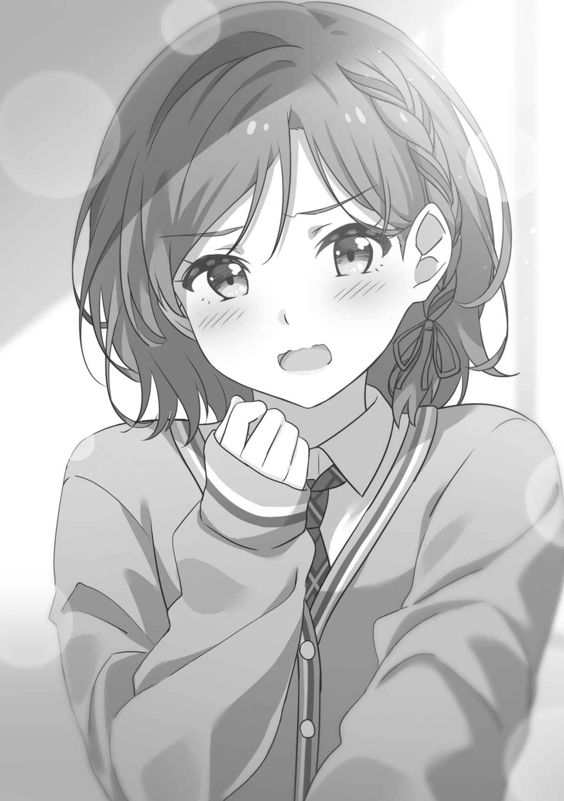
あとがき
こんにちは、作家の
新人賞からデビューし、ライトノベルや一般小説、児童文学などを出版したり、シナリオを書いたりしています。最近はＹｏｕＴｕｂｅ作家としての仕事が増えています。
世の中に、同じ人間はいません。価値観が完璧に合う相手もいません。
それでも歩み寄ることで、人は調和できる。お互いを尊重することで、愛を育むことさえできる。そんな気持ちを込めて書いた一冊でした。
この作品は、ＹｏｕＴｕｂｅチャンネル『漫画エンジェルネコオカ』で天乃が脚本を書いた漫画動画を小説にしたものです。心理を掘り下げ、シーンを大幅に増量していますので、初めての方も、漫画動画でご存じの方も、お楽しみいただけると思います。
『漫画エンジェルネコオカ』では、他にもいろんな作家さんが恋愛漫画を更新しています。よろしければ、そちらもご覧ください。
この作品をお届けするにあたっては、たくさんの方にお世話になりました。
担当編集のＫ様。「あなたのラブコメが大好きです」と声をかけてくださって、非常に
イラストレーターの
漫画家のもすこんぶ先生。ＹｏｕＴｕｂｅでこれほど人気になったのは、先生の
『漫画エンジェルネコオカ』の皆様。動画制作やプロモーションなど全力のご支援、ありがとうございます。天乃一人ではここまで来ることはできませんでした。
そして、この本を手に取ってくださった読者の皆様。本当にありがとうございます。才人と朱音の結婚生活をもっと描きたいと思っていますので、お知り合いやお友達にオススメしていただけると嬉しいです。これからも二人をどうぞよろしくお願いいたします。
激動の年に 二〇二〇年十一月二十日 天乃聖樹
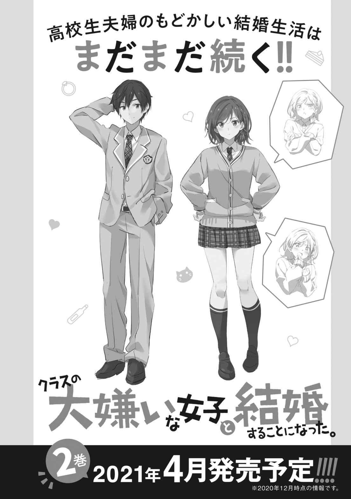
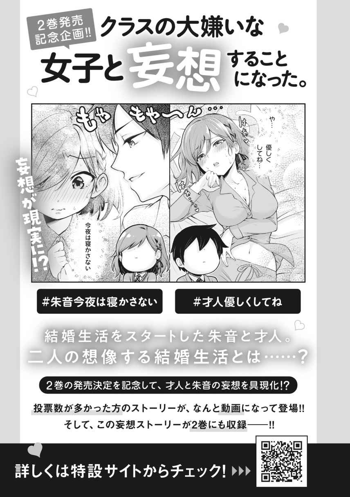
電子書籍特典 書き下ろし短編
『敏腕セラピスト』
「
「俺の疲れを取ってくれようとしていたみたいだから、別にいいが……」
ここは糸青の自室。ぬいぐるみやら西洋人形やらが飾られていて女の子らしい。が、水晶玉やお洒落な頭蓋骨も置かれているのがちょっと怪しい。
「シセが責任を持って兄くんを治す」
「いや、気にしないでくれ」
「針をツボに刺す治療法もあるらしいから、布団針をたくさん用意した」
「ぶっとい針だな！ 気にするなって言ってるだろ！」
糸青が意気込む。
「シセは兄くんに針を刺してみたい」
「お前がやってみたいだけかよ！ ぬいぐるみにでもやってろ！」
「もちろん試しにぬいぐるみも串刺しにした」
「こっっわ!!」
可愛いクマのぬいぐるみはウニのようになっている。
針を構えてにじり寄ってくる糸青に、後じさる才人。決して凶暴な少女ではないし、善意でやっているのは分かるのだが、だからこそ恐ろしい。
「兄くんがそんなに針が怖いなら、お灸でもいい。モグサを腰の上に置いて燃やす」
「お前はなんでそんなに古風な治療を試したがるんだ。ていうか無免許だろ」
「大丈夫、シセは訓練を積んでいる。何度も想像の中で試した」
「イメージトレーニングだけの闇医者に身を任せる勇気はないな」
才人は飽くまで拒否する。いかなる代償を払おうと、自らの腰を死守する覚悟である。
「せっかく兄くんの全身を燃やせるだけのモグサを準備したのに」
「全身を燃やすな。お前は俺を治したいのか、それともトドメを刺したいのか」
「兄くんが笑顔になるなら、どっちでもいい」
「トドメを刺されて笑顔になる奴はやばいと思うんだよなぁ……」
これ以上の暴挙を防ぐべく、才人は糸青を羽交い締めにする。
糸青は才人に背を預けて満足げな吐息を漏らす。
「兄くんに捕まったので、本日のオペは失敗」
「失敗して良かったよ……」
才人はため息をついた。
クラスの大嫌いな女子と結婚することになった。
【電子特典付き】
ＭＦ文庫Ｊ
2020年12月25日 発行
ver.002
©Amano Seiju 2020
本電子書籍は下記にもとづいて制作しました
ＭＦ文庫Ｊ『クラスの大嫌いな女子と結婚することになった。』
2020年12月25日 初版発行
発行者 青柳昌行
発行 株式会社ＫＡＤＯＫＡＷＡ
●お問い合わせ
https://www.kadokawa.co.jp/
（「お問い合わせ」へお進みください）
※内容によっては、お答えできない場合があります。
※サポートは日本国内のみとさせていただきます。
※Japanese text only
本電子書籍の全部または一部を無断で複製、転載、配信、送信すること、あるいはウェブサイトへの転載等を禁止します。また、本電子書籍の内容を無断で改変、改ざん等を行うことも禁止します。
本電子書籍購入時にご承諾いただいた規約により、有償・無償にかかわらず本電子書籍を第三者に譲渡することはできません。
本電子書籍の内容は、底本発行時の取材・執筆内容にもとづきます。